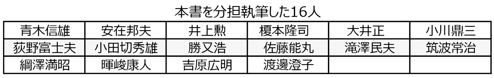
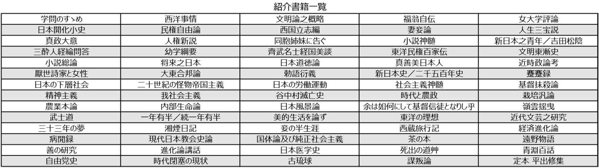

| [明治150周年記念] 名著から問題を読み解く! 明治から日本の未来を考える (8) 明治の名著 (impress QuickBooks) | |
| 平田 周三 | |
| 株式会社インプレス (2018) | |
目次
小田切秀雄／渡邊澄子 著
『文明論之概略』 福沢諭吉
『論語と算盤』 渋沢栄一
『自警録』 新渡戸稲造
『天災と日本人』 寺田寅彦
『一年有半・続一年有半』 中江篤介
『帝国主義』 幸徳秋水
『石橋湛山評論集』 松尾尊兊
『勝利者の悲哀』 徳富蘇峰
『古琉球』 伊波普猷
『遠野物語』 柳田国男
『チベット旅行記 抄』 河口慧海
『三十三の夢』 宮崎滔天
『Ideals of the East』(東洋の理想) 岡倉天心
『日本の覚醒』 岡倉天心
『The Book of Tea』(茶の本) 岡倉天心
『Bushido』 新渡戸稲造

明治の名著 一
論壇の誕生と隆盛
小田切秀雄／渡邊澄子 著
自由国民社
2009年8月
ISBN：9784426108267
目次紹介
１ 世界への序奏
２ 進取の気象
３ 清心研磨
４ 貧しさを討て
５ 声を上げよ
６ 強く問う
７ 心性史事始め
８ 夢・生・旅
９ 知と学わきたつ
原著者紹介
編著者の小田切 秀 雄 氏[1916－2000]は、日本の文芸評論家、近代文学研究者。法政大学国文科卒業。戦後、『近代文学』の創刊に加わり、文芸評論で活躍した。法政大学教授となり、学園紛争の際、総長代行を務めた。『私の見た昭和の思想と文学の五十年』で毎日出版文化賞を受賞。『小田切秀雄全集』全18巻がある。古典から現代作家まで幅広い評論を行ったが、マルクス主義芸術論による執筆が多い。1916年(大正5年)東京都出身。
同じく編著者の渡邊 澄子 氏は、日本近代文学の研究者で大東文化大学名誉教授。日本女子大学卒、同大学院中退、大東文化大学教授、2001年定年退任。野上弥生子など近代女性文学者を研究。1930年(昭和5年)東京都生まれ。
本書は次の16人により分担執筆されている。

要旨
本書には以下の73冊の本(一部、論文を含む)が紹介されている。ここに載っているのは啓蒙書に類するもので、文学作品については別に『明治の名著 二』で取り上げられている。8つに分類がされているが、厳密なものではない。
各書の解説は、編者を含む16人による分担執筆である。

コメント
人物誌もそうであるが、本もまたそれぞれの時代を映しており、歴史を語る。いま読んでも共感できるものもあれば、何を間違ったかを知ることにもなる。明治期どのような本が書かれたかを知るだけでも得るところは大きい。思想をテーマに選ばれているが、編者の意向を反映してか、選書にいささか偏りを感じる。
縮約
１．世界への序奏
『学問のすゝめ』 (福沢諭吉)1872－1876年刊(明治5年－9年)
「天は人の上に人を造らず人の下に人を造らずと云えり。されば天より人を生ずるには、万人は万人皆同じ位にして、生れながら貴賤上下の差別なく、...」『学問のすゝめ』は、このあまりにも有名な文章で始まっている。新社会に役立つ学問を説いた日本の啓蒙思想の頂点をなす作品である。誰でも学問をすれば、出世できる。大勢の人、若者たちに夢を与えた。
『西洋事情』 (福沢諭吉)1870年刊(明治3年)
福沢諭吉の三度の外遊での見聞と外国書をもとに、西欧近代の政治・経済・社会・文化全般にわたる解説と、米英露仏蘭の各国別の歴史・政治・軍事・財政などの概略を教科書的に紹介する。幕末維新前後の人びとは、新知識を得るために先を競ってこの本を読んだ。当時、西欧のことをはっきりと知る人は稀だっただけに、海外の状況を知る唯一の資料として、20万部以上売れた(偽版を含む)。
『文明論之概略』 (福沢諭吉)1875年刊(明治8年)
福沢諭吉の代表的作品であり、啓蒙史学・文明史学の最高傑作である。福沢は、日本歴史を貫流する「権力の偏重」を指摘し、「日本には政府ありて国民なし」との命題が歴史学そのものに反映しているとし、「日本国の歴史はなくして日本政府の歴史あるのみ」と切って捨てた。本書は、時間的な系列にもとづく歴史叙述というより、外国史との比較における日本文明の構造的な解明の書である。
『福 翁 自伝』 (福沢諭吉)1898年発表、1899年刊(明治31年、32年)
福沢が口述して速記者に書き取らせ、これに福沢が加筆修正するという方法で作成された。口述は明治30年11月頃に始まり、明治31年5月に脱稿。同年9月から67回『時事新報』に連載され、連載終了後、単行本となった。対象となっている時代は、誕生から明治維新直後、幕末・維新の変動の時代である。福沢の体験のほか、身の処し方や感想、寸評が述べられている。
『女大学評論』 (福沢諭吉)1899年発表(明治32年)
福沢諭吉には、婦人解放、男女道徳に関する著書・論説が多い。「男尊女卑は野蛮の陋習 なり。文明の男女は同等同位、互に相敬愛して各々その独立自尊を全からしむべし」と諭した。貝原益軒の『女大学』を俎上に載せて、1章ごとに論評し、儒教主義の形式的教育に痛罵をあびせたのが本書である。新民法が施行されて古来の家族道徳を根底から揺り動かす変革期にあった。
『日本開化小史』 (田口卯 吉 )1877－1882年刊(明治10年－15年)
日本の文明開化を歴史的に解明した啓蒙史学の傑作である。神道の濫觴 から始め、大化改新、平安・鎌倉時代、そして、徳川政府と封建の滅亡までで、『日本開化小史』は終わる。社会有機体論的な発想を入れたり、歴史法則と個人の関係について、社会の変動や政権の交替の原因も、個々人の資質や能力にではなくて、社会の状況そのもののなかに求めるなど、それまでにはなかった歴史書である。
『民権自由論』 (植木枝 盛 )1879年刊(明治12年)
植木盛枝は、自由民権思想の揺籃地土佐で生まれた。民権運動の中心「立志社」の中心メンバーとなり、著作・遊説による民権運動の普及に活躍した。政治への関心は人民の権利であり義務だと説き、「貧民といい富民というは、ただその現在の有様につきて称する所にして、少しも根元に彼れ此れの異いあるものにあらず」と述べ、政治的平等を主張した。
『西国立志編』 (中村正直訳)1871年刊(明治4年)
西国立志編は、Samuel Smiles の「Self Help」(『自助論』)を翻訳したものである。冒頭に「天は自から助くる者を助く」の格言があり、運命を切り開いて成功した立志伝的な人物約300余人の実話をあげて、自助精神を鼓舞激励する。訳者中村正直が幕府留学生の監督として渡英した時に、原書を購入した。明治4年、この本が出るや、幾多の青年読者を熱狂させ、大正時代まで広く読まれた。
『妻妾論 』 (森有礼 )1874年発表(明治7年)
明治6年、米国から帰朝した森有礼は、政治・経済・法律・教育・思想哲学・宗教・自然科学、さらには国字・婦人・風俗に至るまで、あらゆる分野に論陣をはって、国民平等の立場から開国進取・文明開化の啓蒙運動を展開した。日本の結婚の風習の旧弊を厳しく批判し、結婚における男女平等の精神とそれを保護する婚姻法制定の必要性を強調した。
『人生三宝説』 (西周 )1875年発表(明治8年)
「三宝トハ何物ナルヤト云フニ第一ニ健康第二ニ知恵第三ニ富有ノ三ツノ者ナリ」と書かれているように、健康と知恵と富が個人の人生にとって最大の福祉だとする本書は、日本近代哲学の父といわれる西周の哲学論文である。明治7年、西周は『明六雑誌』を創刊し、多くの論文を発表、封建的な学問・道徳・宗教を批判した。コントの実証主義とミルの帰納理論に基づいた哲学思想。
『真政大意』『人権新説』 (加藤弘之)1870年刊(明治3年)・1882年刊(明治15年)
官職を経て東京大学総理になった官学の総師ともいうべき幕末・明治の国法学者加藤弘之は、政治の眼目は「文民にあり」との観点から政治の基本的なあり方等『真政大意』を解説、政府の職務が国民の生命・権利および財産の保護と国民の教化指導にあることを強調した。しかし、『人権新説』ではダーウィンの社会進化論を受け入れ、優勝劣敗に基づく社会人類の進化こそ自然の法則とし、個人の自由・権利・平等を主張する天賦人権論を否定した。
２．進取の気象
『同胞姉妹に告ぐ』 (岸田俊子 )1884年発表(明治17年)
俊秀な少女だった著者岸田俊子は、山岡鉄舟らの推挙で宮中に出仕し、19歳で皇后に『孟子』その他を講義するが、女官たちのいじめにあい、官を辞した後、土佐を訪ねた時、自由民権運動を知る。女性解放について各地で講演を行い、多くの人を魅了させた。『同胞姉妹に告ぐ』は、女性の人権確立の声を敢然とあげた日本近代史上に燦然と輝く最初の女権論である。
『小説神髄』 (坪内逍遥 )1885－1886年刊(明治18－19年)
坪内逍遥は、勧善懲悪的な江戸文学を拒否し、思想や倫理の手段や道具としてではなく、文学それ自体が独立の価値を持つという近代的な文学独立論を提示した。「人間の情」の真実を描くところに本質があるとし、リアリズムこそが小説の主眼だと説いたが、人間解放やそれが阻まれているための苦悩といった問題には入れず、それは二葉亭四迷、森鴎外、北村透谷ら次の時代を待たねばならない。
『新日本之青年』『吉田松陰』 (徳富蘇峰 )1887年刊(明治20年)・1893年刊(明治26年)
『新日本之青年』は、維新後の青年たちに進むべき進路を示し、その精神的覚悟を促したものである。これより先に出版された『将来之日本』が来るべき社会を予言した社会論なのに対して、新しい社会に対応する新しいモラル、教育はいかにあるべきかを個人の側面から取り上げて論じた。新しい時代の担い手は天保の老人に代わる明治の青年だとし、平民主義の社会論と世代論を結びつけた。
民権運動の挫折、藩閥政治の横行、思想の混迷を超えるべく第二維新の実現を思う徳富蘇峰は、吉田松陰の革命的精神を継承しようと、代表作となる『吉田松陰』を書いて、時代閉塞的な状況下の青年たちに圧倒的な影響を及ぼした。
『三酔人経綸問答』 (中江兆 民 )1887年刊(明治20年)
本書は、洋学紳士がテーゼ(命題)を出し、次に豪傑君がそのアンチテーゼ(反命題)を言い、最後に南海先生がジンテーゼ(総合命題)をつくり上げるというユニークな構成で、政治体制などの問題を究明する。洋学紳士は近代的理想主義、豪傑君は膨張主義的国権主義の立場であり、南海先生は現実主義である。兆民は、人々が歴史の発展性・方向性を正しく認識することの必要性を説いた。
『幼学綱要』 (元田永孚 編)1881年刊(明治14年)
明治天皇の意思を基に、侍講の元田永孚が編纂した修身書。孝行・忠節・和順・友愛・信義・勤学など20の徳目を掲げ、各徳目ごとに経書を引いてその大意を説き、和漢の歴史を実例にあげ、幼童にも理解できるよう書かれた。全国の諸学校ならびに一般国民に配布し、道徳教育の徹底をはかった。自由民権やキリスト教に基づく教育思想・運動に対して、国家主義・儒教主義の教育をもくろんだ。
『齊武名士経国美談』 (矢野龍溪 )1883－1884年刊(明治16－17年)
ギリシア歴史によって民族主義の高揚をはかった政治小説である。希臘 の斉武 の都で老教師から教わった少年たちが成長して、才や徳や勇を発揮して、斉武の専制政治を打倒して民主政治を確立し、盟邦阿善の支援の下に宿敵斯波多 を破り、ギリシア全土に覇をとなえるまでの経緯を綴った、雄大な歴史物語である。
『東洋民権百家伝』 (小室信介)1883年刊(明治16年)
本書は、佐倉宗五郎と同じような行動に出た46名の百姓一揆・町人一揆の首謀者たちの行動と死とを語って、悪虐非道の偽政者を告発し、自由民権の宣伝をねらった政治小説である。「民権家と言われる人は、古来の教育習慣により、幾分か忠義、任侠、孝義、貞烈等の意味を持つ者で、民権家と呼ぶより、むしろ仁人義士の名が相応しいと思う」と述べている。小室信介は、自由民権論者。
『文明東漸史 』 (藤田茂吉)1884年刊(明治17年)
藤田茂吉による洋学発達史。内編は1543年のポルトガル人の渡来から1843年まで約300年間の外交の変遷、キリシタン布教の消長、新井白石、渡辺崋山、高野長英にいたるまでの洋学の発達について考察する。外編は、崋山と長英の事蹟について紹介する。幼少から神童といわれた藤田は、慶應義塾に学び、福沢諭吉に認められ、その推挙で「郵便報知新聞」に入社し、主幹になった。
『小説総論』 (二葉亭四迷 )1886年発表(明治19年)
坪内逍遥の『小説神髄』の理論的曖昧さを論理的に明らかにした。逍遥の論は、模写を主張するも人間性追求の思想性に欠落がある。四迷は、模写の重要性を唱え、「模写といえることは実相を仮りて虚相を写し出すということなり」とし、「浮世の形のみを写して其意を写さざるものは下手の作なり。写して意形を全備するものは上手の作なり。意形を全備して活たる如きものは名人の作なり」とする。
『将来之日本』 (徳富蘇峰)1886年刊(明治19年)
徳富蘇峰24歳の時の力作。イギリスのマンチェスター学派と呼ばれる人々の思想が紹介されているが、その根本思想は深く影響を受けた横井小楠の『国是三論』(万延元年)による。武備社会を否定し、生産社会こそが日本の将来の姿だと主張する。「若シ此国民ニシテ安寧ト自由ト幸福トヲ得ザル時ニ於テハ国家ハ一日モ存在スル能ハザルヲ信ズルナリ」が本書の結論である。当時の若者を魅惑した。
『日本道徳論』 (西村茂樹)1887年年刊(明治20年)
「教育勅語」が発せられる3年前の明治20年に出版された西村茂樹の講演記録。その大要は「道は本なり、制度は末なり」との基本的立場から、平天下・治国のもとは忠孝道徳の高揚にあり、法や制度にのみ頼るべきでないと主張するもので、明治新政府が進めていた欧化政策を批判する点から、当局の怒りを招く結果ともなった。西村茂樹は文部省編輯局長、宮中顧問官、貴族院議員を務めた。
３．清心研磨
『真善美日本人』 (三宅 雪 嶺 )1891年刊(明治24年)
本書は、大日本帝国憲法の公布、議会開設という日本の近代国家としての機構が整備された直後の明治24年に公刊され、この段階における日本の進路の理想を述べたもので、内容は「日本人の本質」「日本人の能力」「日本人の任務」から成る。日本人の任務を「大に其の特能を伸べて、白人の欠陥を補ひ、真極り、善極り、美極る円満幸福の世界に進むべき」としている。
『近時政論考』 (陸羯 南 )1891年刊(明治24年)
陸羯南は明治の第一級のジャーナリストである。自己の思想的立脚点を維新に求め、それ以来の政論を系譜的にあとづけて、自らの国民論派こそ最新最高の論派であることを正当化する。国民論派または国粋論派は、日本論派と称すべきもので、流勢に逆らい、西洋風の模倣による実益・学理に反対し、深く国民の特性を弁護するものだとしている。リアリズムに徹した政論を展開する。
『厭世 詩家 と女性』 (透谷 隠者 ＝北村透谷 )1892発表(明治25年)
『厭世詩家と女性』の冒頭の句「恋愛は人世の秘鑰なり、恋愛ありて後人世あり、恋愛を抽き去りたらむには人生何の色味かあらむ」がいかに大きな衝撃を与えたかは、今日の人には理解できないであろう。文芸評論家・詩人北村透谷自身の恋愛・結婚体験をもとにした最初の日本近代恋愛論である。美しい恋愛は結婚という現実によって破綻し、悲劇の結末を迎える。透谷は27歳で自殺。
『大東合邦論』 (樽井藤吉)1885年発表、1893年刊(明治18年、26年)
この論文が書かれた明治18年、くしくも福沢諭吉が『脱亜論』を発表した頃である。樽井は、欧米列強のアジア侵略に対抗するためにアジア諸国は団結して立ち上がり、日本と朝鮮とが対等な形で合邦して「大東」という新しい合邦国をつくり、さらに清国とも手を結ぶべきだとした。福沢は衰亡と西洋文明に対する無知のアジア諸国を見限り、欧化によるアジアの文明開化実現を主張した。
『勅語 衍 義 』 (井上哲次郎)1891年刊(明治24年)
勅語とは教育勅語のことで、これに国粋主義的な哲学者井上哲次郎が衍義(意味をおし広めて詳説すること)したもの。第1回帝国議会の開会直前の明治23年10月に発布された教育勅語は、家族国家観に立ち、忠孝を核とした儒教徳目に基礎を置き、忠君愛国をもって究極の国民道徳とする。天皇制の精神的・道徳的支柱とされた。井上はキリスト教を反国体的と攻撃し、国民道徳を強調した。
『新日本史』『二千五百年史』 (竹越与三郎)1891年刊(明治24年)・1896年刊(明治29年)
竹越与三郎は明治・大正時代の新聞記者。民友社に入り、徳富蘇峰・山路愛山らとともに官府史学に対抗して民間史を推し進めた。『新日本史』は、近代的富国論の史観に立脚して、明治前期の現代史を描いたもので、維新の変革を単なる尊王攘夷論からではなく、経済的な変革として叙述したことで注目される。
西欧の経済的文明史観を確実なものとした竹越は、明治29年、名著『二千五百年史』を世に問うた。太古から江戸時代末に至る国民生活・思想を平易に叙述したこの史書は、広く国民に迎えられ、百数十版を重ねた。
『蹇蹇録 』 (陸奥宗光 )1895年発表(明治28年)、1929年刊(昭和4年)
陸奥宗光が執筆した外交秘録で、書名の蹇蹇には「悩み苦しむ」という意味と「忠貞である」という意味の二つがある。東学党の乱、日英条約の改正、日清戦争中の外交、三国干渉、日清講和条約など、多事多難の時期に外務大臣を務めた陸奥の外交の全貌を知ることができる。その内容の性格から公刊を許されず、昭和4年、「伯爵陸奥宗光遺稿」に収録されて初めて世上に公表された。
４．貧しさを討て
『日本の下層社会』 (横山源之助)1899年刊(明治32年)
本書は、第1編が貧民調査、第2編以下が生産労働者の労働条件の調査という構成である。著者の横山源之助は、明治27年に毎日新聞社記者となり、下層社会の実態調査に傾倒し、ルポルタージュを次々に書き発表した。これらをまとめたものが『日本の下層社会』である。わが国労働事情調査の古典であり、統計資料に基づく詳細な分析に驚かされる。下層民を構造的、歴史的に考察している。
『二十世紀の怪物帝国主義』 (幸 徳 秋水 )1901年刊(明治34年)
幸徳秋水は、大逆事件に連座し明治44年39歳で刑死した。本書は明治34年に出版された秋水の処女作である。帝国主義は大帝国の建設を意味し、領属版図の大拡張は切取強盗の所行だとする。この膨張政策の根底をなす少数政治家・軍人の功名心、少数資本家・投機師の利欲が国民多数の生産を妨害し、その財貨を消費させ、生命すら奪う。レーニンの『帝国主義論』より15年も前に書かれた。
『日本の労働運動』 (片山潜 ・西川光 二郎 )1901年刊(明治34年)
明治33年に治安警察法が公布された翌年、本書が出版された。黎明期の日本の労働運動の歴史を、その規約、発端、活動、主要人物と思想など詳細に記述しており、労働運動の発展への踏台となるべきものだった。「日本労働運動の父」とされる片山潜は、明治34年、安部磯雄、幸徳秋水らと社会民主党を結成するが、秋水の直接行動論と対立し議会政策論を主張し、ロシアに活動拠点を移した。
『社会主義神髄』 (幸徳秋水)1903年刊(明治36年)
本書は、「社会主義とは何か」の問いに簡潔に答えた記念碑的著作である。産業革命がもたらした貧困の原由が分配の不公平さといいきる。空想的社会主義からマルクス、エンゲルスによって導かれた科学的社会主義への発展の経緯を粗描して、現時の社会党の運動方法を叙述する(後年、直接行動論に変わる)。本書は、明治36年、朝報社から刊行され、7版まで出された。
『基督抹殺論』 (幸徳秋水)1911年刊(明治44年)
本書は、基督は何者かを問い、新約聖書が歴史的事実ではなく、古来の神話小説の類だと切って捨てる。幸徳秋水最後の著書で、大逆事件の獄中で脱稿した。社会民主党が片山潜、木下尚江ら6名によって結成されたとき、秋水以外はすべてキリスト教徒だった。秋水にとってキリスト教は世道を害する虚偽、進歩を妨げる迷妄だった。天皇、天皇制の抹殺が秋水の真の意図だったとする説もある。
『精神主義』 (清沢満之 )1901年発表(明治34年)
清沢満之は、東本願寺留学生として東京大学哲学科を卒業、『宗教哲学骸子』を著して、初めて仏教に哲学的解明を与え、明治仏教の先駆者となった。宗風の衰えを嘆いて修道を志し、明治29年、教界時言社を創設し、教団改革運動に着手したが教団から除名され、上京して雑誌「精神界」を発刊した。『精神主義』は、同誌に連載されたもので、絶対他力の立場から人間存在の立脚地を求めた。
『我社会主義』 (片山潜)1903年刊(明治36年)
25歳でエール大学に学んだ片山潜は、帰国後、明治30年の労働組合期成会の創立に参加し、機関誌「労働世界」の主筆となり、労働組合の結成を指導した。労使協調の労働組合主義の論に対して、片山は労働と資本の調和は必要だが、現状は主人と家来の関係だとし、社会主義を主張した。しかし、改良主義的立場をとる片山は、サンジカリズムを唱える幸徳秋水と対立し、指導的地位を譲った。
５．声を上げよ
『谷中村滅亡史』 (荒畑寒村 )1907年刊(明治40年)
足尾鉱毒事件にからみ利根川との合流地点に治水池を建設するため谷中村は強制破壊執行を受けた。谷中村を訪問した当時20歳の荒畑寒村は、その惨状を目にし、鉱毒問題の発端から谷中村の滅亡までの歴史的経過を漢語調の格調高い文章で書き綴った。本書は、発行と同時に発禁処分となる。赤旗事件で投獄された後、大杉栄とともに雑誌『近代思想』を創刊、小説や文芸評論で時代を批判した。
『時代と農政』 (柳田國男)1910年刊(明治43年)
柳田國男といえば誰もが民俗学の第一人者を想像するが、東京帝国大学政治科を卒業、農商務省農政課に入った後、法制局参事官となり、農政に情熱を傾けた。当時支配的だった農本主義的農政論とは異なる柳田独自の農政理念(産業組合を中心とする)を、民間団体の活動として農民に説いた。しかし、いつしか地方民衆の生活の足跡に異常なまでに情熱を注ぐようになった。
『栽培汎論』 (横井時 敬 )1898年刊(明治31年)
駒場農学校を卒業し、自然科学系農業技術者として出発した横井時敬は、当時流行の欧化思想に溺れず、農民が考案した土着の技術に注目、近代科学と伝統農法を結びつけて日本の現実にかなう新技術の開発につとめた。本書はその集大成である。内容は壮大、すぐれた発想と着眼が特色であり、かつきわだった名文である。晩年は農業経済学に移った。
『農業本論』 (新渡戸稲造)1898年刊(明治31年)
東西文明の交流につくした国際人で思想家・教育者でもあった新渡戸稲造は、札幌農学校を卒業し、ドイツの大学で農学経済博士号を得、台湾で実績を上げた農学者であった。本書で、自然・人文・社会の各視点から多角的に論じ、農学の理想像を説いている。その視野はまことに大きい。明治以後の農学は精密科学として細分化する一方、農業全体を見渡すことがおろそかになっていた。
６．強く問う
『内部生命論』 (北村透谷)1893年発表(明治26年)
北村透谷は、これまでの(明治20年代以前)すべての思想が、人間を外部から規定し規制しようとするものにすぎず、人間の内部からの「根本の生命」「内部の生命」の立場から、新しく批判的に検討され評価し直されるべきだと主張した。「一輪の花も詳に之を察すれば万古の思あるべし。造化は常久不変なれども、之に対する人間の心は千々に異なるなり」と書き、近代文学の自覚の本質を示した。
『日本風景論』(志賀重昻 )1894年刊(明治27年)
欧米に対する日本人の劣等意識を克服させ得るものを、日本の美観の特異性に求めた。美観の要素として、日本には気候、海流の多変多様なる事、日本には水蒸気の多量なる事、日本には火山岩の多々なる事、日本には流水の侵蝕激烈なる事をあげる。南洋諸島を巡遊して列強の植民地政略の争奪戦場を目撃した志賀は、日本の自然風土を列国帝国主義に対抗するための国民精神統一の拠り所と考えた。
『余は如何 にして基督信徒となりし乎 』 (内村鑑三)1895年刊(明治28年)
札幌農学校で、半ば強制的にキリスト教に入信させられた内村鑑三は、アメリカに留学して、キリスト教の国のひどい現状を見て挫折感に襲われるが、再び信仰に目覚めて帰国するまでの精神的葛藤を記録として書き残したものである。最初は米国での発行を考え英文で書かれたが、日本での出版が先になった。ヨーロッパを中心に海外で広く読まれた。
７．心性史事始め
『嶺 雲 揺曳 』(田岡嶺 雲 )1899年刊(明治32年)
田岡嶺雲といっても知る人は少ない。戦後、西田勝、家永三郎によって再評価された。本書は、文学論、青年論、社会論、宗教論、紀行、感想など多岐にわたる61編を集めた評論集で、在野の立場からの反権力的文明批評である。明治28年から31年までに『青年文』『日本人』『文学界』『江湖文学』などに発表されたものが集められている。田岡の著作のほとんどが発禁処分になった。
『武士道』(新渡戸稲造)1900年刊(明治33年)
日本国民の文化・思想を解明することにより欧米諸国の日本への誤解、偏見を正すために、武士道を用いた。全編は17章から成り、道徳体系としての武士道から始まり、武士道の淵源、義、勇・敢為 堅忍 の精神、仁・惻隠 の心、礼、誠、名誉、忠義、武士の教育及び訓練、克己、自殺及び復仇の制度、刀・武士の魂、婦人の教育及び地位、武士道の感化、そして武士道の将来について英語で書いた。
『一年有半』『続一年有半』(中江兆民)1901年刊(明治34年)
『一年有半』は、医師から1年有余の命と通告を受けた中江兆民が、ガンと闘いながら書き上げた警世の遺書である。明治という激動の時代を生き抜いてきた「東洋のルソー」兆民の50有余年にわたる思想と行動が凝縮されている。政権や背後の元老らのみならず、在野諸政党も「無主義、無経論」として激しい言葉で弾劾し、日本国家の現在とその未来について警告した。1年半経ってまだ生きているとして『続一年有半』をわずか10日間で脱稿、3カ月後死去した。
『美的生活を論ず』 (高山樗 牛 )1901年発表(明治34年)
ナショナリズムの論客として知られていた高山樗牛が、突然、明治34年、『太陽』に「美的生活を論ず」を発表した。道徳と理性とは、人類を下等動物と区別する重要な特質ではあるが、われらに最大の幸福を与え得るのは道徳・理性ではなく、本能であり、それは下等動物と多く異なるものではないと書いた。「人生の至楽は畢竟 性慾の満足に存することを認むるならむ」の一文は世間を驚かせた。
『東洋の理想』 (岡倉天心(てんしん))1903年刊(明治36年)
インド旅行中に書いた『東洋の理想』(英文)は、日本の美術史の展開の中にインド、中国など、アジア文明の源流の伝播と発展を跡づけ、東洋文明の優越と西欧からの解放を求めたものである。日本の原始芸術、中国の儒教、道教など、インドの仏教、そしてわが国の飛鳥時代から、明治時代に至るまでの各時代について論考し、終章を展望で終えている。アジア的様式の擁護と回復の必要性を説く。
『近代文芸之研究』 (島村抱月 )1909年刊(明治42年)
近代文学史上最大の運動である自然主義文学の展開は、『早稲田文学』を牙城とする評論活動に負うところが大きい。その支柱として活躍した島村抱月の思想的遍歴をあとづける本書は自然主義文学研究に不可欠のものであり、近代文学成立期の貴重な遺産である。知識や理性に偏した立場を嫌い、情念や感情によるべきことを力説しながら、自然主義文学運動の理論的指導者でなければならなかった。
８．夢・生・旅
『三十三年の夢』(宮崎滔天 )1902年発表(明治35年)
日本の進路がまだ定かではなかった明治という時代に、中国革命という夢に向けて自由奔放に突っ走った一人の男の青春期である。福沢諭吉が「脱亜論」を宣言した同じ時期に、滔天は、アジアにおける平和共存の道を追い求めた。中国革命に挑む孫文を終生支援した。中国にあっても、常に貧者の理解者であり、味方だった。家産をなげうち、妻子をかえりみず、波瀾万丈の人生を送った。
『湘煙日記』(中島湘 煙 )1883－1901年執筆(明治16－34年)
中島湘煙は、自由党副総理を務めた中島信行の後妻となった岸田俊子(『同胞姉妹に告ぐ』の著者)である。本書は、明治16年から明治34年までに書かれた日記8冊(50冊以上あったらしいが消失)である。一葉日記と双璧をなし、明治政界の裏面史として貴重な資料であるとともに、漢詩その他文学作品としての価値も高い。ユーモアとセンスに溢れ、病床で、死の5日前まで書き続けられた。
『妾 の半生涯』(福田英子 )1904年刊(明治37年)
「妾が過ぎ来し方は蹉跌の上の蹉跌なりき。されど妾は常に戦えり、蹉跌の為めに曾て一度も怯みし事なし。...先きに政権の獨占を憤ふれる民権自由の叫びに狂いし妾は、今は赤心、資本の独占に抗して不幸なる貧者の救済に傾けるなり」
婦人解放運動のパイオニア福田英子の自叙伝『妾の半生涯』のまえがきの一節である。明治15年、岸田俊子の女権拡張演説を聞き、民権運動の人生が始まった。
『西蔵 旅行記』(河口慧 海 )1904年刊(明治37年)
ネパールから入り、明治33年～35年まで2年間、厳重な鎖国下にあったチベットを探検した若き日本人僧侶がいた。河口慧海である。チベット人僧侶に姿を変え、命がけで雪のヒマラヤ山脈の峠を越え、ついに首都ラサに到着、そこで1年を過ごした。その旅行記であり、口述筆記ながら、この記録がきわめて正確であったことが後に実証され、世界的に見ても第一級のヒマラヤ探検の資料である。
『経済進化論』 (田添鉄二)1904年刊(明治37年)
経済問題をすなわち社会問題として理解してきたことは近世社会主義の根本的な誤りだと批判し、「人間の活動は多面的であり、社会は多様であるから、社会問題は人問題としてとらえなければならない。社会主義の究極の目的は近代産業の発達によって忘却された人々の発見と救済にある」と主張した。彗星のごとく社会主義陣営に登場した田添鉄二だったが、33歳に満たぬ若さでこの世を去った。
『病閒録 』 (綱島梁川 )1905年刊(明治38年)
明治の宗教思想家・評論家綱島梁川による、闘病生活に入って3年来の宗教上の感想録をまとめたエッセー集である。明治35年から38年にかけて、「中央公論」「明星」「基督教世界」ほかに発表された32編が収録されている。本書は、その神秘主義思想が当時の宗教的要求に合致したため、驚異的なベストセラーとなり、青年層に影響を与えた。
『現代日本教会史論』 (山路 愛山 )1906年刊(明治39年)
山路愛山は、明治維新が「総体の革命」、つまり精神・物質両面における革命だったこと、同時に、明治初年の基督者たちがほとんど戊辰戦争の敗戦者だったことを明らかにして、「総ての精神的革命は多くの時代の陰影より出づ」と考えた。儒家の中村正直のように、基督教をより高くより大なる孔子の教えと捉える立場があるとし、内村鑑三のいう武士道精神と基督教が矛盾しない理由だとした。
『国体論及び純正社会主義』 (北一輝 )1906年刊(明治39年)
二・二六事件で首魁とされて刑死する北一輝の明治39年、23歳のときの著述である。社会民主主義者を自称し、社会主義こそ20世紀最大の問題である「貧困と犯罪」をなくすことができる唯一の思想と考えていた。ただ、明治国家の本質が天皇絶対性と資本主義にあると喝破、明治国家の解体・変革には社会主義を主張するだけではだめで、明治のイデオロギーである国体論打倒が必要だとした。
『茶の本』 (岡倉天心)1906年刊(明治39年)、日本語版1929年刊(昭和4年)
日露戦争勝利の結果、欧米諸国民から日本が「ハラキリ」の野蛮な国民と誤解されていることに対して、茶を中心に、道教や禅の精神、日本人の芸術心など、日本文化全体を欧米人に紹介する意図で書かれた。「武士道は、盛んに論評されてきたが、茶道についてはほとんど西欧人に関心が持たれていない。日本人が野蛮な国民ではないこと、東西が相互理解し合うことが人類の平和のもとだ」とした。
９．知と学わきたつ
『遠野物語』 (柳田國男)1910年刊(明治43年)
岩手県中部の遠野郷あたりに伝わる昔話、今に生きる習俗などの聞き取りを集めたものが『遠野物語』である。全編119節の短い話だが、これだけで一地方の全生活と歴史の縮図となっている。それはとりも直さず、日本という一民族の自然と人と歴史のミニアチュア版だといえる。読者が自由に感じられるよう、1行も解説はない。生涯にわたる厖大な民俗収集(柳田民俗学)の始まりである。
『善の研究』 (西田幾多郎 )1911年刊(明治44年)
主観と客観の相違を本質的に究明し、「純粋経験」という考えに至る。主観も客観もない「純粋経験」は「知的直観」であり、それを原点に存在の問題を論じる。真の実在は、主客を没した知情意合の意識状態であるとする。ここから、真の善とは真の自己を知るということだとする論に達する。禅に出発点があるされる西田幾多郎の『善の研究』は西田哲学としてわが国の哲学界に大きな影響を残した。
『進化論講話』 (丘浅 次郎 )1904年刊(明治37年)
米人教師モースによる紹介をきっかけに、わが国で進化論が大流行となった。しかし、それは本来の生物学説を根拠とせず、進化論の生半可な理解による社会の現状や国家の将来を論じるものになった。そういうときに、『進化論講話』が出た。著者の丘浅次郎は動物学者で、進化論について正しく説明した最初の啓蒙書である。後に生物学のみならず、社会批評、とくに教育問題で著述活動を行った。
『日本医学史』 (富士川游 )1904年刊(明治37年)
本文1036頁の『日本医学史』は、不朽の名著で、今でも医学と医事に関する歴史研究の基になっている。有史以前から明治中期までの医学と医事の発達史を時代に分け、系統的、文化史的に、社会の変遷と照らし合わせて詳しく論じている。富士川游は、広島から上京し、保険会社に医師として勤めた後、中外医事新報社に入り、25歳頃から40歳頃まで、医史学の研究に心血をそそいだ。
『死出 の道艸 』 (管野 須賀子 )1911年1月18-24日執筆(明治44年)
『死出の道艸』は、天皇暗殺計画を密議した大逆事件で刑死となった12名の中の唯一の女性被告管野須賀子の同志に宛てた日記をもとに出版された。大審院判決批判や法廷描写が中心で、不当な裁判の一端を知ることができる。管野は才能を認められ、『大阪朝報』の記者となり、やがて、「牟婁新報社」に入社して人権平等を訴えた評論や小説で注目された。風聞と違い人間味豊かな人だった。
『青 淵 百話』 (渋沢栄一)1909年発表(明治42年)、1912年刊(明治45年)
青淵は渋沢栄一の号である。古稀を過ぎた実業界の大御所渋沢が、国家社会の問題から処世術、思想問題、精神修養、さらには女子教育、家庭論、娯楽、健康維持、読書法など、さまざまな問題について忌憚のない感想を100の談話として述べたもので、明治45年に刊行された。道学者のような説教臭さのないこともあって、好評を博して広く読まれた。
『自由党史』 (板垣退助)1910年刊(明治43年)
明治の自由民権運動の中核的政治結社であった自由党の歴史であり、板垣退助の監修により、明治43年に刊行された。実際に編著をしたのは、板垣の秘書役だった宇田友緒と和田三郎である。ここに扱われているのは、明治元年の維新革命から明治22年の憲法発布までの時期で、とくに、明治7年の民撰議院設立建白書から始まる板垣・立志社系の動きがその中心となっている。
『時代閉塞の現状』 (石川啄木 )1910発表(明治43年)
啄木は、それまで敵をもたない日本の自然主義(純粋自然主義)を批判し、「時代閉塞の現状」から脱却するためには、時代に対する組織的考察を進め、強権によって支配されている既成(体制)打破を唱道する。啄木の徹底した自己解析は、ついには社会的矛盾の根源的把握に到達し、文学を国家(強権)という大情況の前に初めて引き出した。『時代閉塞の現状』は没後に『啄木遺稿』に収められた。
『古琉球 』 (伊波普猷 )1911年刊(明治44年)
明治39年東京帝国大学卒業後、沖縄初の文学士となった伊波普猷は、差別と貧困にあえぐ沖縄の状況に痛憤し、沖縄人の精神的な覚醒を求めて沖縄の研究に打ち込んだ。本書はその成果を世に問うたものである。本書には、琉球人の祖先に関する歴史や、言語、「オモロ7種」等の文学など各分野に関する論文が収録されている。全体を通して単なる学問研究にとどまらず、啓蒙の書となっている。
『謀叛 論』 (徳冨 蘆花 )1911年発表(明治44年)
大逆事件は、当時の文壇をはじめ知識人たちに強烈なショックを与えた。徳冨蘆花もその事件のなりゆきを注目するひとりだった。兄の徳富蘇峰に桂首相への忠告を依頼したが蘇峰は動かなかった。第一高等学校で「謀叛論」と題する演説を行った。当日の会場は大盛況だった。国家権力の不法を怒る蘆花のこの爆弾演説は不敬演説とされ、主催した校長新渡戸稲造は譴責処分を受けた。
『定本 平出修集』 (平出 修 )1911年発表(明治45年)
歌人・小説家・評論家として活躍した平出修の著作集である。明治法律学校を卒業後、弁護士を開業、かたわら『明星』の発展、石川啄木らと『スバル』の刊行に尽くした。大逆事件の弁護を担当し、その体験に基づき社会問題に取材した創作活動に力を入れた。37歳で早逝した平出修の三回忌にあたる大正6年に『平出修遺稿』が刊行されたが、大逆事件に関する著作は収録を許されなかった。
明治の名著選書 Ⅰ
社会思想
文明論之概略
福沢諭吉 著
岩波書店
1995年3月
ISBN：9784003310212
論語と算盤
渋沢栄一 著
角川学芸出版
2008年10月
ISBN：9784044090012
自警録
新渡戸稲造 著
講談社
1982年8月
ISBN：9784061585673
天災と日本人
寺田寅彦 著
山折哲雄 編
角川学芸出版
2011年7月
ISBN：9784044094393
コメント
福沢諭吉と渋沢栄一については、もうよくご存じの方が多いであろう。まさに明治を代表する政界の外で活躍した人物である。詳しくは本シリーズの第1巻05と第3巻13で紹介している。新渡戸稲造というと、すぐに思うのは『武士道』である。新渡戸は、国際連盟の事務次長として欧州で活躍するなど、世界の架け橋となって活躍した。しかし、東京大学教授、第一高等学校校長を務めるなど、教育でもまた多くの業績を残した(第4巻18参照)。『自警録』は働く青年たちのために書いた雑誌の記事をもとにつくられた。東西の多くの引用があり、いまどきの人生訓などとは格調が違う。
寺田寅彦は東京大学の物理学の教授だが、夏目漱石の門人であり、むしろエッセイで知られる(第7巻33参照)。本書は、多くの随筆の中から天災に関するものを選んで、2011年3月の東北大地震の後に出版された。寅彦は関東大地震を経験し、昭和10年頃に書いたものである。科学はずいぶん進歩したが、天災の問題はなお当時とあまり変わっていないことがわかる。
文明論之概略
福沢諭吉 著
目次紹介
巻之一 第一章 議論の本位を定る事
第二章 西洋の文明を目的とする事
第三章 文明の本旨を論ず
巻之二 第四章 一国人民の知徳を論ず
第五章 前論の続
巻之三 第六章 智徳の弁
巻之四 第七章 智徳の行はる可き時代と場所とを論ず
第八章 西洋文明の由来
巻之五 第九章 日本文明の由来
巻之六 第十章 自国の独立を論ず
解題(津田左右吉) 後記(富田正文)
著者はかの著名な福沢 諭 吉 である。タイトルから「文明」の本質を論じるものという印象を受けるが、内容は西洋と遭遇した新しい文明の時代にあって、どのような考え方を持たねばならないかという国民に向けた啓蒙の書である。西洋と日本の文明的な相違についても、双方の思考習慣など、具体例を示し外国の事例をあげて説明する。西洋と対処するには、日本人が旧習を捨て、新しい智徳を身につけなければならないと力説する。今読んでも、圧倒される内容である。
解題を書いているのが、古事記研究で名高い歴史学者の津田 左右 吉 である。29頁にも及び、これがあって福沢の「文明論」の真意が理解できる。その冒頭に「この書に於いて第一に気のつくことは、文明の根本は人の精神のはたらきの活発であること、特に智力の旺盛なこと、であるという考えである」と述べる。
富田正文の後記によれば、福沢がこの本の著述を思い立ったのは、明治7年3月頃のことで、9月頃にはほぼ全巻を書き上げ、推敲し、完成したのが明治8年の3、4月頃だった。書いては原書を読み、書を読んでは筆をとるという苦心の作だったと述べている。それにしては、福沢の文章は流暢であり、平易である。
福沢は、西洋は確かに日本よりもすぐれたものを持っているが、だからといって西洋がすべて正しいわけではない。文明は変化するものであることを示す。そして世を動かし文明を進めるものは、英雄や政府の力ではなくして、一般人民の智力のはたらきだと考える。
智と徳とが文明の二つの要件だとしながらも、智のほうが大事だとする。文明と野蛮の違いも、日本が西洋に及ばないのも、この点にあるとする。智力のはたらきは事物に対する疑いとなって現れるので、そこから窮理の学、すなわち自然科学が生じ、自然界の定則を発見し、さらに人間生活にも定則のあることが考えられてくるとする。
この本が出た1875年(明治8年)頃は、日本の進むべき方向が定まってきた中、なお旧体制の復活を夢見る者と西洋心酔する者に分かれていた。福沢は、そのいずれも間違いで、日本の固有の文化を誇りながら、西洋の智に学ばねばならないと諭す。
本書は、岩波文庫『文明論之概略』(昭和6年)の改訂改版で、当用漢字などに改められている。
本文紹介
(序文)
彼の西洋の学者が既に体を成したる文明の内に居て他国の有様を推察する者よりも、我学者の経験を以て更に確実なりとせざる可らず。今の学者の僥倖とは即ち此実験の一事にして、然も此実験は今一世を過れば決して再び得べからざるものなれば、今の時は殊に大切なる好機会と云ふ可し。
(第２章)
戦争は世界無上の禍なれども、西洋諸国常に戦争を事とせり。盗賊殺人は人間の一大悪事なれども、西洋諸国にて物を盗む者あり人を殺す者あり。国内に党与を結て権を争ふ者あり、権を失ふて不平を唱る者あり。況 や其外国交際の法の如きは、権謀術数至らざる所なしと云ふも可なり。唯一般に之を見渡して善盛に趣くの勢あるのみにて、決して今の有様を見て直に之を至善と云ふ可らず。今後数千百年にして世界人民の智徳大に進み太平安楽の極度に至ることあらば、今の西洋諸国の有様を見て愍 然 たる野蛮の歎を為すこともある可し。是に由てこれを観れば文明には限なきものにて、今の西洋諸国を以て満足す可きに非ざるなり。
(第３章)
或人又云く、文明は至大至重なり、人間万事これに向て道を避けざるものなし、然るに文明の本旨は上下同権に存るに非ずや、西洋諸国文明の形勢を見るに、改革の第一着は必ず先づ貴族を倒すに在り、英仏其他の歴史を見て其実跡を証す可し、近くは我日本に於ても、藩を廃して県を置き、士族既に権を失ふて華族も亦顔色なし、是れ亦文明の趣意ならん、此理を拡めて論ずるときは、文明の国には君主を奉ず可らざるが如し、果して然るや。答て云く、是れ所謂片眼を以て天下の事を窺ふの論なり。文明の物たるや大にして重なるのみならず、亦洪にして且寛なり。文明は至洪至寛なり。豈 国君を容るゝの地位なからんや。国君も容る可し、貴族も置く可し、何ぞ是等の名称に拘はりて区々の疑念を抱くに足らん。
合衆国の風俗宜しからざるも、支那の文明に比してこれに優る所あらば、合衆国の政治は支那よりも良きことならん。故に立君の政治も共和の政治も、良なりと云へば共に良なり、不良なりと云へば共に不良なり。且政治は独り文明の源に非ず。文明に従て其進退を為し、文学商売等の諸件と共に、文明中の一局を働くものなりとのことは、前既に之を論じたり。
(第４章)
孔孟は一世の大学者なり、古来稀有の思想者なり。若し此人をして卓見を抱かしめ、当時に行はるゝ政治の範囲を脱して恰も別に一世界を開き、人類の本分を説て万代に差支なき教を定ることあらしめなば、其功徳必ず洪大なる可き筈なるに、終身この範囲の内に籠絡せられて一歩を脱すること能はず、其説く所もこれがため自から体裁を失ひ、純精の理論に非ずして過半は政談を交へ、所謂「ヒロソヒイ」の品価を落すものなり。
現在と未来との区別なかる可らず。今国に事あれば其事の鉾先きに当て即時に可否を決するは政府の任なれども、平生よく世上の形勢を察して将来の用意を為し、或は其事を来たし或は之を未然に防ぐは学者の職分なり。世の学者或は此理を知らずして漫に事を好み、自己の本分を忘れて世間に奔走し、甚しきは官員に駆使されて目前の利害を処置せんとし、其事を成す能はずして却て学者の品位を落す者あり。惑へるの甚しきなり。蓋し政府の働は猶外科の術の如く、学者の論は猶養生の法の如し。其功用に遅速緩急の別ありと雖 ども、共に人身のためには欠く可らざるものなり。
(第５章)
西洋諸国の人民必ずしも智者のみに非ず。然るに其仲間を結て事を行ひ世間の実跡に顕はるゝ所を見れば、智者の所為に似たるもの多し。国内の事務悉皆 仲間の申合せに非ざるはなし。政府も仲間の申合せにて議事院なるものあり。商売も仲間の組合にて「コンペニ」なるものあり。学者にも仲間あり、寺にも仲間あり。
右の如く西洋の人は智恵に不似合なる銘説を唱て不似合なる巧を行ふ者なり。東洋の人は智恵に不似合なる愚説を吐て不似合なる拙を尽す者なり。今其然る所以の源因を尋るに、唯習慣の二字に在るのみ。習慣久しきに至れば第二の天然と為り、識らず知らずして事を成す可し。
(第６章)
徳とは徳義と云ふことにて、西洋の語にて「モラル」と云ふ。「モラル」とは心の行儀と云ふことなり。一人の心の内に慊 くして屋漏に愧 ざるものなり。智とは智恵と云ふことにて、西洋の語にて「インテレクト」と云ふ。事物を考へ事物を解し事物を合点する働なり。又此徳義にも智恵にも各二様の別ありて、第一貞実、潔白、謙遜、律儀等の如き一心の内に属するものを私徳と云ひ、第二廉恥、公平、正中、勇強等の如き外物に接して人間の交際上に見 はるゝ所の働を公徳と名く。又第三に物の理を究めて之に応ずるの働を私智と名け、第四に人事の軽重大小を分別し軽小を後にして重大を先にし其時節と場所とを察するの働を公智と云ふ。
右に論ずる所を約して云へば、徳義は一人の行状にて其功能の及ぶ所狭く、智恵は人に伝ること速にして其及ぶ所広し、徳義の事は開闢の初より既に定て進歩す可らず、智恵の働は日に進て際限あることなし、徳義は有形の術を以て人に教ゆ可らず、之を得ると否とは人々の工夫に在り、智恵は之に反して人の智恵を糺すに試験の法あり、徳義は頓に進退することあり、智恵は一度び之を得て失ふことなし、智徳は互に依頼して其功能を顕はすものなり、善人も悪を為すことあり悪人も善を行ふことありとのことを説き示したるものなり。
(第10章)
西洋諸国と日本との文明の由来を論じ、其全体の有様を察して之を比較すれば、日本の文明は西洋の文明よりも後れたるものと云はざるを得ず。文明に前後あれば前なる者は後なる者を制し、後なる者は前なる者に制せらるゝの理なり。昔鎖国の時に在ては、我人民は固より西洋諸国なるものをも知らざりしことなれども、今に至ては既に其国あるを知り、又其文明の有様を知り、其有様を我に比較して前後の別あるを知り、我文明の以て彼に及ばざるを知り、文明の後るゝ者は先だつ者に制せらるゝの理をも知るときは、其人民の心に先づ感ずる所のものは、自国の独立如何の一事に在らざるを得ず。
国体論の頑固なるは民権のために大に不便なるが如しと雖ども、今の政治の中心を定めて行政の順序を維持するがためには亦大に便利なり。民権興起の粗暴論は立君治国のために大に害あるが如くなれども、人民卑屈の旧悪習を一掃するの術に用れば亦甚だ便利なり。忠臣義士の論も耶蘇聖教の論も、儒者の論も仏者の論も、愚なりと云へば愚なり、智なりと云へば智なり、唯其これを施す所に従て、愚とも為る可く智とも為る可きのみ。
論語と算盤
渋沢栄一 著
目次紹介
日本企業の先駆者の汲めど尽きせぬ知恵 加地伸行
格言五則
処世と信条
立志と学問
常識と習慣
仁義と富貴
理想と迷信
人格と修養
算盤と権利
実業と士道
教育と情誼
成敗と運命
格言五則
解題 加地伸行
渋沢 栄一 について、ここで詳しく語る必要はなかろう(本シリーズ第3巻参照)。1840年(天保11年)、埼玉に生まれ、1931年(昭和6年)に逝去した。その90年に及ぶ生涯は、次の4つの段階に分けられる。渋沢は、「カイコが脱皮し、繭になって、蛾になり、再び卵を産み落とすのと似て、4回ばかり変化した」と述べている。
1.一橋家の家来になり、徳川慶喜に出仕した時期
2.幕臣としてフランスに渡った時期
3.明治政府の官僚となった時期
4.実業家として活躍した時期
歴史に名を遺したのは、実業家としての渋沢栄一である。約470もの会社設立に関わり、日本の産業近代化の揺るぎない指導者としてその人生を全うした。事業家としての手腕は並外れたものだったが、何よりもその説得力であり、それを支えたのは渋沢の人格だった。その人格の基礎にあるのが『論語』である。
渋沢は、利に走る事業家たちに日本人としての徳の重要さを説いた。設立を支援した高等商業学校(のちの一橋大学)の学生が、帝国大学に劣ることを恥じ、商業を避けて理に走るようになって、実業の大事さを諭した。社会主義が台頭し、各地で労働者のストライキが頻発するようになり、労働者と経営者の調和の重要性を説いた。
『論語 と算盤 』は、渋沢がこうした人たちを相手に話したことを龍門社(明治20年頃に渋沢を慕った経営者や管理者等によってつくられた組織)の機関誌「龍門雑誌」に渋沢が載せたものを編集・刊行したものである。
経営の神様といわれた松下幸之助が書いたものと共通するものがあるが、渋沢が説くところは、経営の実利よりも、人としてどう生きなければならないかという明治の時代の息吹と、渋沢が言った「士魂商才」という日本的精神を感じる。あまりに経営術が偏重となった今日、渋沢の経営者人間論に新たな意義を見出せるのではないだろうか。
本書は、忠誠堂『論語と算盤』(昭和2年)を底本とし、現代仮名遣い、当用漢字等に改められている。
本文紹介
論語というものと、算盤というものがある。これは甚 だ不釣合いで、大変に懸隔 したものであるけれども、私は不断 にこの算盤は論語によってできている。論語はまた算盤によって本当の富が活動されるものである。ゆえに論語と算盤は、甚だ遠くして甚だ近いものであると始終論じておるのである。
私が常にこの物の進みは、ぜひとも大なる欲望をもって利殖を図ることに充分でないものは、決して進むものではない。ただ空論に趨 り虚栄に赴 く国民は、決して真理の発達をなすものではない。ゆえに自分等はなるべく政治界、軍事界などがただ跋扈 せずに、実業界がなるべく力を張るように希望する。これはすなわち物を増殖する務めである。これが完全でなければ国の富はなさぬ。その富をなす根源は何かといえば、仁義道徳。正しい道理の富でなければ、その富は完全に永続することができぬ。
ゆえに私は人の世に処せんとして道を誤らざらんとするには、まず論語を熟読せよというのである。現今世の進歩に従って、欧米各国から新しい学説が入って来るが、その新しいというは、われわれから見ればやはり古いもので、すでに東洋で数千年前に言っておることと同一の者を、ただ言葉の言い廻しを旨くしておるに過ぎぬと思われるものが多い。
適材を適所に置くということの陰には、往々にして権謀の加味されている場合がある。自己の権勢を張ろうとするには、何よりも適材を適所に配備し、一歩は一歩より、一段は一段より、漸 次 に自己の勢力を扶植し、漸次に自己の立脚地を踏み固めて行かなければならぬ。斯様 に工夫するものは、遂によく一派の権勢を築き上げて、政治界に処しても、事業界に処しても、乃至 なんらの社会に処しても、厳然として覇者の威を振るうことができるのである。しかし左様な行き方は、断じて私の学ぶ所ではない。
私に対し、世間ではあまりに円満過ぎる、などとの批判もあるらしく聞き及んでおるが、私は漫 りに争うごときこそせざれ、世間の皆様達がお考えになっておるごとく、争いを絶対に避けるのを処世唯一の方針と心得ておるほどに、そう円満な人間でもない。
孟子も告子 章句下 において「無キ二敵国外患一者ハ、国恒ニ亡ブ」(敵国外患なき者は、国つねに亡ぶ)と申されておるが、如何にもその通りで、国家が健全なる発達を遂げて参ろうとするには、商工業においても、学術技芸においても、外交においても、常に外国と争って必ずこれに勝ってみせるという、意気込みが無ければならぬものである。啻 に国家のみならず、一個人におきましても、常に四囲に敵があってこれに苦しめられ、その敵と争って必ず勝ってみましょうとの気が無くては、決して発達進歩するものではない。
世の中に逆境は絶対に無いと言い切ることはできないのである。ただ順逆を立つる人は、宜しくそのよって来る所以 を講究し、それが人為的逆境であるか、ただしは自然的逆境であるかを区別し、しかる後これに応ずるの策を立てねばならぬ。
しかし、自然的逆境は大丈夫の試金石であるが、さてその逆境に立った場合は如何にその間に処すべきか。神ならぬ身の余は、別にそれに対する特別の秘訣を持つものではない。また恐らく社会にもそういう秘訣を知った人はなかろうと思う。しかしながら余が逆境に立った時、自ら実験した所、及び道理上から考えてみるに、もし何人 でも自然的逆境に立った場合には、第一にその場合に自分の本分であると覚悟するのが唯一の策であろうと思う。
徳川三百年間を太平たらしめた武断政治も、弊害を他に及ぼしたことは明らかであるが、またこの時代に教育された武士の中には、高尚遠大な性行の人も少なくはなかったのであるが、今日の人にはそれがない。富は積み重なっても、哀しいかな武士道とか、あるいは仁義道徳というものが、地を払っておるといってよいと思う。すなわち、精神教育が全く衰えて来ると思うのである。
われわれも明治六年頃から、物質的文明に微弱ながらも全力を注ぎ、今日では幸いにも有力な実業家を全国到る処に見るようになり、国の富も非常に増したけれども、爰 んぞ知らん、人格は維新前よりは退歩したと思う。否、退歩どころではない。消滅せぬかと心配しておるのである。ゆえに物質的文明が進んだ結果は、精神の進歩を害したと思うのである。
しからば、常識とは如何なるものであろうか。余は次のごとく解釈する。
すなわち、事に当たりて奇矯に馳せず、頑固に陥らず、是非善悪を見別け、利害得失を識別し、言語挙動すべて中庸に適うものがそれである。これを学理的に解釈すれば、「智、情、意」の三者が各々権衡 を保ち、平等に発達したものが完全の常識だろうと考える。さらに換言すれば、普通一般の人情に通じ、よく通俗の事理を解し、適宜の処置を取り得る能力が、すなわちそれである。人間の心を解剖して、「智、情、意」の三つに分解したものは、心理学者の唱道に基づく所であるが、何人といえども、この三者の調和が不必要と認めるものは無かろうと思う。智恵と情愛と意志との三者があってこそ、人間社会の活動もでき、物に接触して効能を現してゆけるものである。
予は本年(大正2年)、最早七十四歳の老人である。それゆえ数年来、なるべく雑務を避ける方針を取っているが、ただし全然閑散の身となることが出来ず、まだ自分の立てた銀行だけは依然、その世話をしているという次第で、老いてもやはり活動しておるのである。すべて人は、老年となく青年となく、勉強の心を失ってしまえば、その人は到底進歩発達するものではない。同時にそれらの不勉強なる国民によって営まるる国家は、到底繁栄発達するものではない。
今日の社会状態は、昔よりは知識の発達が著しく進んで、思想感情の高尚な人が多くなった。さらに言い換えれば、一般の人格が高まって来ているのであるゆえに、金銭に対する念慮もよほど進んで来て、立派な手段を用いて収入を図り、善良なる方法をもって使用する人が多くなったので、金銭に対する公平なる見解をなすようになった。しかし前述のごとく人情の弱点として、利慾の念より、ややもすれば富を先にして道義を後にする弊を生じ、過重の結果、金銭万能のごとく考えて、大切なる精神上の問題を忘れて、物質の奴隷となりやすいものであるが、かくなりては、責めその人にありとは言うものの、金銭の禍を恐れてその価値を卑しく観るようになって、再びアリストートルの言(すべての商売は罪悪である)を繰り返さしむるに至るであろう。
余が平素の時論として、しばしば言う所のことであるが、従来、利用厚生と仁義道徳の結合が甚だ不充分であったために、「仁をなせばすなわち富まず、富めばすなわち仁ならず」「利につけば仁に遠ざかり、義によれば利を失う」というように、仁と富とを全く別物に解釈してしまったのは、甚だ不都合の次第である。この解釈の極端なる結果は、利用厚生に身を投じた者は、仁義道徳を顧みる責任はないというような所に至らしめた。
一体文明とは、如何なる意義のものであるか。要するに今日の世界は、まだ文明の足らないのであると思う。かく考えると、私は今日の世界に介在して、将来わが国家を如何なる風に進行すべきか。またわれわれは如何に覚悟して宜いか、已むことを得ずばその渦中に入って、弱肉強食を主張するより外の道はないか、ぜひこれに処する一定の主義を考定して、一般の国民とともに、これに拠りて行くようにしたいと思う。われわれは飽くまでも、おのれの欲せざる所は人にも施さずして、東洋流の道徳を進め、弥増 しに平和を継続して、各国の幸福を進めて行きたいと思う。少なくとも、他国に甚だしく迷惑を与えない程度において、自国の隆興を計るという道がないものであるか。もし国民全体の希望によって、自我のみ主張することを止め、単に国内の道徳のみならず、国際間において真の王道を行なうということを思ったならば、今日の惨害を免れしめることができようと信じる。
明治の時代は新しい事物を入れて旧 い事物を改造し、汲々として進歩を図った時代であった。もちろん進歩が充分なりしとは言われぬが、長い間国を鎖 して欧米の文物に接触しなんだものが、僅かに四、五十年の間に、漸次彼の長を採り、わが短を補って、ある点は彼に恥じぬまで進歩した。もちろん、これは聖代の御蔭、明治天皇の聖明による所、在朝有司の誘導もまた謝意を表さねばならぬが、また国民の精励のしからしむる所といわねばならぬ。
さて明治が大正に移った所で、往々世間では、最早創業の時代は過ぎた。これからは守成の時代という人があるけれども、お互いに国民は、左様に小成 に安んじてはならぬ。版図 は小さく人口が多く、なお追々に人口が増殖して行くのだから、そんな引っ込み思案ではおられぬ。内を整うると同時に、外に展 びるということを工夫しなければなるまい。
もしそれ富豪も貧民も王道をもって立ち、王道はすなわち人間行為の定規であるという考えをもって世に処すならば、百の法文、千の規則あるよりも遥かに勝ったことと思う。換言すれば、資本家は王道をもって労働者に対し、労働者もまた王道をもって資本家に対し、その関係をしつつある事業の利害得失は、すなわち両者に共通なる所以を悟り、相互に同情をもって始終するの心掛けありてこそ、初めて真の調和を得らるるのである。
一体現代の青年は、学問を修める目的を誤っておる。論語にも、「古ノ之学者ハ為ニシレ己ガ、今ノ学者ハ為ニスレ人ノ」(古 の学者はおのれがためにし、今の学者は人のためにす)といって嘆じてあるが、移してもって、今の時代に当て嵌めることができる。今の青年はただ学問のために、学問をしているのである。初めより確然たる目的なく漠然と学問する結果、実際社会に出てから、われは何の為に学びしやというがごとき疑惑に、襲われる青年が往々にしてある。
世間一体に、教育のやり方をみると、――私はことに今の中等教育なるものが、その弊が甚だしいと思う――単に知識を授けるということにのみ、重きを置き過ぎている。換言すれば、徳育の方面が欠けている。確かに欠乏している。また一方に学生の気風を見ると、昔の青年の気風と違って、今一と呼吸 という勇気と努力、それから自覚とが欠けている。
今さら、寺子屋時代の教育を例に引いて論ずる訳ではないが、人物養成の点は不完全ながらも、昔の方が巧 くいっていた。今日に比較すれば、教育の方法などは極めて簡単なもので、教科書と言ったところで、高尚なのが四書五経に八大家文ぐらいが関の山であったが、それによって養成された人物は、決して同一類型の人物ばかりではなかった。それは、もちろん教育の方針が全然異なっていたからではあろうけれども、学生は各々その長じる所に向かって進み、十人十色の人物となって現れたのであった。例えば、秀才はどんどん上達して高尚な仕事に向かったが、愚鈍の者は非望を懐かずに、下賤 の仕事に安んじて行くという風であったから、人物の応用に困るというような心配は少なかった。
しかるに、今日では教育の方法は極めて宜いが、その精神を穿き違えているために、学生は自己の才不才、適不適をも弁 えず、彼も人なり我も人なり、彼と同一の教育を受けた以上、彼のやるくらいのことは自分にもやれるとの自負心を起こし、自ら卑しい仕事に甘んずる者が少ないという傾向である。これ昔の教育が百人中一人の秀才を出したに反し、今日は九十九人の普通的人物を造るという教育法の長所ではあるが、遺憾ながらその精神を誤ったので、遂に現在のごとく中流以上の人物の供給過剰を見るの結果を齎 したのである。
しかし、同じ教育の方針を執りつつある、欧米先進国の有様を見るに、教育によって、かかる弊害を生ずることは少ないように思う。ことに英国のごときは、わが国における現時の状態とは、大いに違って、充分なる常識の発達に意を用い、人格ある人物を造るという点に、注意しておるように見える。
自警録
新渡戸稲造 著
目次紹介
人生にかける橋 佐藤全弘
序
第１章 男一匹
第２章 一人前の人と一人前の仕事
第３章 強き人
第４章 外は柔、内は剛
第５章 心強くなる工夫
第６章 怖気の矯正
第７章 譏謗に対する態度
第８章 世に蔓延こる者は憎まる
第９章 心の独立と体の独立
第10章 人生の成敗
第11章 人生の決勝点
第12章 人生表裏の判断
第13章 広く世を渡る心がけ
第14章 報酬以上の務め
第15章 逆上を警む
第16章 富貴の精神化
第17章 実業を精神化せよ
第18章 知らぬ恩人に対する感謝
第19章 言葉の心
第20章 忠告の取捨
第21章 潔き感情と正しき思想
第22章 感情より出た職業選択
第23章 若返りの工夫
第24章 全力と余裕
第25章 理想と実現
第26章 理想の実現は何処
第27章 夢の実用
新渡戸稲造の生涯と社会教育 佐藤全弘
明治という時代は、よくもあしくも近代日本の基礎をすえる人々が輩出した時代であった。文学、美術、音楽、演劇、政治、教育、実業、軍事、宗教、哲学、科学、その他どんな領域においても、ただちにこの基礎工事に当った人々の名が思い浮かぶ。これらの人々に共通していえることは、みなそれぞれに旧 い伝統の粋 をしかと身につけ、その上に新しい文明・文化の刺激をうけて、両者をあるいは融合、あるいは接続、あるいは新展開しようとした人たちであった。
新渡戸 稲造 もまたその一人であった。
本書の解説者佐藤 全弘 氏は、次のように新渡戸稲造を紹介している。
「今日の教育家は福沢で、未来の教育科は新渡戸だ」――こう述べたのは札幌農学校で新渡戸より三期下の地理学者志賀重昻 だが、この言葉は今日もその真実性を失わない。そして、その真実性をもっともよく示す著作の一つが本書である。
本書は1916年(大正5年)、実業之日本社から出版された。『実業之日本』という雑誌に毎月、修養講話として連載されたものが集められ、『修養』(明治44年)、『世渡りの道』(明治45年)、『自警』(大正5年、昭和4年の第15版から『自警録』に改題)、『人生読本』(昭和9年)が生まれた。
『実業之日本』は、増田義一社長が、上京して就職する青年たちが夜学にも行けず、学問をする機会もないことを憂いて発行した雑誌である。1908年(明治41年)11月、新渡戸は増田に懇請され、編集顧問となり、毎号原稿を書いた。
東京帝国大学教授であり、当代きっての国際的知識人だったが、新渡戸は意識して誰もが関心を持ち、読むことができるよう平易な言葉で書いた。書いたものを家のお手伝いさんに読んで聞かせ、幾度も修正の手を加えたという。当時、大学教授のこのような平易な文章は、その権威を損なうという批判が寄せられたほどの時代である。今日これを読むとき、100年も前に書かれたとは思えない。文章だけではない。その教えるところも、ほとんどが現代にも通じるのである。いわく、
「太古ギリシアの神託に、『己れを知れ』とありしは、自己の性質能力を覚 り、もって自己の使命の何たるを認識することで、世には人を知らざるを患 うる者がある。人の己れを知らざるを患うる者はさらに多いが、己れを知らざるを患うる者ははなはだ少ない」
新渡戸は農学者、法学者、農政家、教育家、外交家で、英・独の学に通じ、キリスト者で神秘的傾向を有し、真の平和主義者、愛国者であった。その生涯を一言にして尽せば「愛」といえる。
新渡戸の活動には明治の多くの人とは異なる特徴がみられる。第一は、活躍地を次々と変えていること(札幌農学校教授、台湾総督府勤務、一高校長兼東京帝大教授、国際連盟事務局次長など)。しかもいつも自ら求めてではなく、人から求められてその任に就いたこと。第二は、そのどの仕事もみな立派に果たしたこと。第三に、一貫して自由と平和と民主のために力を尽したこと。第四に、活動家にありがちな浅薄さはなく、すべての活動の底に、信仰に基づく深い精神性があったこと、である。
今日も、生き方や仕事の仕方を説いた本は数限りなく出版されている。明治の時代の人の助言がいまに役立つか、疑問のあるところだが、時代を離れたところからの説諭は、環境の異なる外国人による教訓が新鮮に思えるように、遠くから見る客観であり、流行を追うものでない。とりわけ新渡戸の説明は、結論を急がず、自らの経験を省察し、共に考えながら話を進めるというやり方であり、自ら修羅場をくぐった経験と豊かな教養が背景となっている。結論を急がず(ない場合も多い)、共に考えるというスタイルで、押し付けがましさがない。
内容を紹介するにあたり、全体を解説しても意味がないし、これはと思う警句を引用するのも難しい。長い目次の項目から、どのような問題が取り上げられているかは想像がつく。そこで、第25章、26章にある「理想」について書かれているところを、新渡戸の言葉を引用して紹介することにしよう。
本書は実業之日本社刊『自警録』(昭和4年)を底本とし、読者の便宜を考え、一部の漢字を仮名に、また仮名を漢字に変えている。
本文紹介
カーライルが、かつてゲーテを賞めたなかに、青年はとかくシラーに憧 憬 れて、ゲーテを疎 んずるの傾向があるが、三十歳に至れば、思慮もやや熟し、人生のなにものたるかもいくぶんか判明し、ここにおいてかゲーテの偉大なることを認めてシラーの若気を捨てるにいたると説いておるが、僕は今日三十よりむしろ四十に近い年になるが、ゲーテとシラーのいずれを好んで読むかといえば、まだシラーを選ぶの心地する。...年を追うに従って俗化する危険あるを思うがゆえに、努めて幼少の時に描いた理想を養うことは年々歳々枯れてゆく心の色香を新たむるの道であろうと信ずる。
世界を動かすものは思想である。暴力で一時国を建てることもできるし、国を亡ぼすこともできる。産業で国を建てることもできるし、産業で国が廃頽することもある。学芸によって国の勃興することもある。学芸によって国が惰弱 に流れることもある。あるいは思想においても方向を誤ると、いかなる極端に落ちることがないともかぎらぬが、武力でも学力でも、芸術の力でも、健全なる思想が真先きに立って指導するにあらざれば、国家も社会も個人も、なんのために存在しておるかを解しないでしまう。
ただ思想の発展にはとかくに障害物があって、挫 けやすいもので、譬 えて言うならば、ごく微妙な外界の影響を受けやすい花のごときものである。外界の事情をよく知らない青年時代には、いかなることがあっても一と花咲かしてみせるという元気もあるが、年経る間には風も吹けば霜も降り、雨もあたれば旱 もある。そのたびごとに根をはらすくふうをしなければ、とかく人生の半分も来ぬうちに花どころか葉も根もみな枯らしてしまう。
普通にいう世渡りの上手だというのは、ただ無主義で無定見 で無思想で、流るるままに浮かんでゆくを称するのであるが、いやしくもいずれかの主義を抱いた者は、一時調子よいことがあっても、浮き沈みのあることは覚悟せねばならない。またこの反対の勢力の風波 に会わなければ、思想も練ることはできない。
偉大なる凡人となるは平凡の豪傑となるよりも、はるかに上乗 であると思う。米国に行きてことに感じることは、この国には偉大なる凡人の多きことは、ほとんど日本において平凡なる豪傑の多きがごとくである。凡人をして偉大ならしむるのはそれ思想乎 。思想ほど恐しき力はない。人の動くのはみな思想の力によるのである。
しかるにその理想はけっして満足されるということはない。またないはずである。人間は一を得ると第二が欲しくなる。第二段にのぼると第三段が欲しくなる。どこまで行っても人間の欲望の絶ゆるところがない以上は、けっして満足するものでない。...
あるいは理想とはこの世で実現しうるような、そんな低いものでない。私の思想は、も一歩高く、到底この世で満足のできぬ理想をもっていると大きなことをいう人がある。しかし、これは理想でなく、むしろ空想というものである。
理想という以上は、合理的にして、分度 ある欲望の要求であろうから、少なくともその幾部分は、吾人 の在世中実現のできるものであると思う。
われわれの思うとおりの理想は行われないか知らぬが、その一部分は必ず行われると思う。これは国家社会の理想のみでなく、個人においてもそうであると思う。個人がこういうことをぜひ行いたいと望み、神や仏に祈れば、その祈願として合理的ならば必ずそれが早晩達せられると僕は確信する。なかには金が欲しく天から小判の降りきたるを理想とすればそれは実現されぬ。それは理想でなく、欲想である。実現せられぬのは理想でなく空想である。
われわれのすべての働きは理想を実現せんためで、理想なしにぶらぶら流れのまにまに活きていることは存在するというだけで、人間の生活をしているとは言いがたい。ことばを換えていえば、人間の生活なるものは理想を実地に翻訳することになりはせぬか。
理想という原語を行為に翻訳するのである。わからぬ外国語をわかるような言葉に換えることを翻訳というと同じく、もやもやしており、あるいははっきりしても形のない思想を、実際の言行に現すのである。これが人生というものではないかと思う。
この翻訳はなかなか難 い。原文を精確会得 しなければ翻訳はできない。また訳する言葉がわからなければ適切な翻訳ができぬ。原文を誤解し、日本語を誤解している者が翻訳すれば、できた翻訳のろくなものならぬことは無理もない。それと同じくわれわれがとかく思うように理想に近づきえぬのは、理想が精確でなく、実行もはっきりせぬと翻訳の仕方がわからぬからである。ここにおいてわれわれは翻訳に拙 い生活を送っている。
天災と日本人
寺田寅彦 著
山折哲雄 編
目次紹介
はじめに 山折哲雄
天災と国防
津浪と人間
流言蜚語
政治と科学
何故泣くか
震災日記より
颱風雑俎
災難雑考
日本人の自然観
解説 山折哲雄
寺田寅彦 というと、「天災は忘れた頃にやってくる」という警句を思い出す人が多い。当時はもちろん、今日でも災害となると引き合いに出されることが多い人である。数多くの随筆があり、漱石を師と仰ぎ、俳句の門人でもある。
東京帝国大学の物理学科を出て、教授となったが、あまり学術論文を書かなかったこともあり、純粋の科学者としてのイメージは強くない。だが、物理学者としては、近年話題になった複雑系科学の先駆的な研究で成果をあげている(本シリーズ第7巻「幕末・明治生まれ9人の科学者」参照)ほか、地震など地球物理学の専門家でもあった。自身、関東大震災を経験しただけに、天災に対処するための政策について多くの提言と警告を行った。
哲学者山 折 哲雄 氏は、はじめにで、次のように述べている。
いま、なぜ、寺田寅彦なのか。東日本大震災の後、現地を訪れ、自然の破壊力がいかに恐るべきものであるかを知らされた。寺田寅彦はこのような自然のあり方を指して「厳父のごとき自然」といっていた。千五百年の長きにわたって日本列島に築きあげられてきた文明の本質を、自然科学と人文学両方の側面から鋭く分析し、明らかにした先駆者の一人が寺田寅彦であった。かれが考えつづけた自然災害と科学技術のあり方、そしてそこに立脚する日本人の精神性についての鋭い指摘を、われわれは今こそ考えなければならないときにきていると思う。
本書は、寺田寅彦が発表した中から、災害に関するものを集め、再編集したもので、旧仮名遣いは現代仮名遣いに改められている。
本文紹介
我が邦のようにこういう災禍の頻繁であるということは一面から見れば我が邦の国民性の上に良い影響を及ぼしていることも否定し難いことであって数千年来の災禍の試練によって日本国民特有の色々な国民性の優れた諸相が作り上げられたことも事実である。
しかし、ここで一つ考えなければならないことで、しかもいつも忘れられがちな重大な要項がある。それは、文明が進めば進むほど天災の暴威による災害がその劇烈の度を増すという事実である。
人類がまだ草昧 の時代を脱しなかったころ、巌丈な岩山の洞窟の中に住まっていたとすれば、大抵の地震や暴風でも平気であったろうし、これらの天変によって破壊さるべき何らの造営物をも持ち合わせなかったのである。...
文明が進むに従って人間は次第に自然を征服しようとする野心を生じた。そうして、重力に逆らい、風圧水力に抗するような色々の造営物を作った。そうしてあっぱれ自然の暴威を封じ込めたつもりになっていると、どうかした拍子に檻を破った猛獣の大群のように、自然が暴れ出して高楼を倒潰 せしめ堤防を崩壊させて人命を危くし財産を亡ぼす。その災禍を起こさせたもとの起こりは天然に反抗する人間の細工であると言っても不当ではないはずである。
もう一つ文明の進歩のために生じた対自然関係の著しい変化がある。それは人間の団体、なかんずくいわゆる国家あるいは国民と称するものの有機的結合が進化し、その内部機構の分化が著しく進展してきたために、その有機系のある一部の損害が系全体に対して甚だしく有害な影響を及ぼす可能性が多くなり、時には一小部分の傷害が全系統に致命的となりうる恐れがあるようになったということである。...
文化が進むに従って個人が社会を作り、職業の分化が起こってくると、事情は未開時代と全然変わって来る。天災による個人の損害はもはやその個人だけの迷惑では済まなくなってくる。村の貯水池や共同水車小屋が破壊されれば多数の村民は同時にその損害の余響を受けるであろう。
文明が進むほどに天災による損害の程度も累進する傾向があるという事実を十分に自覚して、そうして平生からそれに対する防御策を講じなければならないはずであるのに、それがいっこうにできていないのはどういうわけであるか。その主たる原因は、畢竟そういう天災がきわめて稀にしか起こらないで、ちょうど人間が前車の転覆 を忘れたころにそろそろ後車を引き出すようなことになるからであろう。
しかし昔の人間は過去の経験を大切に保存し蓄積してその教えに頼ることがはなはだ忠実であった。過去の地震や風害に堪えたような場所にのみ集落を保存し、時の試練に堪えたような建築様式のみを墨守してきた。それだからそうした経験に従って造られたものは関東震災でも多くは助かっているのである。
難波 や土佐の沿岸は古来しばしば暴風時の高潮のためになぎ倒された経験をもっている。それで明治以前にはそういう危険のあるような場所には自然に人間の集落が希薄になっていたのではないかと想像される。古い民家の集落の分布は一見偶然のようであっても多くの場合にそうした進化論的の意義があるからである。その大事な深い意義が、浅薄な「教科書学問」の横行のために蹂躙 され忘却されてしまった。そうして付け焼き刃の文明に陶酔した人間はもうすっかり天然の支配に成功したとのみ思い上がって所嫌わず薄弱な家を立て連ね、そうして枕を高くしてきたるべき審判の日をうかうかと待っていたのではないかという疑いも起こし得られる。
昭和8年3月3日の早朝に、東北日本の太平洋岸に津浪が襲来して、沿岸の小都市村落を片端から薙 ぎ倒し洗い流し、そうして多数の人命と多額の財物を奪い去った。明治29年6月15日の同地方に起こったいわゆる「三陸大津浪」とほぼ同様な自然現象が、約満37年後の今日再び繰り返されたのである。
同じような現象は、歴史に残っているだけでも、過去において何遍となく繰り返されている。歴史に記録されていないものがおそらくそれ以上に多数にあったであろうと思われる。現在の地震学上から判断される限り、同じ事は未来においても何度となく繰り返されるであろうということである。
こんなにたびたび繰り返される自然現象ならば、当該地方の住民は、疾 の昔に何かしら相当な対策を考えてこれに備え、災害を未然に防ぐことが出来ていてもよさそうに思われる。これは、この際誰しもそう思うことであろうが、それが実際はなかなかそうならないというのがこの人間界の人間的自然現象であるように見える。
津浪の恐れのあるのは三陸沿岸だけとは限らない。寛永安政の場合のように、太平洋沿岸の各地を襲うような大がかりなものが、いつかはまた繰り返されるであろう。その時にはまた日本の多くの大都市が大規模な地震の活動によって将棋倒しに倒される「非常時」が到来するはずである。それは何時だかは分からないが、来ることは来るというだけは確かである。
颱風 に関する気象学者の研究はある意味では今日でもかなり進歩している。なかんずく本邦学者の多年の熱心な研究のおかげで颱風の構造に関する知識、たとえば颱風圏内における気圧気温風速降雨等の空間的時間的分布等についてはなかなか詳しく調べ上げられているのであるが、肝心の颱風の成因についてはまだ何らの定説がないくらいであるから、出来上がった颱風が24時間後に強くなるか弱くなるか、進路をどの方向にどれだけ転ずるかというような一番大事な事項を決定する決定因子がどれだけあってそれが何と何であるかというような問題になると未だほとんど目鼻も附かないような状況にある。
10月初めに信州へ旅行して颱風の余波を受けた各地の損害程度を汽車の窓から眺めて通ったとき、色々気のついたことがある。それがいずれも祖先から伝わった耐風策の有効さを物語るものであった。
畑中にある民家でぼろぼろに腐朽しているらしく見えていながら存外無事なのがある。そういう家はたいてい周囲に植木が植え込んであって、それが有力な障壁の役をしたものらしい。これに反して新道沿いに新しく出来た当世風の二階家などで大損害を受けているらしいのがいくつも見られた。...
可笑 しいことには、古来の屋根の一型式にしたがってこけ葺 きの上に石ころを並べたのは案外平気でいるそのすぐ隣に、当世風のトタン葺きや、油布張りの屋根がべろべろに剥 がれて醜 骸 を曝 しているのであった。
あらゆる災難は一見不可抗的のようであるが実は人為的のもので、したがって科学の力によって人為的にいくらでも軽減しうるものだという考えをもういっぺんひっくり返して、結局災難は生じやすいのにそれが人為的であるがためにかえって人間というものを支配する不可抗な方則の支配を受けて不可抗なものであるという、奇妙な廻りくどい結論に到達しなければならないことになるかもしれない。
これを要するに日本の自然界は気候学的地形学的生物学的その他あらゆる方面から見ても時間的ならびに空間的にきわめて多様多彩な分化のあらゆる段階を具備し、そうした多彩の要素のスペクトラが、およそ考え得らるべき多種多様な結合をなして我が邦土を彩っており、しかもその色彩は時々刻々に変化して自然の舞台を絶え間なく活動させているのである。
このような自然の多様性と活動性とは、そうした環境の中に保有されて来た国民に如何なる影響を及ぼすであろうか、ということはあまり多言を費やさずとも明白なことであろう。複雑な環境の変化に適応せんとする不断の意識的ないし無意識的努力はその環境に対する観察の精微と敏捷を招致し養成するわけである。同時にまた自然の驚異の奥行きと神秘の深さに対する感覚を助長する結果にもなるはずである。
自然の神秘とその威力を知ることが深ければ深いほど人間は自然に対して従順になり、自然に逆らう代わりに自然を師として学び、自然自身の太古以来の経験を我が物として自然の環境に適応するように務めるであろう。大自然は慈母であると同時に厳父である。厳父の教訓に服することは慈母の慈愛に甘えるのと同等に吾々の生活の安寧を保証するために必要なことである。
こうして発達した西欧科学の成果を、何の骨折りもなくそっくり継承した日本人が、もしも日本の自然の特異性を深く認識し自覚した上でこの利器を適当に利用することを学び、そうしてたださえ豊富な天恵をいっそう有利に享有すると同時に我が邦に特異な天変地異の災禍を軽減し回避するように努力すれば、おそらく世界中で我が邦ほど都合よく出来ている国は稀 であろうと思われるのである。然るに現代の日本ではただ天恵の享楽にのみ夢中になって天災の回避のほうを全然忘れているように見えるのはまことに惜しむべきことと思われる。
日本のような多彩にして変幻きわまりなき自然をもつ国で八百万 の神々が生まれ崇拝され続けて来たのは当然のことであろう。山も川も樹も一つ一つが神であり人でもあるのである。それを崇 めそれに従うことによってのみ生活生命が保証されるからである。また一方地形の影響で住民の定住性土着性が決定された結果は到るところの集落に鎮守の社を建てさせた。これも日本の特色である。
仏教が遠い土地から移植されてそれが土着し発育し持続したのはやはりその教義の含有する色々の因子が日本の風土に適応したためでなければなるまい。思うに仏教の根柢にある無常観が日本人のおのずからな自然観と相調和するところのあるのもその一つの因子ではないかと思うのである。
鴨長明 の方丈記を引用するまでもなく地震や風水の災禍の頻繁でしかもまったく予測し難い国土に住むものにとっては天然の無常は遠い遠い祖先からの遺伝的記憶となって五臓六腑 に浸み渡っているからである。
日本において科学の発達がおくれた理由は色々あるであろうが、一つにはやはり日本人の以上述べきたったような自然観の特異性に聯関 しているのではないかと思われる。
明治の名著選書 Ⅱ
政治思想
一年有半・続一年有半
中江篤介 著
嘉治隆一 編校
岩波書店
1995年4月
ISBN：9784003311035
帝国主義
幸徳秋水 著
岩波書店
2004年6月
ISBN：9784003312513
石橋湛山評論集
松尾尊兊 著
岩波書店
1984年8月
ISBN：9784003316818
勝利者の悲哀
徳富 蘇峰 著
山折哲雄 編
講談社
1952年
コメント
政治に関する立場を異にする4人を選んでみた。『一年有半』は中江兆民が、余命あと1年半と宣告されてから血を絞るように書き残した明治の政治批判である。文語体であり、難しい漢語が使われているが、原文ならではの勢いがある。『帝国主義』は当時としてはきわめて先駆的な国際政治の理解であった。レーニンの帝国主義批判よりも早い。石橋湛山は、明治から昭和の戦後まで、その論にまったくブレがない。その論説はまことに鋭い。政治家、評論家、ジャーナリストはもう一度湛山に戻るべきだろう。徳富蘇峰の『勝利者の悲哀』は太平洋戦争に敗け、朝鮮動乱が勃発した直後、サンフランシスコ講和条約が締結になったとき書かれたものである。明治の本なのになぜ、と思われるだろうが、明治の論客でナショナリストだった蘇峰が、敗戦と勝利した米国をどう見たかを知ることはきわめて興味があるだけでなく、今日の国際政治にも大いに参考になる。
一年有半・続一年有半
中江篤介 著
目次紹介
『一年有半』(生前の遺稿)
第１章 一年半の来由 壽命の豊年 一年半は悠久也
第２章 權略は悪字面に非ず 大政事家は誰ぞ 大政事家の為す所
第３章 獨英の商工業 井上甚太郎君 政友會中一人ある乎
『続一年有半』(無神無霊魂)
第１章 總論 霊魂 精神の死滅 躯殻の不滅
第２章 再論 世界 無始 無終
第３章 結論 (未完)
(附録)兆民小傳(嘉治隆一編)
『一年有半』は、医師からガンで余命1年半と宣告された中江 兆 民 (本名は篤介)が、闘病の中で書き上げた警世の遺書である。50有余年にわたる思想と行動をふりかえり、政治・経済から、文学・思想、そして浄瑠璃・相撲のことまで思いつくままガンと極貧生活の苦闘に耐えて書き綴った。なお余命あるとみて、『続一年有半』を書き始めた。後書は、前書と違い、正真正銘の哲学書である。迫る死を前に苦痛と闘いわずか10日間で書き上げ、3カ月後帰らぬ人となった。
政治では、激烈に明治国家への攻撃が綴られている。内閣は「利慾を貪り権勢を弄 ぶ最高等最便利の階段」であり、諸政党も、「無主義、無経論」として弾劾する。しかし、それは単なる罵倒ではなく、確固たる政治理念に基づいての批判である。確かな哲学があった。日本の将来に夢を抱いていた。
文中には進行していくガンの病状についても記している。「余が喉頭の腫物漸次発達して大に呼吸の促迫を起し来り夜間安眠すること能はず」と苦痛を訴える。脱稿直前、ガンが息の根を止めようと急ぐ歩調に合わせて、「迅速に、一頁でも多く起稿し、一人でも多く罵倒し、一事でも多く破壊し去ることを求むべし」と心境を述べる。
なおわずかに残る力をふりしぼって、書いた哲学書たる『続一年有半』では、霊魂とは何かの点検から始め、「死すれば身体は腐壊するが、精神(霊魂)は不滅」とする古来の考えとは真反対に、「霊魂は消えてしまうが、身体を構成する元素は不滅である」と、唯物論の信条を語る。
中江兆民は、1847年土佐に生まれ、1901年(明治34年)に亡くなった。幕府の語学所でフランス語を習得。明治新政府になり、岩倉使節団の司法省出仕としてフランスへ留学。帰国後は塾を開き、政府を批判し、啓蒙活動を行った。フランスの哲学者ルソーの『民約論』を邦訳、自由民権運動の理論的指導者となり、"東洋のルソー"と呼ばれた。兆民の愛弟子幸徳秋水が、本書の出版に奔走した。
以下、本書の本文紹介では、引用した原文をそのまま載せた(旧漢字の一部を当用漢字に直した)が、著者の誤記や当て字もある。イメージで読んで欲しい。
本文紹介
『一年有半』
彼の西洋の学者が既に体を成したる文明の内に居て他国の有様を推察する者よりも、我学者の経験を以て更に確実なりとせざる可らず。今の学者の僥倖とは即ち此実験の一事にして、然も此実験は今一世を過れば決して再び得べからざるものなれば、今の時は殊に大切なる好機会と云ふ可し。
斯く1年半てふ、死刑の宣告を受けて以来、余の日々楽とするところは何事ぞ、旅の身なれば書籍とても無く、先つ差當たり當地の朝日、毎日の兩新聞と兼て愛読し来れる、東京の萬 朝報 とを読む事也、即ち此三新聞に由りて余の世界との交際を継続する事也、此の間伊藤内閣倒れて、桂内閣之れに紹て興れり、極て微弱なる立憲内閣、否立憲内閣の幻影消散して、超然内閣勃興せり、桂内閣なる者は其成立したる丈けにて世の立憲政治家に向ふての、宣戰布告と謂う可し。
我日本古より今に至る迄哲學無し、本居 篤 胤 の徒は古陵を探り、古辞を修むる一種の考古家に過ぎず、...唯佛教僧中創意を発して、開山作佛の功を遂けたるもの無きに非ざるも、是れ終に宗教家範圍の事にて、純然たる哲學に非ず、近日は加藤某、井上某、自ら標榜して哲學家と為し、世人も亦或は之を許すと雖も、其實は己れが學習せし所の泰西某々の論説を其儘に輸入し、所謂崑崙に箇の棗を呑めるもの、哲學者と称するに足らず、夫れ哲學の効未だ必すしも人耳目に較著なるものに非ず、即ち貿易の順逆、金融の緩漫、工商業の振不振等、哲學に於て何の関係無きに似たるも、抑も國に哲學無き、恰も床の間に懸物無きが如く、其國の品位を劣にするは免る可らず。カントやデカルトや實に獨佛の誇也、二國床の間の懸物也、二國人民の品位に於て自ら関係無きを得ず、是れ閑是非にして閑是非に非ず、哲學無き人民は、何事も為すも深遠の意無くして、浅薄を免れず。
大勲位(伊藤博文を指す)は誠に翩々たる好才子也、其漢學は悪詩を作る丈けの資本有り、其洋學は目録を暗記する丈けの下地有り、是れ既に大に他の元老を凌轢して後に無語ならしむるに足る、加之口弁ありて一時を糊塗するに餘有り、然とも是れ要するに記室の才也、翰 林 の能也、宰相者の資に非す、故に法律制度に関しては、前後常に若干の功有り、總理大臣と為るに及では、唯た失敗有るのみにて一の成績無し、其器に非ざるを知る可し、故に侯の總理と為りて企圖する所を観るに、宛然下手の釣魚者也、船より竿より餌より絲より、百事具備するを待ちて始めて手を下すも、魚は一も得ること能はす、有名なる行政刷新、財政整理、皆な下手の魚釣に非すや、一言之を断すれは野心餘り有りて膽識足らず、内閣書記官長に止まらしめば、正に其所を得たらん也。
早稲田伯(大隈重信のこと)、壮快愛す可し、然れとも亦宰相の材に非ず、目前の智富みて後日の慮に乏し、故に百敗有りて一成為し、野に在て相場師たらしめば、正に其材を竭すことを得可し、蓋し糸平、阿部彦の雄是れのみ。
山縣は小黠、松方は至愚、西郷は怯懦 、餘の元老は筆を汗すに足る者莫し、伊藤以下皆死し去ること一日早ければ、一日國家の益と成る可し。
輸出超過、輸入減退、正貨流入、物價低落、輙ち曰く順境々々、秕販零商の徒、賣ること常に多くして買ふこと常に寡し、財に乏しければ也、一國も亦此の如し、其輸入殆と皆無なるが為のみ、其正貨流入は購買力竭きて唯賣るを是れ事とするが為めのみ、國の貧富は物貨生産の力の大小如何に在り、我國今日の患は貨幣乏しきに存せずして、生産力劣なるに在り、此處経世家宜しく眼を着く可し。
又文字の如きも、漢字あり、假字中、草書伊呂波有り、片書伊呂波有り、萬葉有り、斯くの如く錯雑なる者は、恐くは古今何れの國にも無き所の例なり、是に於て乎文字改革の論有り、惟ふに時に政抦を秉る者、魯帝アレキジオウイットの果斷有りて之を處せば、羅馬字最便利なる可し、之を為すの方、先つ大中小字書を作り、次に巌谷漣の御とぎ噺の如きものを羅馬字もて編し、之を小學の豫課に加へ、中學大學其他適當の一二書を羅馬字もて綴りて豫課に入れ、以て學生をして習熟せしめ、此の如くして竟に官の公示諭達の中にも入るゝに至らば、久きを経て一變するを得可し、但斯く文字を一定せんとせば、文體も亦一定せざる可らず、而して此時は言文一致體を獨り適當と為す、歐米諸國即ち羅馬字を用ゆる諸國の文、皆此體なれば也。
近日學士輩往々言ふ、獨逸學術極て盛を致し、其工商業に當用せらるゝこと益々切實にして、其製造する所精巧にして價廉なり、英國の販路皆折けて獨逸の領分に歸す、蓋し英國は衰運已に兆せり云々、然ども看よ、英が南亜に事有ること既に久しく、其兵を用ゆる三十許萬、其財をビ(費)する十餘億、其間又北清の事有り、然り而して未だ曾て金融逼迫を告くる有らず、息錢常に百分の三四に往来して、其以上に謄らず、其富資の固き眞に人をして驚嘆せしむるに足る、英國未だ遽に輕じ易からざる也。
将余は日々筆を秉りて余の一年有半を記し、社會各階級皆唾罵して餘力を遺さざるが故に、或は天余を憎みて、彼れ一年半嗾し、約を破りて大蹈歩し来らしめ、以て速に余を極罰して、所謂息の根を止めんと欲するに非ざる無きを得る耶、果て然らば余も亦歩調を迅速にし、一頁にても多く起稿し、一人にても多く罵倒し、一事にても多く破壊し去ることを求む可し。
『続一年有半』
故に余は斷して無佛、無神、無精魂、即ち單純なる物質的學説を主張するので有る、五尺躯、人類、十八里の雰圍氣、太陽系、天體に局せずして、直ちに身を時と空間との眞中に居いて宗旨を眼底に置かず、前人の學説を意に介せず、茲に獨自の見地を立てゝ、比論を主張するので有る。
是故に躯殻は本體で有る、精神は躯殻の働き即ち作用で有る、左ればこそ躯殻一たび絶息すれば、其作用たる視聴言動は直に止むので有る、即ち躯殻死すれば精神は消滅する、恰も薪燼して火の滅ふると一般で有る。
此道理から云へば、所謂不巧とか不滅とかは精神の有する資格では無く、反對に躯體の有する資格で有る、何となれば、彼れ躯體は若干元素の抱合より成れるもので、死とは即ち此元素の解離の第一歩で有る、併し解離はしても元素は消滅するものでは無い、一旦解離して即ち身腐壊するときは、其中の氣體の元素は空氣に混入し、其液體若くは個體のものは土地に混入して、要するに各元素相離れても、各々此世の孰れの處にか存在して、或は空氣と共に吸嘘せられ、或は草木の葉根に摂取せられ、啻に不朽不滅なる而已ならず、必す何かの用を為して、轉輾窮已 無しと云ふので有る。
帝国主義
幸徳秋水 著
目次紹介
『帝国主義』に序す 内村鑑三
例言三則
第１章 緒言
第２章 愛国心を論ず
第３章 軍国主義を論ず
第４章 帝国主義を論ず
第５章 結論
解説・校注 山泉進
大逆事件で知られる幸 徳 秋水 は、土佐に生まれ、幼いときから自由民権運動の息吹を吸い、板垣退助にも会った。上京するも、保安条例により東京を追われ、大阪で中江兆民に出会い、弟子となり生涯兆民に尽くした。当時、最も力のあった『万 朝報 』の記者として、反戦論を書き、政府批判に筆腕をふるった。その後、社会主義へと進み、次第に過激になっていった。
『廿世紀之怪物 帝国主義』は幸徳秋水の最初の著作として1901年(明治34年)に警醒社書店から発行された。すぐさま版を重ねたが、大逆事件が起きた1910年(明治43年)に発禁処分を受けることになる。
目次からもわかるように、愛国心、軍国主義と帝国主義の関係を論じたものである。愛国心は、一見、国民として美しい行為のように思われがちであるが、その裏には他の国に対する憎しみや軽蔑がある。国民意識の統一を必要とする軍国主義はこの愛国心を利用する。軍国主義の愛国心利用は、目的は海外の領土拡張であって、国民のためではない。領土拡張は移民のため、国民の利益のためだと軍国主義は言うが、それは少数の軍人、政治家、資本家の欲望によるもので、すべてが国民の負担となる。国民を豊かにする生産力を犠牲にする。愛国主義と軍国主義は帝国主義を強大にし、帝国主義は武力による領土拡大を目指す。
このような愛国主義、軍国主義、そして帝国主義は、欧米で発達したもので、日本はその真似をした。十分な資本があっての領土拡大は経済的成果を生むが、日本の悲劇は、資本を持たぬまま領土拡大をめざし、国民を不幸にしたことだ。
愛国心には、純粋な思いやりはない。愛国心が愛するのは自国の土地、自国民に限られる。愛国者と称する者は、国のために争うのではなく、実はただ自分の利益ばかりを追い求めるのであり、謙譲の美徳などまったくない。
帝国主義が間違っており、悪であることは誰もが知っている。にもかかわらず、世界中、それを止めることはできない。なぜなのか。幸徳秋水は問う。
本書には外国の事例引用が多い。解説者の山泉進氏によると、秋水は本書を書く前に、ジョン・ロバートソンの『Patriotism and Empire』(1899)を読み、それが下敷きになっているからだと説明している。といって、秋水の『帝国主義』という著作の価値が失われるわけではないとも。
本書は、警醒社書店『廿世紀之怪物 帝国主義』(明治34年)を底本とし、読み易くするため、漢字、かなづかい等、現代表記に改められている。
本文紹介
(第１章)
盛なるかないわゆる帝国主義の流行や、勢い遼源の火の如く然り。世界万邦皆なその膝下 に慴 伏 し、これを賛美し崇拝し奉持せざるなし。
(第２章)
然 り我はいわゆる愛国心が、醇乎たる同情惻隠 の心にあらざるを悲しむ。何となれば愛国心の愛するところは、自家の国土に限ればなり。自家の国人に限ればなり。他国を愛せずしてただ自国を愛する者は、他人を愛せずしてただ自家一身を愛する者なり。浮華なる名誉を愛するなり、利益の壟断 を愛するなり。
而して姑息なる政治家や、功名を好むの冒険家や、奇利を趁 うの資本家は、これを見て即ち絶叫して曰く、四境の外を見よ大敵は迫れり、国民はその個人間の争闘を止めて、国家のために結合せざるべからずと、彼らは実に個人間における憎悪の心を外敵に転向せしめて、もって各々ためにするところあらんとするなり。
日本人の愛国心は、征清の役に至りてその発越 ふん湧 を極むる振 古 かつてあらざりき。彼らが清人を侮蔑し嫉視し憎悪する、言の形容すべきなし、白髪の翁媼 より三尺の嬰孩 に至るまで、殆ど清国四億の生霊を殺し殲 して後甘心せんとするの慨ありき。虚心にして想い見よ、むしろ狂に類せずや、むしろ餓 虎 の心に似たらずや、然り野獣に類せずや。
故に我は断ず、文明世界の正義人道は、決して愛国心の跋扈を許すべからず、必ずやこれを苅除 し尽さざるべからずと。しかも如何 せん、この卑しむべき愛国心は、今や発して軍国主義となり、帝国主義となって、全世界に流行するを。
(第３章)
彼らが有形的に無形的に一国を挙げて軍備拡張の犠牲と為し尽してしかもなお省みざらんとする、その原因と目的は、けだし防禦以外にあらざるべからず、保護以外にあらざるべからず。然り軍備拡張を促進するの因由は、実に別にあるあり。他なし一種の狂熱のみ、虚誇の心のみ、好戦的愛国心のみ。
甲国民は曰く、我は平和を希 うしかも乙国民が侵攻の非望を有するを如何と、乙国民もまた曰く、我は平和を希うしかも甲国民が侵攻の非望を有するを如何と。
世界各国皆な同一の辞を成さざるはなし、噴飯の極なり。
見よ、愛々たる田舎の壮丁が、泣てその父母兄弟姉妹に別れ、泣てその牛馬鷄犬に別れ、泣てその明媚なる山水、長閑なる田園を辞して兵舎に入る。日夕聞く者は長官の厳格なる叱咤 の声なり、見る者は古参兵の残忍なる凌厲 の色なり、重きを負うて東に駆られ西に逐 わる、疲を忍んで左に向い右に走る、ただかくの如き者三年、単調なるかな、苦痛なるかな。
ああ個人既に武装を解て、国家独り然ること能わず、個人既に暴力の決闘を禁じて、国家独り然ること能わず、二十世紀の文明はなお弱肉強食の域を脱せず、世界各国民はあたかも猛獣毒蛇の区にあるが如く、一日も枕を高くすること能わず、耻辱 にあらずや、苦楚 にあらずや。而してこれは社会先覚の士が漫然看過すべきのところなるか。
(第４章)
然り、いわゆる帝国主義とは、即ち大帝国の建設を意味す、大帝国の建設は直ちに領属版図の大拡張を意味す。而 して我は悲しむ、領属版図の大拡張は、多くの不正非義を意味することを、多くの腐敗堕落を意味することを、而して遂に零落滅亡を意味することを。
思えただその武威を張らんがために、ただその私慾を満さんがために、恣 まに他の国土を侵略し、他の財貨を掠奪し、他の民人を殺戮しもしくば臣妾奴僕として、而して揚々として曰く、これ大帝国の建設なりと。しからば即ち大帝国の建設は直ちに切取強盗の所行にあらざるや。
国家の繁栄は決して切取強盗によって得べからず、国民の偉大は決して掠奪侵略によって得べからず、文明の進歩は一帝王の専制にあらず、社会の福利は一国旗の統一にあらず、ただ平和なるにあり、ただ自由なるにあり、博愛なるにあり、平等なるにあり。
米国が初めキュバの叛徒を助けて西班牙 と戦うや、自由のために人道のためにその虐政を除くと称す、真にかくの如くんば義甚だ高しとするに足る者あり。...真にキュバの自主独立のために戦えるか、何ぞ比律賓 の自主独立を侵害するの甚しきや。それ他の人民の意思に反して、武力暴力をもって弾圧し、その地を奪い富を掠 めんとす。これ実に文明と自由の光彩燦爛 たる米国建国以来の歴史を汚辱するの甚しき者にあらずや。
我は信ず、将来米国が国家生存の危険ということ、万一これありとせば、その危険は決して領土の狭きにあらずして、領土拡張の究極なきにあり、対外勢力の張らざるにあらずして、社会内部の腐敗堕落にあり、市場の少きにあらずして、富の分配の不公なるにあり、自由と平等の滅亡にあり、侵略主義と帝国主義の流行跋扈にありと。
彼ら資本家工業家が生産の過剰に苦しむと称する一面においては、見よ幾千万の下層人民は常にその衣食の足らざるを訴えて号泣しつつあるにあらずや。彼らが生産の過剰なるは、真にその需要なきがためにあらずして、多数人民の購買力の足らざるが故のみ、多数人民の購買力の乏しきは、富の分配公平を失して貧富の益 す懸隔するの故のみ。
彼らがいわゆる大帝国の建設や、必要にあらずして慾望なり、福利にあらずして災害なり、国民的膨張にあらずして少数人の功名野心の膨張なり、貿易にあらずして投機なり、生産にあらずして強奪なり、文明の扶殖にあらずして他の文明の壊滅なり。これ豈 に社会文明の目的なるや、国家経営の本旨なるや。
石橋湛山評論集
松尾尊兊 編
目次紹介
Ⅰ 急進的自由主義者の出発 1912～1913
Ⅱ 大正デモクラシーの陣頭で 1914～1923
Ⅲ 政党政治への提言 1924～1931
Ⅳ 戦時下の抵抗 1931～1945
Ⅴ 戦後日本の進路 1945～1968
解説 松尾尊兊
石橋 湛山 といえば、敗戦直後から政治家として活躍し、1956年(昭和31年)には戦後7人目の総理大臣(自由民主党第二代総裁)だった人というイメージが強いのではないか。1973年(昭和48年)に亡くなった。しかし、1884年(明治17年)の生まれであり、早稲田大学を卒業後、『東京毎日新聞』記者および兵役生活を経て、1911年(明治44年)、東洋経済新報社に入社、やがて主筆として健筆をふるった。混乱が高まる大正期にあって、政府や軍部を批判する論説を書き、抑圧にも一歩も引かなかった。真のリベラリストを戦時中も貫き、終戦直後には絶対権威の占領軍GHQに対して日本の正論を唱えた。
湛山が貫いた信条は「徹底した個人主義」であり、武断的帝国主義を排斥し、小日本であるべきだと主張した。国際紛争の処理は、武力や外交の策略ではなく、相互理解であるとし、日本から海外に移民する必要性はないと、経済的論拠を示して説明した。
1914年(大正3年)に第一次大戦が始まり、政府の中国侵略を可とする世論の中で、湛山は『東洋経済新報』の論説で日本の青島占領、21カ条要求に反対した。欧米列強に日本に対する危険視を増大させ、中国の怨嗟を生むと警告した。
国際軍縮会議に際しても、軍備全廃論を述べた。帝国主義列強が少なくともロシア・中国・メキシコへの干渉をやめ、本国と植民地の門戸開放を実行すれば、各国は警察的意味以上の軍備を持つ必要がなくなる。まず日本が率先して、一切の植民地を捨て、中国からも手を引くべきだと述べた。
湛山は、海外の領土拡大に真っ向から反対し、朝鮮、台湾、樺太も棄てる覚悟をすべきだと言った。それは列強の警戒心を高める危険もあったが、経済的、国防的に無意味であるといい、具体的な理由を示しての主張だった。
1920年(大正9年)の貿易の実績数字をあげ、朝鮮・台湾・関東州が、貿易への貢献がいかに少ないかを示す。この三地におけるこの年の輸出入を合わせた総額は、輸出5億4700万円、輸入3億6900万円、計9億1600万円にすぎない。同じ年、米国に対しては輸出入合計14億3800万円、対インド5億8700万円、対英国3億3000万円となっている。
領土を放棄すれば、列強からの干渉はなくなるだけでなく、朝鮮や中国などからの信頼は厚くなり、友好関係は増し、貿易は大いに拡大するはずである。加えて、海外領土を支配管理する多額の費用を節約できる。これらの諸国と友好関係にあれば、武力を用いずして国防の目的も果たせるではないか。
まことに批判の余地ない指摘である。しかし、これに耳を貸す日本人はいなかった。領土拡大は日本が欧米に並ぶ一等国になったことの証だと誰もが思ったからである。湛山は言う。わが国が率先して他国への侵略を止めれば、弱小国を虐待する自らの不当行為を欧米は気づき、恥じるに違いないと。
終戦後、吉田茂の下で大蔵大臣を務め、戦後の経済復興に手腕を発揮しようとしているとき、まったく予期せずGHQから戦争責任を問う公職追放を受けた。戦前、戦中を通して戦争に反対し、ドイツとの同盟を拒否してきた湛山に戦争責任を課すことはありえないことである。それでもGHQが強行したのは、湛山の政策批判に対抗するにはこれしか方法がなかったからである。湛山は、明治の終わりから昭和の戦後まで、正論を主張しつづけた。
おびただしい数の論説などが残っているが、著書としてまとまったものはない(石橋湛山全集はある)。岩波文庫の『石橋湛山評論集』は5つの時代に分けて、政治論を中心に、松尾尊兊 氏が選んだものである。ここに載せられている多くの論説のうち、1931年(昭和6年)までのもので、石橋湛山の思想がわかる文をいくつか抜粋して紹介する。ぜひ本文を読まれることを奨める。
本文紹介
Ⅰ 急進的自由主義者の出発 1912～1913
人が国家を形づくり国民として団結するのは、人類として、個人として、人間として生きるためである。決して国民として生きるためでも何でもない。宗教や文芸、あに独り人を人として生かしむるものであろう。人の形づくり、人の工夫する一切が、人を人として生かしむることを唯一の目的とせるものである。
また例えばこれを我が政党政治家に見よ。彼ら口を開けば則ち言う、我ら虚心坦懐ただ国政を思うのみと。しかしながら彼らのいういわゆる虚心坦懐とはそもそもいかなるものであるか。吾輩はそこにただ御都合主義と狎 れ合 いと無定見とのほかに何者をも認むることは出来ない。
しからば我が現代の人心は何故にかくの如く浅薄弱小、確信なく、力なきに至ったかということである。吾輩はこれに対して直ちにこう答える。曰く、哲学がないからである。言い換えれば自己の立場についての徹底せる智見が彼らに欠けておるが故であると。
皮相に明治年代を考うれば、どこから見ても、ミリタリズム全盛の時代であった。インペリアリズム一点張りの時代であった。しかし僕は明治年代をこう見たくない。而してその最大事業は、政治、法律、社会の万般の制度および思想に、デモクラチックの改革を行ったことにあると考えたい。
しかるに我が社会は今日に至るもなおこの時勢の変を察せず、依然として良妻賢母、即ち汝らが唯一無二の職業は妻たり母たることなりと教ゆる主義によって女子を教育しておるが故に、ここに種々なる弊が現われつつある。
今日の我が政界を革新するものはただ普通選挙制施行の一事あるのみ。いわゆる憲政の擁護も、いわゆる閥族の打破も、いわゆる政党政治の実現も、普通選挙制の施行に至って初めてその意義を発揮すべく、初めてその目的を達成すべし、しからずんば断じて我が政治の局面は転じ得べからずとは、これ吾輩の宿論なり。
米人決して罪なきにあらず、白人もとより偏見あり。しかれども彼らに偏見あり、罪ありとて、我また罪を犯し、偏見を抱きて可なりとの道理は一もこれあらず。彼らに罪あり、偏見あらば、我はむしろかえってこれを棄て、あくまで正しき道理の上に行動してこそ、初めて日本の日本たる立場あり。邦人果してこの覚悟あり、この覚悟を以て常に行動せるや否や。思うに今我が国民は一の謬想 に陥れり。人口過剰の憂ということこれなり。政治家、評論家はこれに因って即ちあるいは大陸発展を唱え、あるいは北守南進を主張す。もとより言う者によってその理由とする処は種々これあるべしといえども、その最後の口実は常に人口問題なり。而してたまたま非帝国主義を唱うるものあるも、談一たび人口の過剰を如何との点に及べばたちまち口を閉すの常なり。
カリフォルニヤ州民がむげに我が移民を排斥せんとするにはもとより非難の余地ありといえども、さればとて我また暴に応うるに暴を以てするに及ばざるなり。条約において主張すべき権利あらば主張すべし。既得の利益の所以 なく損傷せらるるあらばこれが償いを求むべし。しかれどもアメリカの富源は移民にあらずんば利用せられざるものにあらず、我は決して強いて彼に移民を送るの要なきなり。而して日米人間の理解に阻碍 を与うるの要なきなり。吾輩はこの点において我が国民の誤るなからんことを警告する者なり。
Ⅱ 大正デモクラシーの陣頭で 1914～1923
アジア大陸に領土を拡張すべからず、満州も宜しく早きにおよんでこれを放棄すべし、とはこれ吾輩の宿論なり。更に新たに支那山東省の一角に領土を獲得する如きは、害悪に害悪を重ね、危険に危険を加うるもの、断じて反対せざるを得ざる所なり。
吾輩は我が政府当局ならびに国民の外交に処する態度行動を見て憂慮に堪えないものがある。その一は、露骨なる領土侵略策の敢行、その二は、軽薄なる挙国一致論である。この二者は、世界を挙げて我が敵となすものであって、その結果は、帝国百年の禍根をのこすものといわねばならぬ。
世人の一部、就中 政府ならびにいわゆる官僚政治家の多くは、米騒擾を以て単純に米価の騰貴(奸商成金者流の悪辣なる買占めを含む)に帰し、米価さえ引き下げれば、それで万事解決、天下泰平と心得、そこで、今後再び騒擾を起し得ぬように、騒擾犯者を厳罰に処して今後を懲らすべしなどというものさえある。しかしながら、今回の騒擾をかくの如く見るのは、深くその原因も究めず、またその結果の何を意味せるかを全く理解せない浅薄の極であって、もし今日の我が思想界に危険なものがありとすれば、これに優るものはない。何となれば愚蒙と誤謬ほど、天下に危険なものはないからである。
我が国の総ての禍根は、小欲に囚 れていることだ、志の小さいことだ。吾輩は今の世界において独り日本に、欲なかれとは註文せぬ。人汝の右の頬 を打たば、また他の頬も廻して、これに向けよとはいわぬ。否、古来の皮相なる観察者によって、無欲を説けりと誤解せられた幾多の大思想家も実は決して無欲を説いたのではない。彼らはただ大欲を説いたのだ、大欲を満すがために、小欲を棄てよと教えたのだ。さればこそ仏者の「空」は「無」にあらず、無量の性功徳を円満具足するの相を指すなりといわるるのだ。しかるに我が国民には、その大欲がない。
しかり、何もかも棄てて掛るのだ。これが一番の、而して唯一の道である。しかし今の我が政府や、国民の考え方では、この道は取れそうにもない。その結果はどうなるか。わかっておる。
...仮りに会議(ワシントン会議)の主動者には我が国際的位地低くして、成り得なんだとしても、もし政府と国民に、総てを棄てて掛るの覚悟があるならば、会議そのものは、必ず我に有利に導き得るに相違ない。例えば満州を棄てる、山東を棄てる、その他支那が我が国から受けつつありと考うる一切の圧迫を棄てる、その結果はどうなるか、また例えば朝鮮に、台湾に自由を許す、その結果はどうなるか、英国にせよ、米国にせよ、非常の苦境に陥るだろう。何となれば彼らは日本にのみかくの如き自由主義を採られては、世界におけるその道徳的位地を保つを得ぬに至るからである。その時には、支那を始め、世界の小弱国は一斉に我が国に向って信頼の頭を下ぐるであろう。インド、エジプト、ペルシャ、ハイチ、その他の列強属領地は、一斉に、日本の台湾・朝鮮に自由を許した如く、我にもまた自由を許せと騒ぎ立つだろう。これ実に我が国の位地を九地の底より九天の上に昇せ、英米その他をこの反対の位地に置くものではないか。
自由の精神とは資本主義でもない、社会主義でもない、軍国主義でもない、世界主義でもない、その他一切の型によって固められない、而して他の説を善く聴き、自らの説を腹蔵なく述べ、正すべきは正し、容るべきは容れて、一点わだかまりを作らざる精神をいう。言を換ゆれば、自由討議の精神だ。この精神こそ、今の日本に最も必要、而して最も欠乏しているものの一である。
Ⅲ 政党政治への提言 1924～1931
元来官僚が国民を指導するというが如きは、革命時代の一時的変態に過ぎない。国民一般が一人前に発達したる後においては、政治は必然に国民によって行わるべきであり、役人は国民の公僕に帰るべきである。...
政治は出来るだけ地方分権でなくてはならぬ。出来るだけその地方地方の要求に応じ得るものでなくてはならぬ。現に活社会に敏腕を振いつつある最も優秀の人才を自由に行政の中心に立たしめ得る制度でなくてはならぬ。ここに勢い、これまでの官僚的政治につきものの中央集権、画一主義、官僚万能主義(特に文官任用令の如き)というが如き行政制度は、根本的改革の必要に迫られざるを得ない。
世人が共産主義を蛇蝎 の如く忌み恐るるは、けだしこの夢の故ではない。昔の支那の思想家は、理想社会の建設を仁義道徳の教に求めたが、今の共産主義者はそんな手緩 い事で満足せぬ。彼らはまず革命によっていわゆるプロレタリアの独裁政治を実現せんとする、そしてその独裁の力によって全社会の成員を訓練陶冶 して、共産主義の理想社会に適当する道徳の所有者たらしめんと志す。共産主義が危険なりとせらるるは専らこの理想社会建設までの方法手段にあるのである。けれどもこれは共産主義者にとっても手段であって、目的ではない。彼らは、その一種の歴史観から、この手段を結局避け難い過程と見るのであろうが、しかしそれは彼らの夢むる理想の実現が人類の性質上可能か不可能かの問題と共に、あわせて討議に付せらるべき事柄である。
我が気の毒な兵士が異国で危険にさらされ、血を流しつつある光景を度外して考うれば、かのシベリア出兵と共に、今度の出兵は、確かに冷笑すべき事柄だ。がその危険にさらされ、血を流す者が、この出兵を計画実行した政治家自身であるなら、それで好いが、事実はそれら政治家は、国内にぬくぬくし、旨く行けば爵位勲章にでもありつき、第二の金塊事件でも起そうと待ちもうけているのである。諸新聞紙が今度の出兵を冷笑し、あるいはこれに対して冷然たる態度を示せるは、もとより出兵に不賛成であるからだが、しからば何故筆を揃えて撤兵を主張し、速やかに出征者の無意味の死傷を救わぬか。
勝利者の悲哀
蘇峰 徳富 著
目次紹介
１ 萬能足りて一信足らず
２ 米國と日本並に中國
３ 米國とソ聯
４ 千島と滿州
５ ソ聯の大漁
６ 日本の戰爭放棄
７ 日本を衞るは誰ぞ
８ 本來和愛好の日本人
９ 日本國民の二大苦惱
10 日本に及ぼす中國の波瀾
11 和寇の實相
12 信長と秀吉
13 江戸幕府の鎖國主義
14 鎖國と密貿易
15 日本の人口問題
16 安眠の夢破る
17 維新後國勢の急進展
18 帝國主義と日本
19 東亞の秩序力日本
20 日本占領政策の成功
21 日本人の負けじ魂
22 日本の自衞と中立
23 日米關係の前後策
24 日本の懲戒處分
25 日本の傳統の關係に復れ
26 講話と日本の將來(1)
27 講話と日本の將來(2)
著者徳富 蘇峰 は、若くして自由民権運動に関わり、私塾で教えているとき、『将来の日本』(明治19年)を書き、これが当時の青年たちの心をつかみ、大ベストセラーになった。民友社を設立し、雑誌『国民の友』を創刊、言論界をリードした。『国民新聞』を発行して盛んに論説を書いた。
しかし、のちに首相となる桂太郎の知遇を得て外遊、帰国後(明治30年)、内務省勅任参事官に就任したことから、読者、支持者から変節の非難を浴び、蘇峰は次第に国粋主義的傾向を強めていった。
1913年(大正2年)の護憲運動の暴徒化で事務所が2度目の焼き打ちにあい、その後の経営不振で国民新聞社の経営が悪化した。他からの資本参加で対処するも、1929年(昭和4年)、退社に追い込まれた。その後は歴史書などの執筆活動で過ごし、戦時中は日本文学報国会の会長に就任した。大本営の戦況報道に疑いも持たず、敗戦を告げる玉音放送も聞く前まで天皇の決戦の意思が述べられると思っていたという。1945年、A級戦犯容疑者に指名されたが、高齢と病身のため自宅拘禁となった。
蘇峰(猪一郎)は、1863年(文久3年)生まれで、明治維新のとき満5歳である。そして亡くなったのが1957年(昭和32年)、享年94歳だった。
本書は、朝鮮戦争勃発の前年昭和24年末に書き始め、翌年初めに書き終えた。その翌年1951年(昭和26年)、サンフランシスコ講和条約が締結された。
著者が正真正銘の明治人ではあれ、明治に関する本の紹介にあたり、太平洋戦争後に書かれた本書を紹介するのはいささか場違いのようでもあるが、民権運動に始まり、明治の最も華やかな20年代にナショナリズムを掲げ、大陸膨張を鼓舞した徳富蘇峰が、自らの判断の誤り(国の誤りでもある)の結果としての敗戦と日本の将来をどのように見たかはやはり知っておくべきだと思った。本書の蘇峰の将来予言ははたしてその通りになっただろうか。
日本の過ちを反省しながらも、日本が悪夢の道に突進せざるをえなかった事情を説明する一方、アメリカがアジアの情勢判断と外交政策を誤り、ソ連の意図を見破ることなく、その手に乗せられ、その後共産主義との戦いに巨額の代償を払わなければならなくなった大失策を痛烈に批判する。一人勝ちしたアメリカは、それゆえに世界の重荷を独り背負うことになった運命に同情する。本書の書名『勝利者の悲哀』はこのことを指す。
懺悔でもなく、主義の転向でもない、アメリカに対する恨み節でもない。負け惜しみ的なところがあり、アメリカの政策批判と要望はかなり虫がよすぎるが、冷静に歴史を観る目で時代を回顧しており、その問題は現在までなお続いている。
戦中戦後の乏しい情報の中で、蘇峰の世界情勢認識は卓越したものがあり、また先の時代でも時流を読むことにあまりに敏だったゆえに、失敗もした。90歳近くの執筆だが、『将来の日本』を書いた若い頃の筆力の再現を感じさせる。
本書の内容を紹介するにあたり、旧漢字のほか表現の一部を改めた。
本文紹介
米国の日本人理解の不足
日米関係は、ポーツマス講和会議(日露戦争)まではうまくいっていた。変わったのは米国世論の変化もあるが(交渉に臨んだ小村大使の新聞軽視が原因)、日本という馬に賭けていた米国が、突然、中国に乗り換えたからである。なぜ日本を捨て中国に乗り換えたか。中国の土地が広く、米国にとって大なる市場であること、そして中国をもって日本を制することができると考えたからだ。
確かに、大陸における日本の暴挙は責められるべきだが、カリフォルニア州で起きた日本人学童の米国の学校への入学拒否、日本人移民規制、さらにはヴェルサイユ会議、華府会議(ワシントン会議)での、信頼していた米英両国のひどい仕打ちは日本人を怒らせた。何よりも名誉を重んじる日本人に対する侮辱は、増長我慢を懲戒の意図があったにしろ、米国としては大きな見当違いだった。
ソ連を甘く見た米国の失敗
米国の大失策は、ソ連に戦争協力を頼んだことだった。何はともあれソ連を引込むことが第二次世界大戦の勝敗の分け目と考え、スターリンに大きな犠牲覚悟で協力を懇請した。米英の肚 の底まで見透かしたスターリンは、あくまで図々しい態度を示し、容易に腰をあげず、潮合いを見ていた。ドイツを攻撃したソ連の使用する兵器や軍事物資のほとんどは米国が支給したものだった。
米英は、共産主義を防ぐ防波堤であるべきドイツと日本をソ連に売り渡した。スターリンは、ドイツの半分および東欧を手に入れ、アジアでは、日本のポツダム宣言受諾のわずか6日前に参戦し、戦わずして満州全部、北緯38度以北の朝鮮、南樺太、千島列島等を獲得した。
それよりも先、1941年(昭和16年)8月、チャーチルとルーズヴェルトは会談し、世界に声明した太西洋憲章の眼目である、戦争による領土の拡張も変更も認めないとう約束をしていたにもかかわらず、米国は、まるで腫物に触るかのように、ソ連の傍若無人の挙動を許した。その後これによってどれほど米国に不利をもたらしたかは、説明の要はないであろう。共産主義と戦うため、米国は膨大な代償を払うことになる。
中国共産党の全土支配を許した米国
今日支那四百余州のほとんどが中国共産党一色に塗りつぶされたのは、もとより蒋介石を主とする国民党の責任であるが、さらに一皮むいて考察すれば、米国自身も責任なしとは言われまい。中共軍は、本拠の延安までも失い、中国各地を右往左往と流浪していた。勢力を盛り返したのは、ソ連から満州を受け取り、そこを拠点にして反撃したからである。怒涛の勢いで北支に雪崩れ込み、海南島まで手に入ることは時の問題で、残るは台湾のみである。
過日米国国務省が発行した中国に関する白書は、中国について不信、堕落、横着、狡猾さを指摘している。これは米国の東洋政策の失敗を物語る懺悔文である。国府軍のために支給した軍資も武器も共産軍に使用されるようになった。元来中国は外交にかけては、古強者である。口舌の上では、米国人にくらべて一段も二段も上である。米人にとっては意外かもしれないが、中国の歴史を読めば、中国ではほとんどそれは常識である。
世界の外交取引において、最も駆引の多い国は、ソ連が第一、中国が第二、そして第三は英国という順序になろう。露国の外交駆引の凄さは、今日のスターリンに限ったことではなく、帝国ロシアの時代から、ペーター大帝、カタリナ大帝以来のものだった。米国はソ連と中国にうまくしてやられたのである。
反共産主義に転じた米国
米国の政策は、相手の駆引に応じて漸次変化してくるのを常とするが、対ソ連の場合、あまりに遅すぎた。大戦後、欧州、アジア各地で共産主義勢力が勃興し、ここにきてようやく米国も、対ソ戦略の間違いに気づいた。バーンズ国務長官は早くからルーズヴェルトの独走に警戒感を持っていたが(バーンズ著『率直に語る』)、トルーマン大統領になってもまだ混乱が続いていた。
バーンズを継いで国務長官になったマーシャル元帥は、欧州大陸の非共産勢力への経済援助(マーシャル・プラン)を計画、代わったアチソンはさらに一歩を進め、北大西洋同盟をつくった。
憲法第9条の戦争放棄
新憲法が制定されたが、戦争放棄の一項には驚いた。世界にほとんど比類ない、戦争放棄を望まぬ者はいないが、世界が戦争をやめずに、己れだけやめるということはありえない。吉田首相は、対日講和後にも、米国進駐軍の滞在を米国のジェサップ大使に懇請したというが、無理もない。朝鮮動乱の勃発とともに、米国は日本の再軍備を要請するが、憲法とは明らかに矛盾する。戦争に懲りた日本人は戦争放棄を大歓迎した。しかし、外国が攻めてきた場合、誰が守るのか。国内でも、安寧秩序を保つには、警察力では限界がある。
戦勝者の立場からすれば、過去の懲罰、将来の警戒から日本を丸腰にしておく必要があったのであろうが、日本人として、自国は護 る必要はない、米国が衛 ってくれるから我等はただ衣食住のために稼いでいればよいと、太平楽を言っていてよいのだろうか。アメリカはいつまでも日本を衛ることができるのか。
戦争放棄の一項を、時局相応に訂正せよと言うのではないが、この一項は米国にも、日本にも、また世界にとっても厄介な一項である。この一項があるため、極東には常に一大危険、一大不安が漂っている。永遠に極東の平和を希望するならば、当座の仕事は当座として、根本的に確固不抜の長策を建てねばなるまい。
日本人について
世界では、日本人ほど好戦的国民はないと考えている者が多いようだが、それは全くの誤解である。世界の諸強国と比較すれば、日本がどれほど戦争をしなかった国かということは明白である。平和を嗜好する民族なのである。
インド、中国、朝鮮にさえ、日本は文化の程度において立ち遅れた新国である。日本人は周辺の進歩した民族を歓迎し、それによって生活の充実を遂げた。
今度の戦争で、あらゆる日本人の欠点短所は暴露したが、日本人は約束のできる民族であり、最も遵法的、最も秩序的、最も道義的な国民である。常に気分が朗らかで、何事にも屈託せず、落胆せず、いかなる苦しき場合でも、ねじり鉢巻をして鼻歌を唄って暮らすだけのゆとりを持っている。いかなる窮地に陥っても、ある期間の後には、必ず回復し得るだけの力を持っている。
マッカーサーの占領政策
マッカーサー元帥の日本占領は、大体において成功だった。天皇制を維持したことが大きかった。戦前に神格化させた天皇を人間界に下降させた。日本人の協力もあり、米本国の理解もあったが、畢竟はマッカーサー元帥の力だった。
修理の必要な日本を受け取って、改革を実行してくれた。大資本家や大中地主の横暴を制し、土地均分の政策など、日本人の手で実行できない改革を行うことができたことは、日本国民として感謝しなければならない。
日本を共産主義化から救ってくれた功績は大きい。一時、交通機関、新聞雑誌、官庁、教育界、民間の会社まで、赤一色に塗りつぶされそうになった。これを強権をもって阻止したのはマッカーサーだった。共産主義者に活動の道を開いたのも占領軍だったが、日本を共産主義化から救ったのも占領軍だった。
勝者の悲哀
戦争に勝利した米国は、世界の雄国でありながら、いまや世界の心配引受所のようになった。他事多忙に取巻かれ、世界第一の富と力を抱えながら、1億5千万の国民は、明日にもまた戦争が始まるのではないかと心配する状況にあることは、まことに気の毒の至りである。いわゆる鉄のカーテン内を除いて、世界の勘定方であり、世界の巡査であり、消防夫である。しかもあらゆる国々は、財政、兵力など米国の援助を頼りにしながら、米国に向かって感謝するよりも、不満をもらす者が多いという現実の中で、多事多難に忙殺され、奔命に疲れつつある状況を見るにつけ、御苦労なことと言わざるを得ないが、これも米人の自業自得でもある。
将来の日本#
米国に対しては、日本を支援して文化的にも経済的に日本の開発を進め、真の独立国となし、その特性を尊重し、米国的民主主義ではなく、日本的民主主義を扶植し、長期の両国提携によってアジアの安定を保ち、世界の安定に資するべきだと要求する。
気づくのが遅きに過ぎたが、米国にとっての最大の強敵はソ連であり、世界統一は不可能な以上、バランス・オブ・パワーしかない。ドイツが厳然として欧州大陸に存在するかぎり、ソ連は欧州中原に進出することはできない。アジアにおいては、日本が一大障壁として太平洋西岸に構えているかぎり、ソ連は太平洋にも東亜大陸にも手を出すことができない。したがって、世界のバランス・オブ・パワーを再興するには、ドイツと日本を復興させる外に妙策はない。
日本としては、敗戦の打撃に対し、男らしくその敗戦を自覚し、誰も恨まず、誰も咎めることなく、われら自らの力不足ゆえに今日に至ったことを自覚し、新規まき直して国家を再造し、失望もしなければ、焦りもせず、すべてを失うも、現在8千余万の大和民族が心を一つにして力を協 せ、その目標をアジアの一大秩序力となることをめざして努力することが、日本にとって最善の道である。アメリカが異存なければ、あくまで日米協力を実現すべきである。
明治の名著選書 Ⅲ
ロマン
古琉球
伊波普猷 著
外間守善 校訂
岩波書店
2000年10月
ISBN：9784003810217
遠野物語
柳田国男 著
新潮社
1992年10月
ISBN：9784101047041

チベット旅行記 抄
河口慧海 著
金子民雄監修
中央公論新社
2004年7月
ISBN：9784122044005
三十三の夢
宮崎滔天 著
島田虔次・近藤秀樹 校注
岩波書店
1993年5月
ISBN：978-4003312216
コメント
明治は政治面のことが中心になりやすい。しかし、海外に、そして国内の民俗に夢を馳せたロマンに満ちた人たちがいた。その代表に、琉球の古の民俗を探求した伊波普猷 、東北の山村に伝わる物語を書きとめた柳田国男、そして、遠く鎖国のチベットに仏教の原典を求めて旅した河口 慧 海 と、中国の貧困の民を救うには革命が不可欠と、孫文ら中国の志士たちを応援して、個人生活をすべて犠牲にして奔走した宮崎滔天 の4人に登場を願った。ひとりヒマラヤを越えた慧海の苦闘、中国を往復し奔走に明け暮れた滔天の苦悩、手に汗を握る思いで読める。
明治の人たちが書いた本は、漢文調の文語体あり、話し言葉に近いものもあり、人さまざまである。しかし、難しい文語で書かれた原文の持つ雰囲気は、現代語訳ではとうてい味わえない。ぜひ原文で読まれることをおすすめする。
古琉球
伊波普猷 著
目次紹介
序 南嶋を思いて－伊波文学士の『古琉球』に及ぶ－(新村出)
琉球人の祖先に就いて
琉球史の趨勢
沖縄人の最大欠点
進化論より見たる沖縄の廃藩置県
土塊石片録
浦添考
俚諺によりて説明されたる沖縄の社会
琉球に固有の文字ありしや
琉球の国劇
琉球音学者の鼻祖アカインコ
オモロ7種
琉球の口承文芸
琉球訳聖書
追遠記
二位尼の煙管
迎へほこら
『混効験集』解題
校訂・解説(外間守善)
著者伊波普猷 は、1876年(明治9年)沖縄那覇に生まれ、第三高等学校を卒業後、東京帝国大学に入学、言語学を専攻、新村 出 に師事した。学友に橋本進吉、金田一京助らがいる。卒業後、帰郷して沖縄県立図書館の館長を務める傍ら、沖縄研究資料の収集に尽力した。研究分野は、沖縄研究を中心に言語学、民俗学、文化人類学、歴史学、宗教学など多岐にわたる。その成果は、後に「沖縄学」に発展する。『おもろさうし』解読は大きな貢献として残った。
同時に、沖縄人の精神的な覚醒を求めて啓蒙活動に奔走した。その成果はあったものの、伊波は地元沖縄の人から十分な理解が得られず挫折感を味わい、東京に戻り学究生活に専念した。一方で、沖縄と日本とのつながりを強く重視するあまり、近代日本における沖縄差別への批判が弱かったとする指摘もある。
柳田國男氏は、「伊波君は、「古琉球」が島の人に充分に理解してもらえず、又図書館長として社会教育の講演その他に忙殺され、研究から遠去かっていた。その噂は東京にまできこえてきたので、伊波君に逢い、学問をするよう、すすめて来ようと思い立ち、沖縄に渡ったのは大正10年1月のことであった」と『伊波普猷選集』中巻序文に書いている。
東京に戻った伊波は、研究に没頭した。太平洋戦争の戦場となり壊滅した故郷を想い悲嘆にくれたが、戦中戦後、伊波を救ったのは『おもろさうし』研究だった。1947年(昭和22年)、71歳で亡くなった。
『古琉球』は、伊波普猷の代表作である。初版は明治44年に沖縄公論社から出版され、25篇の論文が載っている。その後、再版、再々版が出て、論文の追加などがなされている。ここで紹介するのは、岩波文庫として2000年に発刊されたもので、内容は初版と同じだが、論文は、削除、修筆、加筆、改題などがあって42篇となっているほか、文中に注記が加えられた。
掲載されている数ある論文の中から、伊波の主論である「琉球人の祖先に就いて」「おもろ7種」と「琉球史の趨勢」を以下に紹介する。
本文紹介
「琉球人の祖先に就いて」
琉球の経世家向 象 賢 は琉球人の祖先が日本から渡ったという説を最初に唱えた。琉球最後の政治家宜 湾 朝 保 は、和漢の学に通じていたことから、この説に賛成し、古事記伝、万葉集などにある日本上古のことばが沖縄で多く使われていることに気づいた。30あまりの琉球語を取出して比較し、その近似性を証明した。記紀万葉源語の文学を読んだはずのない琉球の島々の庶民が、万葉集に使われていることばを日常生活で使っているということは、琉球人の祖先が大和民族から離れて南方に移住したことを示す証拠になろう。
言語学者のチェムバレンは、明治27年に沖縄に来て琉球を研究し、日本人と琉球人とが著しい系図的関係を持っていることを言語学上から推論して、その相互的関係がスペイン語とイタリア語との相違に酷似していると指摘した。
そのほか、言語学的な近似性を伊波はP音論で説明する。日本語の古音ではハヒフヘホはパピプペポ(P)なる破裂的両唇音だったが、7世紀(推古天皇)以前からファフィフフェフォ(F)なる摩擦的両唇音に変わり、15、16世紀(室町期の末)の頃から現在のハヒヘホ(H)なる喉音に変わってきたことが学者間の定論になっている。その古音が琉球語に残っている。たとえば、日本語では、「吸う」は、古くはスフと発音していた(戦前まで吸フと書いていた)。7世紀以前の日本語でもスプと発音していたに違いない。琉球語では、吸フをスプルといっている。
とはいえ、言語は民族内で比較的短期間に変わってしまうものである。他の証拠も必要である。日本人の新生児の臀部に青色の斑点があり、歳月が経つにつれ消失する。これは他の人種には見られない。琉球の赤子も皆この特質を持つ。
また、民俗学からは、日本上古の特徴ともいうべき曲玉(勾玉)が、琉球では古くは一般に用いられ、今日では宗教的儀式に残っていることも注目に値する。
このように、言語、神話、土俗、宗教、文学などの例証から、琉球が日本本土と密接な関係を持っていることがわかってきたが、では今の琉球人の祖先はどうして沖縄群島に移住するようになったのか。
『おもろさうし』の解読、チェムバレンの仮定説などを手がかりに伊波が到達した結論は次のようである。
日本の石器時代の研究から、本土、北海道、そして沖縄島にもアイヌが先住民としていた。紀元前三世紀頃、天孫人種の大移住があり、九州にいたアイヌを突き、アイヌは東北に向かって移動した。神武天皇の一行が先住民族を征服して大和に入った。チェムバレンの説が正しければ、琉球人の祖先は、しばらくの後海に浮んで沖縄群島に移住したアマミキヨ種族で、アイヌを圧したことになる。
12世紀以前に、沖縄本島の住民が大和または筑紫に往来していたことはオモロを見てもわかる。14世紀に入り、日本本土では吉野時代の乱(南北朝)が起こり、南方の沖縄でも三山の分争が始まり、瀬戸内海や九州の西南岸に海賊が横行したために、二者の交通は全く断絶した。この間に琉球の中部に割拠していた中山王察度 は、始めて支那大陸に通じて、臣を朱明に称するに至った(使節を明帝国に送り、入貢した)。支那との交通を開始した時は、その往来の途上に散布する宮古、八重山の住民も北方の同胞に身を託するに至り、琉球民族の統一ができた。
降って尚 真 王の頃に至り、能く日本及び支那の文明を消化して自家独特の文化を発揮させた。内にあっては中央集権を行い、『おもろさうし』を編纂し、自国語の金石文を刻み、外にあっては支那、日本のほか、東アジアから東南アジアまで広く通商貿易をなした。しかし、アマミキヨ種族の海上王国は島津氏の南下と、ポルトガル人の東漸とによって次第に衰運に傾いた。
「おもろ7種」
『おもろさうし』は全22冊、総計1553首、13世紀中葉から17世紀の中葉までの400年間のオモロ(沖縄伝承の詩歌)が収められている。オモロは、琉球人の祖先が遺した最古の文学で、琉球の万葉集ともいうべきものである。
オモロの中には、琉球の創世記をはじめ、王者を謳ったもの、英雄、戦争、航海、詩人、風景、日月星辰の歌までさまざまである。わずかだが恋を歌ったものもある。『古琉球』にはオモロ7首が紹介されているが、その中の一つが次の「かつれんまみなごがふし」である。
かつれん まみにやこ は やておちへ
中ひやくな こみなこ は やておちへ
ひるなれば、きもかよい かよて
よるなれば いめかよい かよて
にしみち の ぢやなみち が いきやしゆ
ひがみち の やぎみち が いきやしゆ
ひがみち は やぎ の おもい ぎや まちより
にしみち や ぢやな の おもい ぎや まちより
いぢや やけな中みち ぢよ いきや しよ
勝連真蜷子を見てしより
中百名小蜷子知りてより
昼は心の通ひに通ひ
夜は夢路を辿りに辿り
西道の謝名道を行かばや
東道の屋宜道を行かばや
東道には屋宜の恋人まてり
西道には謝名の恋人まてり
いでや屋慶名中道をこそ行かめ
オモロは、広く一般に詠まれていたが、島津氏に征服された後に衰え、いつしか祭司詩人の専有となった(オモロはお杜 うたの略)。
伊波は沖縄の中学生だったとき、国語の先生だった田島利三郎が琉球語に精通し、「おもろさうし」の研究に熱中しているのに感化され、第三高等学校に進学して、オモロの解釈に取り組んだと、自序に書いている。オモロの解読が伊波の生涯の仕事になった。その努力により多くのオモロの意味がわかるようになり、伊波の沖縄学を内側から支えている。
「琉球史の趨勢」
15世紀の頃に至って、沖縄島に尚 巴 志 という英傑が起って三山を統一した時に、久しく断絶していた本国との連絡は回復せられ、日本及び支那の思潮が滔々として沖縄に入った。16世紀の初葉に至って、沖縄人は日本及び支那の文明を消化し沖縄的文化を発揮させた。この精神は南洋との貿易となり、山原 船は遠くスマトラの東岸まで航行するほど発展した。
幕府の鎖国政策のため海外貿易ができないでいた島津氏は、沖縄の位地を利用して支那貿易を営んだ。最初は薩摩と琉球の関係は散漫なものだったが、豊臣秀吉が朝鮮半島に用いた勢力の余波が、琉球征伐となった。以来、征服者たる薩摩と被征服者の沖縄という関係が生まれ、沖縄人を奴隷扱いするようになった。
沖縄の内部では、中国で学んできた支那思想の代表者と、鹿児島で学んで帰った留学僧らの日本思想代表者との間の衝突が起きていた。この二思想を調和して民衆を誘導できる人物が当時一人もいなかった。この衝突が琉球征伐につながった。しかし、島津氏は琉球王国を破壊することはせず、支那貿易の機関として利用した。征服後、島津氏が琉球王にして、あいかわらず、支那人皇帝の冊封を受けさせた。
ところが間もなく支那で明清の大乱が起き、沖縄人は支那に行くことができなくなった。やがて沖縄人の頭には支那という考えが薄らいできた。沖縄の薩摩に対する悪感情はようやく和いだが、経済上の困難は一層増してきた。このころ島津氏は、機を観て琉球の両属を止めようと図った。徳川幕府に願い出て、沖縄を処分しようと諮ったが、清国との関係を恐れる幕府はこれを認めなかった。沖縄は依然として清朝の冊封を受けた。
このような沖縄の歴史的推移の中で、記憶されるべき3人の英傑がいた。向象賢、蔡 温 、宜湾朝保の3人である。
島津氏に征服された後、沖縄の士族が自暴自棄になり、酒色に耽り、社会の秩序がいたく乱れ、沖縄人が薩摩に対して悪感情を抱いていたとき、向象賢は日琉人種同系論を唱え、二者の感情の融和を図った。制度を改め、農務を起こして山林を開き、島津氏による征伐後の財政を建直した。
向象賢の死後、沖縄は勢いを盛り返し、支那との往来も昔のように続けられ、江戸や薩摩との往来も盛んになった。多くの人物を輩出し、文化が花開いた。
具志頭 親方蔡温は、沖縄に帰化した、いわゆる三十六姓中の門閥、宋の蔡 襄 の子孫で、政治的才能が買われて三司官(大臣)に抜擢された。若いとき支那で学び、向象賢の政治を継いだ。蔡温が書いた『独物語』や『教条』を読めば、彼が真に琉球第一の政治家であり、外交家として民衆を導き、教訓し、沖縄群島の住民を可憐な状態から救ったことがわかる。向象賢を上回る時勢の解釈者だった。
住民には、租税を払って生きる以外に、人間としてなされなければならぬことが沢山あるということを教えた。しかし、その真意を解する者は少なく、士族の連中はいずれも四書五経ばかりを金科玉条として遵守し、『御教条』は百姓の教科書だとして軽蔑した。蔡温は、ゆくゆくは、琉球は全く支那の手を離れて日本に属するようになるだろと、尚敬王に忠告したと伝えられている。
琉球最後の政治家宜湾朝保は、蔡温に仕え、明治維新のときの執政をとった。日本全体が期待と不安に包まれていたとき、沖縄人はこの大問題に無頓着だった。そのとき、廃藩置県が行われ、琉球処分が突発した。日本思想と支那思想が最後の大衝突を起こした。その間に立って宜湾は時勢を解釈し、輿論を無視して沖縄を今日のような地位に置いた。宜湾は非常なる迫害を受け、明治9年に憂を抱いて亡くなった。
遠野物語
柳田国男 著
目次紹介
遠野物語
解説 山本健吉
『遠野物語』の意味 吉本隆明
『此話はすべて遠野 の人佐々木鏡石君より聞きたり。昨明治42年の2月頃より始めて夜分折々訪ね来り此話をせられしを筆記せしなり。鏡石君は話上手には非ざれども誠実なる人なり。自分も亦一字一句をも加減せず感じたるまゝを書きたり。思ふに遠野郷 には此類の物語猶 数百件あるならん。我々はより多くを聞かんことを切望す。国内の山村にして遠野より更に物深き所には又無数の山神山人の伝説あるべし。願はくは之を語りて平地人を戦慄せしめよ。此書の如きは陳 勝 呉 広 のみ』
これは、本書の冒頭の一節である。著者柳田 国男 氏に故郷遠野の伝承を話した佐々木喜善(鏡石)氏は、小説家を志望して上京していた人だが、とにかく不思議な伝承型頭脳の持ち主だった。
以下、山本健吉氏の解説と、特別に寄稿している詩人・評論家の吉本隆明氏の詳しい説明に述べられていることを中心に、柳田国男氏のこと、『遠野物語』のことを簡単に紹介しておく。吉本氏の論評はかなり本格的なものである。
柳田国男は、東京帝国大学法科大学政治科を卒業して、すぐに農務省農務局農政課に入り、産業組合と農会法の啓蒙の任にあたった。仕事上旅行の機会が非常に多く、次第に農村に残る日本の伝承や習慣に関心を深めていった。
少年時代から文学に親しみ、明治35年頃からは花袋、独歩、藤村らと談話会を開くなど、文学者との交際を広めた柳田だったが、自然主義文学がその後私小説化の傾向を強め、自分の身辺記録にばかりこだわるようになり、文壇文学から離れていった。大多数の常民の世界を忘れてしまった都会派の知識人に対する反発でもあった。
『遠野物語』には119話が収録されており、山の神、里の神、家の神、山人、山女、雪女、河童、猿・犬の経 立 (化け物)など、怪異な話が数多く載っている。農民を含む日本の常民全体の心に宿る神とは何かという問いかけは、神の問題として最初から柳田の心にあったものだと、山本健吉氏は考える。
吉本隆明氏は、柳田には『今昔物語』や『宇治拾遺物語』などの古典伝承物語がイメージにあったのではないかとしながら、『遠野物語』には、これらにはない記述者と体験者との関係に独特のものがあり、それが特色となっていると指摘する。昔話は、「体験体」、「事実体」、「伝承体」に分けることができ、「体験体」では、体験者がいて、別の記述者が体験されたことを書くというのが普通である。しかし、柳田の著述は、話の途中で記述者と体験者が一体になってしまう、まるで記述者自身が体験しているような文体に変わっていく。
さらに吉本氏は柳田民俗学が際立っているのは、山の人にも、里の人にも、両方にわたって関心をもったことで、『遠野物語』はその境目に位置しており、それが他に類を見ない特色になっているとする。
日本における農耕の村落ができる地形は大別して二つのタイプしかない(中間タイプは別として)と吉本氏はいう。一つは背後に山をひかえ、前に川や海をひかえている、そのわずかな周辺の平地だ。もう一つのスタイルは、まわりに低い山があって、かなりの海抜の、山に囲まれた盆地のような窪みにできた村落で、いわゆる山村だ。昔話は、里人だけだと「昔々こういうことがありましたとさ」という話になってしまう。山の人たちには定型ある物語はないと思ったほうがいい。柳田の『遠野物語』の特色である体験体は、山の人と里の人がどこかで遭遇しないと生まれてこない夢か現かわからない入眠物語になっているという。
さらに吉本氏は、次のような指摘をする。『遠野物語』には、人間が鳥になるとか、馬が鳥になる話が出てくる。これは、植物と動物、動物と人間、獣と鳥とのあいだには境界がない。中間はいつでも連続しているということになる。
柳田の文体や思考の方法は、日本人の持っている伝承、風俗・習慣や性格の特質をひとりでに掴んでいたといえる。
日本人は、際立って人と対立したりするのが嫌いで、すぐなあなあになってしまう。AかBかでなければならないのに、うやむやに境界が崩れた中間を介して通路ができてしまうのだ。柳田は、論理のスタイルで、中間は連続することを自然に実現しているところがある。
次に、『遠野物語』の中からいくつか選んで原文のままここに載録しておく。
本文紹介
6 遠野郷にては豪農のことを今でも長者と云ふ。青笹村大字糠前 の長者の娘、ふと物に取り隠されて年久しくなりしに、同じ村の何某 と云ふ猟師、或日山に入りて一人の女に遭ふ。怖ろしくなりて之を撃たんとせしに、何をぢでは無いか、ぶつなと云ふ。驚きてよく見れば、彼の長者がまな娘なり。何故にこんな処には居るぞと問へば、或物に取られて今は其妻となれり。子もあまた生みたれど、すべて夫が食ひ尽くして一人此の如く在り。おのれは此地に一生涯を送ることなるべし。人にも言ふな。御身も危ふければ疾 く帰れと云うまゝに、其在所をも問ひ明らめずして遁 げ還れりと云ふ。
17 旧家にはザシキワラシ(座敷童衆)と云ふ神の住たまふ家少なからず。此神は多くは十二三ばかりの童児なり。折々人に姿を見ることあり。土淵村大字飯豊 の今淵勘十郎と云ふ人の家にては、近き頃高等女学校に居る娘の休暇にて帰りてありしが、或日廊下にてはたとザシキワラシに行き逢ひ大いに驚きしことあり。これは正しく男の児なりき。同じ村山口なる佐々木氏にては、母人ひとり縫物して居りしに、次の間にて紙のがさがさと云ふ音あり。此室は家の主人の部屋にて、其時は東京に行き不在の折なれば、怪しと思ひて板戸を開き見るに何の影もなし。暫時 の間坐 りて居ればやがて又頻 に鼻を鳴らす音あり。さては座敷ワラシなりけりと思へり。此家にも座敷ワラシ住めりと云ふこと、久しき以前よりの沙汰なりき。此神の宿りたまふ家は富貴自在なりと云ふことなり。
33 白望の山に行きて泊れば、深夜にあたりの薄明るくなることあり。秋の頃茸 を採りに行き山中に宿する者、よく此事に逢ふ。又谷のあなたにて大木を伐り倒す音、歌の声など聞ゆることあり。此山の大さは測るべからず。五月に萱を苅りに行くとき、遠く望めば桐の花の咲き満ちたる山あり。恰 も紫の雲のたなびけるが如し。されども終に其あたりに近づくこと能 はず。曽 て茸を採りに入りし者あり。白望の山奥にて金の樋 と金の杓とを見たり。持ち帰らんとするに極めて重く、鎌にて片端削り取らんとしたれどそれもかなはず。又来んと思ひて樹の皮を白くし栞としたりしが、次の日人々と共に行きて之を求めたれど、終に其木のありかをも見出し得ずしてやみたり。
36 猿の経 立 、御犬の経立は恐ろしきものなり。御犬とは狼のことなり。山口の村に近き二ツ石山は岩山なり。ある雨の日、小学校より帰る子ども此山を見るに、処々岩の上に御犬うづくまりてあり。やがて首を下より押上ぐるやうにしてかはるがはる吠えたり。正面より見れば生れ立ての馬の子ほどに見ゆ。後から見れば存外小さしと云へり。御犬のうなる声ほど物凄く恐ろしきもの無し。
51 山には様々の鳥住めど、最も寂しき声の鳥はオツト鳥なり。夏の夜中に啼く。浜の大槌より駄賃附の者など峠を越え来れば、遥 に谷底にて其声を聞くと云へり。昔ある長者の娘あり。又ある長者の男の子と親しみ、山に行きて遊びしに、男見えずなりたり。夕暮になり夜になるまで探しあるきしが、之を見つくることを得ずして、終に此鳥になりたりと云ふ。オツトーン、オツトーンと云ふは夫のことなり。末の方かすれてあわれなる鳴声なり。
58 小烏瀬川の姥子淵の辺に、新屋の家と云ふ家あり。ある日淵へ馬を冷しに行き、馬曳の子は外へ遊びに行きし間に、川童出でて其馬を引込まんとし、却 りて馬に引きずられて厩の前に来り、馬槽 に覆はれてありき。家の者馬槽の伏せてあるを怪しみて少しあけて見れば川童の手出でたり。村中の者集りて殺さんか宥 さんか評議せしが、結局今後は村中の馬に悪戯をせぬと云ふ堅き約束をさせて之を放したり。其川童今は村を去りて相沢の滝の淵に住めりと云ふ。
72 栃内村の字琴畑は深山の沢に在り。家の数は五軒ばかり、小烏瀬川の支流の水上なり。此より栃内の民居まで二里を隔つ。琴畑の入口に塚あり。塚の上には木の坐像あり。およそ人の大きさにて、以前は堂の中に在りしが、今は雨ざらし也。之をカクラサマと云ふ。村の子供之を玩物 にし、引き出して川へ投げ入れ又路上を引きずりなどする故に、今は鼻も口も見えぬやうになれり。或は子供を叱り戒めて之を制止する者あれば、却りて祟 を受け病むことありと云へり。
111 山口、飯豊、附馬牛の字荒川東禅寺及火渡、青笹の字中沢並に土淵村の字土淵に、ともにダンノハナ(境の神を祭る為の塚)と云ふ地名あり。その近傍に之と相対して必ず蓮台野と云ふ地あり。昔は六十を超えたる老人はすべて此蓮台野へ追ひ遣 るの習ありき。老人は徒 に死んで了 ふこともならぬ故に、日中は里へ下り農作して口を糊 したり。その為に今も山口土淵辺にては朝 に野らに出づるをハカダチと云ひ、夕方野らより帰ることをハカアガリと云ふと云へり。
チベット旅行記 抄
河口慧海 編(金子民雄監修)
目次紹介
西蔵旅行記改版の序
チベット入国の決意
探検の門出及び行路
語学の研究
チベット入りの道筋
間道の穿鑿
ヒマラヤ山中の旅行
山家の修行
行商の中傷
高雪峰の嶮坂
チベット国境に入る
雪中旅行
入国の途上
白巌窟の尊者
山中の艱難
月下の坐禅
美人の本体
一妻多夫と一夫多妻
大河を渡る
渇水の難 風砂の難
氷河に溺る
山上雪中の大難
人里に近づく
山中の互市場
天然の曼荼羅廻り
公道へ向う
ようやく公道に出ず
公道を進む
途中の苦心
同伴者の難問
物凄き道
始めて麦畑を見る
サッキャア大寺
チベット第二の府に到る
異域の元旦
二カ月間の読経
正月の嘉例
修験者の罰法
法王宮殿の下に着す
チベット人を名乗る
セラ大学生となる
問答修業
法王に召さる
法王に謁す
天和堂と老尼僧
前大蔵大臣と最高僧
ラサ府の日本品
密事露顕の危機
チベット人の誓言
僧侶の目的
モンラムの祭典
秘密露顕の端緒
商隊長の秘密漏洩
チベット退去の意を決す
恩人の義烈
出発準備
解説 金子民雄
河口 慧 海 (1866－1945)という若い僧が、経典の原典を求めて、厳しい鎖国政策をとっていたチベット(西蔵)へ行くことを決心した。1897年(明治30年)6月にインドに向かい、ダージリンでチベット学者の庇護を受けながらチベット語を身につけ、チベットへの経路を調べ、潜入機会を狙った。人を寄せつけない氷雪のヒマラヤ山中を歩き続け、国境の峠に到達したのは1900年7月だった。チベットの僧の姿に変え、幾度もの死の危険に遭遇しながらも奇跡的にチベットの首都ラサに辿り着き(1901年3月)、セラ寺の大学に入り仏教の研究に力を注いだ。
しかし、チベットの要人に日本人であることが露見し、チベットを脱出、1903年(明治36年)5月、神戸に帰着、多くのチベット仏典等を日本に持ち帰った。
帰国した翌年の1904年、『西蔵旅行記』の上下巻が博文館から出版された。命を賭けた冒険の旅の記録と、チベットの文化や風習などを記録した大著の旅行記である。たちまち話題となり多くの人に読まれ、衝撃を与えたが、作り話だと疑う者がほとんどだった。
2004年慧海が残した日記が見つかり、川喜田二郎を座長とする河口慧海研究プロジェクトが発足。慧海の越境ルートが判明し、実地調査でその記録の正確さが実証された。
この上下巻の大著を、金子 民雄 氏の手により、チベットを旅した前半の部分を扱ったものが本書である。底本には、1941年(昭和16年)に37年ぶりに復刊された(山喜房仏書林)が用いられた(この復刻版は慧海が76歳で健在だったため自ら内容を校訂した)。本書は、新漢字、新仮名遣いに改め、読みやすくなっている。
当時、世界的にもチベットのことはほとんど知られていない秘境の地域だった。本書は慧海自身が英訳し、『Three Years in Tibet』(1909)としてイギリスで発刊され、チベットに特別の関心を持っていたイギリスにとって貴重な資料となった。当時、英露両国はチベットの情報集めで競っていた。河口慧海の評価はむしろ海外で高まった。しかし、ヒマラヤ越えの困難、僧侶としてチベットで誰からも疑われず、高僧として崇められたという話を当時の日本人が信じられなかったのは無理もなかろう。
ただの冒険家ではない。チベット仏教を学ばねばならないという使命感に燃え、日本に帰ってからも生涯を仏典研究に身を投じた。日本の仏教界の腐敗沈滞を批判し、還暦を機に僧籍を返還し在家仏教を実践した。
河口慧海については、ヒマラヤ学誌(No.16 2015)の奥山直司氏(高野山大学文学部)の論文が参考になる。
本文紹介
河口慧海は、黄檗 宗(禅宗の一派)の僧侶として一切蔵 経 を読み研究に打ち込んでいたが、解釈に諸説あり、漢文への翻訳には誤りもあるはずで、原典を読まねば本当のことは判らないとチベットに行くことを決心した。1897年(明治30年)、31歳のときだった。当時、チベットは厳重な鎖国政策を行っており、外国人の入国は不可能だった。誰もが無謀だと、決行を止めた。
1897年(明治30年)6月、日本を出立し、香港、シンガポールを経由し、インドに到着。チベット語を学ぶため、ダージリンに向かった。そこで勉強しながら、チベットへの潜入ルートを探り、道をネパールに取ることをきめた。1900年7月、遂に大ヒマラヤ山脈のネパールとチベットの国境(5411m)に立った。それまでの状況を、彼の書いた文章を引用しながら、辿ってみよう。
インドについて先ず必要だったのはチベット語の習得だった。経典としてチベット語を学ぶ一方、日常会話にも堪能でなければならない。日本人と悟られれば命はない。運よく紹介されたチベット家族と共に暮らし、チベット語を覚えた。
「同居していると、知らず知らずの間に覚えることも沢山あります。その中にも殊に俗語の良い教師は男子よりも女子、女子よりも子供で、子供と女子とはどこの国語を学ぶにもそうですが、発音の少しでも間違ったことは決して聞き捨てにはしない。あなたの言うのはこういうふうに間違っているとか、どういうふうに間違っているとか、何遍か言う。それがまた面白いとみえて、私のよく言い得ないことは向うから発音して聞かせる。こちらは一生懸命になって口の開き方、舌の使い方、歯の合せ方を見まして、その音を真似ようとするけれども、なかなかいけない。ようやくに真似ることができたかと思うと、一日経つとまたその音が出なくなってしまうというようなわけで、毎日笑われます。その笑われるがために、俗語の発音の進みが案外早かったです。そういうふうにして一生懸命学んでいるものですから、わずか6、7カ月で一通りのことはまあチベット語で話せるようになった。かえって英語で話をするより楽になった。日本では英語を2年余り一生懸命に学んだけれども、外国に出てみると一向間に合わない。しかるに、英語よりむつかしいかと思うチベット語が、わずか6、7カ月学んだだけでちょっと話ができるようになったというのも、全く子供や女が喧 しく教えてくれたからでしょう」
チベットに入るルートはいくつかあるが、集めた情報から、いずれの間道 にも関所があり、監視はことのほか厳しいことがわかった。とりあえずネパールに行き、そこからヒマラヤ山脈を越える道を穿鑿 することにした。
ネパールに向かったのは1899年2月だった。ネパールでは、聖跡を訪ねながら、仏教指導者や地元の有力者などの世話を受けながら、約1カ月にわたり、どこからヒマラヤ山脈を越えたらよいかの情報を探った。
「段々穿鑿をしている中に、ここに好い道を発見することができました。しかし、この道は大変大廻りをしなければならぬ。普通なれば、ネパールの首府から東北に道を通って行くのが当り前ですが、そうでなく西北に進み、ネパール国境のロー州に出て、ロー州からチャンタン、すなわちチベットの西北原に出 で、なお西北に進んでマナサワル湖(マナサロワール湖)の方に廻り、一周してチベットの首府に行く道を取れば、関所を経ずにうまく入れるという道順が分かりました」
このルートは、ドーラギリー(ダウラギリ高度8167m)の東側にある渓谷(カリガンガ河)を源流に向かう。荷物は9貫(約34kg)を案内者に持たせて険しい山道を進んだ。ここから国境に到るまでの苦しみの登りについては、慧海の記述から感じとれる。
「しばらく休んで、北に登ること一里(約4km)にして西に折れ、一方に千仞 の谷間を望みつつ、崖道の恐ろしい牟 伽藍 坂という坂を登ってまいりましたが、その坂路の嶮峻なることは何とも形容のしようがございません。その坂の左側には高雪峰が剣を列べたごとくに聳 えておる。それから、その山の頂から直下してほとんど道のない岩と岩との間を、猿が樹渡りするような工合に辿って行くのですが、さすがに山に慣れている荷持ちは、重い荷を背負いながらヒョイヒョイとうまく飛んで行くばかりでなく、私にはよう飛ばぬものですから、こうしてああしてと、いろいろ指図をしてくれた。...そういう危ない間を段々登って行く間に、雪に映ずる日光の反射のために眼を打たれて、その痛さが甚だしいのみならず、いかにも空気の希薄なるために、呼吸をすることが困難で胸膈を圧迫されているのか、あるいは胸膈 が突き出るのかわけが分からぬが、今思い出しても竦然とするくらい苦しかった」
ようやくサンダーという十軒ほどある山村に着く。こんな驚くばかりの危ない処によくまあ人が住んでいるものだと思いながら、ここで2、3日逗留して疲れを癒し出立した。再び峻しい坂道を通って、途中、巌の間に泊まりながら、5日ほどでトルボという村に着いた。ここから、1日、ある時は2日到留して、英気を養いつつ、1週間先に進み、そこで案内者を還すことにした。いよいよ1人で国境のヒマラヤ大山脈の稜線をめざす山越えが始まった。
「これからは実に言語に尽し難いほど困難をきわめたけれども、山はそれほど厳しくなかった。突兀 たる岩などはまことに少なかったから、割合に安楽でありましたけれども、何分雪の中ばかり1人で進んで行くのですから堪 らない。夜は雪の中へ寝たこともあり、また幸いに岩影がありますと、そこへ泊り込むことにして、ただ磁石をたよりにかねて聞いてある山の形を見ては、段々北へ北へと進んで行きましたが、聞いたとおり少しも違 わず、荷持ちと別れてから3日路を経て、ドーラギリーの北方の雪峰を蹈破し、いよいよチベットとネパールの国境たる、高き雪山の頂上に到達することができました」
「その辺は一面の積雪で埋っておりますから、都合の好い石のあるような処を見つけて、そこの雪を払ってまずそこに荷物(約30kg)をおろし、ヤレヤレとそこでまず一息して、南の方を眺めますと、ドーラギリーの高雪峰が雲際高く虚空に聳えている。高山雪路の長旅苦しい中にも遥かに北を眺めてみると、チベット高原の山々が波を打ったごとくに見えておる。その間には蜿蜒 たる河が幾筋か流れていて、そのよって遠く来る所を知らず、またその去る所をも見ることができない」
食事は、麦焦 しの粉を出して椀の中に入れ、それに雪と幾分かのバターを加えて捏 ねる。それに唐辛子と塩をつけて食べる。
「その旨さ加減というものは実にどうも極楽世界の百味の飲食もこれには及ぶまいかと思うほど旨かった。まあ椀に二杯くらい喰いますと、それでその日の食事は済むのです。もちろん、これまでもいつも一食しかやりません。朝はちょっと樹の実を乾したもの、すなわち乾 桃 とか、あるいは乾葡萄とかいうものを喰っておったのです。で昼だけ麦焦し粉の粘ったものを椀に二杯ずつ喰べるきり」
チベットに向かっての降 りは広い雪面をただ磁石だけを頼りに北に向かう。深い積雪に足をとられ苦労する。雪線を越えると今度は石ころだらけの斜面となり、履物破れ、足のマメが破れて血が出るなど、辛い下りが続いた。
だいぶ降っていくと遠くにテントが見えた。遊牧民だろうか。しかし、喜ぶわけにはいかない。山から下りてきた怪しい奴だと疑われるのは間違いない。テントの横手にある山間 を抜けるか。ここで迷う。こうしたとき慧海は、断事 観 三昧 をやる。自分で名づけたものだが、坐禅のような心境で、どうすべきかの判断が現れるまでじっと待つのである。結果は、テントのある方に行くことに決まった。
テントには一人の老婆がいた。巡礼者とみて宿を貸し、とても親切にしてくれ、戻ってきた息子に翌日案内をさせるまでしてくれた。ここから、慧海は聖職者や遊牧民たちから道を教わり、聖跡を訪ね、人々の親切を受けながら、チベットの首都ラサをめざすことになる。
親切な人たちとの出会いの感激、死と隣り合わせの困難、そして怪しい人物と悟られないための苦心という難行苦行の旅だった。山から下りてもなお厳しい自然が待っていた。とりわけ雪山から流れ出る幾多の大河を渡る苦労は並大抵でない。砂嵐に襲われ、大雪に見舞われることもあった。2週間も誰にも会わないこともあった。雪の中で極寒の野宿に岩もなければ隠れ場もなく、荷運びに連れている二頭の羊の間に挟まって寝たこともあった。希薄な空気のため大量の血を吐いた。その一方で、遊牧の人たちに佛話をし、お経を読んであげて尊敬を集めた。
こうした苦難の旅を経て、ついに目指す国都ラサ府に到着した(1901年3月)。ラサでは、セラ寺の大学の入学試験に合格し、修学僧侶として佛教の研究と問答修業を行った。脱臼した子供の手当をしたことがきっかけで名医の噂が広がり、一躍有名人になり法王にも謁見する機会を得ることにもなった。
しかし、医者達から仕事を奪われたことを恨まれ命が狙われる危険があり、すすめられて大蔵大臣の自宅に寄寓することになった。恵まれた環境で仏典の研究、セラ大学での修業に励むことができた。
大学にはチベット人ばかりがいるのではなく、モンゴリア人、カムの人もいる。モンゴリア人は、勉強もし、なかなか進取の気象に富んでいるけれども、民族に誇りを持ち、高慢の心が強くすぐに怒る。カム(チベット北東、青海、四川に隣接する地方)の人は忍耐力があり、義侠心もある。一方、チベット人は、外見は温順しいが、一体勉強嫌いな質で、ごくごく怠惰である。
鎖国をしているチベットでも、日本人が勇猛果敢で義理堅く、西欧人と肩を並べるほどの文明を実現したことが噂として知られていた。慧海がチベットで目にした日本の美術品がいくらかあったが、日本製のマッチは町でよく見かけた。
しかし、親しい商人の口から慧海が日本人であることがチベットの高官に漏れ、露見する危険が高まった。とくに英国が送り込んだスパイと疑われる恐れがあった。法王に自首することも考えたが、親しい仲間らからチベット脱出をすすめられ、インドに向かう商人一行にまぎれてラサを脱出、難関の関所を無事通過して、1902年7月、インドのダージリンまで辿り着いた。
慧海は、チベットからインドに来た商隊から、ラサ滞在時に慧海と関係を持った人たちが罪に問われていることを聞き、再びネパールに行き、ネパール国王からチベット法王に釈明書を送ってもらうなど努力をした。
1903年(明治36年)、慧海は6年ぶりに日本に戻った。翌年、『西蔵旅行記』が出版され、その年の10月、恩に報いるため再びチベットに向かって旅立った。シッキムを経てチベットに入ったのは1914年1月のことだった。
三十三年の夢
宮崎滔天 著
目次紹介
序文(清藤幸七郎、孫文、無何有郷生)
自序
半生夢さめて落花を思う
故郷の山川
余が家族
中学校および大江義塾
自棄の卵の反動
耶蘇教徒となる
思想の変遷と初恋
大方針定まる
夢寐の郷国に入る
無為の四年間
シャム(暹羅)遠征
帰国中の三か月
第二のシャム遠征
ああ二兄は死せり
新生面開け来たる
再び夢寐の郷国に入る
興中会首領孫逸仙
素人外交家
康有為日本に入る
南洋の風雲とわが党の活動
形勢急転
大挙南征
シンガポールの入獄
大本営(佐渡丸船中)
経綸画策ことごとく破る
孫○○に与うる書
恵州事件
歌わんかな落花の歌
あとがき(島田虔次)
東京帝国大学政治学教授で、大正デモクラシーのリーダー、共著で『支那革命史』を出した吉野作造は、宮崎滔天 の『夢』を復刊し(大正15年)、その本の解題に次のように述べている。
「私の敬服に堪えないのは、彼(宮崎滔天)の態度のあらゆる方面にわたって純真を極むることである。彼は幾多の失敗をくりかえし、又幾多の道徳的罪悪をさえ犯している。それにも拘らず我々は之に無限の同情を寄せ、時に却て多大の感激を覚えさせられ、又数々の教訓をさえ与えられる。なかんずく支那の革命に対する終始一貫の純精の同情に至っては、その心境の公明正大なる、その犠牲的精神の熱烈なる、共に吾人をして遂に崇敬の情に堪えざらしむる。私はここに隠すところなく告白する、私は本書によって啻 に支那革命初期の史実を識ったばかりでなく、また実に支那革命の真精神を味うを得たことを。人あり、もし私にその愛読書十種を挙げよと問うものあらば、私は必ずその一として本書を数えることを忘れぬであろう。」
本書は、1871年(明治4年)宮崎滔天(虎蔵)誕生から1902年(明治35年)、32歳になるまでの波瀾に満ちた人生を綴る自叙伝である。
のちに辛亥革命を成功させる無名の孫 文 (孫逸仙 )と出会い、支援しつづけた。中国の政治を変え、貧民たちを救おうという夢の実現のために、中国の志士たちを助け、日本に来た多くの留学生らの面倒をみながら励ました。自身は革命の主役でもなく、表舞台に立つこともなく、自己犠牲を厭わず、終始孫文を助け奔走して、辛亥革命の導火線の役割を果たしたのである。
この自叙伝は中国革命に貢献した輝かしい記録ではない。むしろ滔天の生活の苦境、精神的悩みなど、苦難と失敗の歴史である。隠すことなく、自らの失敗や不徳をさらけだしている。知人や友人、芸妓らにも資金を求め、金が出来ると支那や東南アジアに行き、気前よく金を使った。一切家庭(妻と3人の子供)の面倒をみることはなく、自らも金欠で暮らし、宿賃を踏み倒したりもした。
滔天の夢は支那の貧しい人たちを救うことだった。支那がしっかりしなければアジアは死ぬ。それには清朝政府を倒して新しい国をつくらねばならない。そういう思いから革命をめざす中国の志士らと交わり、孫文に出会った。滔天は政界名士らにも知己を得、のちに首相に就任するアジア主義の犬養毅(木翁)とはとりわけ親しい関係を持ち、支援を受けた。
滔天(虎蔵)は、1871年(明治4年)、熊本の郷士の家に生まれた。子供11人(滔天は末っ子)という大家族だが、父は貧民救済に心をくだき、気丈夫な母が苦しい家計を支えた。8歳のときに父を亡くすが、幼い頃より豪傑になれ、大将になれと言われ、母からも兄様(西郷に与して戦士した長兄)のようになれ、畳の上で死ぬのは男子の恥と教えられるような一家だった。兄弟の多くは早世したが、厳しい家計にもかかわらず、母はすぐ上の兄民蔵と弥蔵(滔天は一兄、二兄と呼んで慕った)と滔天の3人を東京、大阪の学校に進学させた。2人の兄は、世のために何か尽くさねばいけないという志を持ち、滔天はその影響を強く受け、経済的な支援も受けた。
熊本で徳富猪一郎(蘇峰)が開いていた大江義塾で学び、自由民権の思想に触れて目を開くが、民権運動家の薄っぺらさに失望、生活か志に生きるかのいずれをめざすべきかに悩んでいたとき、基督教に出会い、「人はパンのみに生きるのではない」の聖句で目覚めた。
兄たちに入信をすすめたとき、宗教も大事だが、弱肉強食の今日の世界にはパンも食べられない多くの貧困の民がおり、とりわけ隣国支那の興亡こそがアジアの運命を握り、そのために命をかけるべきだと聞かされ、滔天の心の中に「支那」という一字が焼き、決心がついた。基督教から去った。
本書は、平凡社刊行『宮崎滔天全集』(全五巻)の第一巻(昭和46年)に収められている『三十三年之夢』を底本とし、一部漢字を仮名に改めるなど読み易くしている。
本文紹介
故郷のこと、家庭のことに続いて、中学校と大江義塾で学び、民権運動に疑問を抱くようになり、基督教と出会うところから物語は始まる。
聖書の福音で生きる方向を見出した滔天だったが、やはり多くの民を貧困から救うこと(パンを与えること)がより重要ではないかという思いに駆られ、基督教を捨て思想転換する。この頃、前田ツチと恋仲となり結婚する(明治25年)が、再び、生活かアジアの民の救済に生きるべきか迷う。裕福な家庭で育ったツチだったが、生活のため熊本市で下宿屋を始めた。
滔天は上海に行く機会を得たが、資金が足りず、やむなく帰国、旅行会社に就職し、移民を連れてタイに行くことになり、中国などアジアの貧困の実態をあらためて実感する。その後、何度かバンコクに足を運ぶが、ペストに感染し一時重篤になるも回復する。その直後、二兄の弥蔵が病気のため急逝した。
しかし、この年1896年(明治29年)、犬養毅(のちに首相になる)の知遇を得、翌年には、犬養のあっせんで外務省機密費による中国事情視察が可能となった。この旅行で、中国の革命派人士に会うことになり、孫文(孫逸仙)という人物の動静を知った。帰国してから、日本に亡命した孫文を迎え、犬養に孫文を紹介した。
翌年1898年(明治31年)、犬養のすすめで再び中国を訪れ、改革計画について西太后の怒りを買い、失脚していた康有為に会い、日本亡命に奮闘した。
連れ帰った康有為と孫文に手を結ばせようとしたが、無名の徒孫文と清朝高官だった康有為とでは生い立ち、身分の差があり、共和制と立憲君主制と考えにも違いがあって、康が面会を拒否した。康有為は日本にしばらく滞在し、知名人の厚遇を得たが、世界各国を遍歴して機会を待つ。しかし、中国革命にその名を連ねることはなかった。
1900年(明治33年)は、滔天にとってとくべつ多忙の年となった。孫文が革命の決行を決意し、武器弾薬の調達のため日本だけでなく、アジア各地に飛び奔走した。滔天と仲間らも孫文を手伝って、フィリピン、シンガポール、香港を往復した。日本側で準備すべき兵器購入に当てる資金を仲介者が横領するという事件が起こり、その他の事情もあって、日本での武器調達は期待を大きくはずれ、フィリピンからの武器貸与も成功しなかった。
翌年、義和団事件の混乱に乗じて広東省恵州で革命軍が蜂起した。勢いは強かったが、なにせ武器がなかった。けっきょく敗北に終わった。滔天の失望はいかほどだったか。次の文章からその嘆きが伝わってくる。
「ああ、夢なんぞ煩 なる。煩夢 ひとを悩ます間に、菲島独立の夢は過ぎ、恵州義軍の夢もまた去れり。...余それ更に痴人 説無の夢を学ばんかな。」
「回顧すれば半生一夢、すべてこれ失敗の夢迹なり。夢迹追懐しきたりて痛恨の情に堪えざるもの、実に菲島事件と恵州事件の二となす。しかして菲島の事、彼 の如くにして破れ、恵州の事また此 の如くにして破る。...しかれども飜 って考うれば、皆これ自己不明不徳のいたすところ、罪を背山一人に帰してこれを責むるは、道にあらざるなり。しかり、彼を責むるはみずから責むるに如 かず、人に求むるはみずから求むるに如かず。ああ、われそれ終生山門の人とならんか。」
夢破れて、心を寄せてくれた多くの人たちに迷惑をかけたことを悔いる滔天は、一方でどうやって生活するかも考えなければならなかった。浪花節語りになる決心をし、1902年(明治35年)、桃中 軒 雲 右 衛門 に入門することになる。
ここで『三十三年の夢』は終わっている。その最後の文章は、「ああ、世事人事、悟り来たればすべて夢なり、悟らざるもまた夢なり。夢の世に夢を追うて、また更に新たなる夢に入る。歌わんかな落花の歌、奏せんかな落花の曲。武蔵野の花も折りたし、それかとて、ああ、それかとて...。」と結んでいる。
【後日談】
『三十三年の夢』は、新聞『二六新聞』(『万朝報』に次ぐ購読数15万部を発行)に、1902年(明治35年)1月から6月まで計123回の連載で発表された。その後入門を果たした滔天は、浪花節語りとして全国巡業をして回る忙しい日々となった。
もはや滔天が海外に行くことはなかった。妻のツチは、熊本で下宿屋、石炭小売店、貝殻を焼いて造る石灰屋、牛乳屋と次々と仕事を変えながら、3人の子供を育てたが、立ち行かなくなり、家族全員上京して四谷の狭い長屋(すぐに新宿に転居)で滔天とともにはじめて一家そろって暮らすことになった。
一方、『三十三年の夢』の一部が中国で翻訳されて出版されたため(『孫逸仙』1903)、滔天を訪ねる留学生が増えていた。滔天は、彼らを同居させるなどしてよく面倒をみたが、ツチと長男竜介の手助けがなければできないことだった。
留学生たちの中では、黄興が際立っており、リーダー格だった。孫文は、その後、欧米各国で歓待を受け、いまや世界に知られる存在になっていた。もはや武器に頼らず、人民による革命を考えるようになり、革命のため資金調達に励んだ。その孫文が1905年(明治38年)7月、日本に戻ってきた。留学生の中に活気のある青年はいないかと訊ねられた滔天は、即座に黄興の名前をあげた。さっそくに面会となり、大いに盛り上がった。辛亥革命の後の中華民国臨時大会で、孫文は臨時大総統となり、黄興は臨時政府陸軍総長に任命され、事実上の総理という地位を得る。
1911年(明治44年)辛亥の年10月10日、遂に革命の火の手が武昌で上がった。中国浪人といわれる日本人が続々と中国に乗り込んで行くが、滔天は招電を受けても旅費の工面がつかず、やっと11月になって神戸港を発って、1912年1月1日の南京における孫文の中華民国臨時大総統就任式に参列できた。
しかし、北京には軍閥政権(袁世凱)があり、実力の差で南京政府は到底敵わぬ相手だった。滔天は強く反対したが、孫文としては南北妥協の道しかなかった。2月、孫文は辞任を表明、翌月袁世凱の臨時大総統就任が実現した。
校注者の島田 虔 次 氏は、ツチ夫人の存在を重視する。人間としての器量は滔天以上だったとし、多くの留学生が喜んで滔天の家に出入りしたのはツチ夫人とその家族の魅力だったと留学生の日記などから想像する。長男の竜介は一高から東大へと進み、吉野作造教授に師事する。余談ながら、世間を騒がせた柳原白蓮との恋愛事件の相手は宮崎竜介だった。
自叙伝だが、小説とすれば今日、いずれかの文学大賞をとったに違いない。ストーリーとしても傑作だが、表現力には舌を巻く。文語体だが(飛ばし読みで)、一気に読めるし、また文語体だからこそ切迫感がある。
明治の名著選書 Ⅳ
海外に日本を伝える
Ideals of the East(東洋の理想)
岡倉天心 著
Dover Publications
2005年3月
ISBN：9780486440248
日本の覚醒
岡倉天心 著
夏の広 訳
講談社
2014年9月
ISBN：9784062922531
The Book of Tea(茶の本)
岡倉天心 著
Dover Publications
1964年6月
ISBN：9780486200705
Bushido
新渡戸稲造 著
IBCパブリッシング
2001年4月
ISBN：9784925080378
コメント
岡倉天心も、新渡戸稲造も、直接、英語でこれらの本を書いた。英語は、当時のスタイルが真似られており、関係詞を多用するまわりくどい表現、巧妙なメタファーが用いられて重厚であるが、慣れると著者の気持ちが伝わってくる。とくに天心の表現は、詩文に近いところもあって、正確な意味は理解できなくとも(日本語訳を呼んでも難しい)、心地よさを感じる。当時の外国人の気持ちがこれを読んで偲ばれる。
日本語を英訳したのとはまったく違う。当時の多くの外国人知識人の心をとらえたのは、やはりそのせいであろう。自分の思うことを、直接英語で表さなければ本当には伝わらない。私たちが邦訳本を読むのと同じである(和訳はかなりこなれた日本語表現になっているが)。なぜ、明治の人たちは外国語に強かったのだろうかと思う。やはりたくさんの原書を読んだからだろう。原文を抜粋して、内容がつかめるように工夫してみた。英文和訳せず、わかってもわからないでも、天心や新渡戸になって外国人に訴えている気分になることだ。
IDEALS OF THE EAST - The Spirit of Japanese Art
By Kakuzo Okakura
目次紹介
Introduction
The Range of Ideals
The Primitive Art of Japan
Confucianism － Northern China
Laoism and Taoism － Southern China
Buddhism and Indian Art
The Asuka Period (550 - 700 A.D.)
The Nara Period (700 - 800 A.D.)
The Heian Period (800 - 900 A.D.)
The Fujiwara Period (900 - 1200 A.D.)
The Kamakura Period (1200 - 1400 A.D.)
Ashikaga Period (1400 - 1600 A.D.)
Toyotomi and Early Tokugawa Period (1600 - 1700 A.D.)
Later Tokugawa Period (1700 - 1850 A.D.)
The Meiji Period (1850 to the present day)
The Vista
岡倉 天心 (幼名角蔵のち覚三)は、1880年(明治13年)、東京大学を卒業して、文部省に入り、音楽取調掛、図画取調掛等を経て、美術取調員担当。東京美術学校の開設に尽力、28歳で同校校長心得となり、その運営の責任者を務めた。共に中国、欧米を廻ったフェノロサの薫陶を受け、日本画の革新に力を注いだ。しかし、1898年(明治31年)、あらぬ誹謗中傷を受け、東京美術学校長を免職となった。同年、独自に日本美術院を設立、若い日本画家を率いて指導に当たった。しかし、新しい画法(朦朧画と呼ばれる)が理解されず、消沈した。
1901年(明治34年)、新たな希望を抱いて、天心は突然思いついたようにインドに向かって旅立った。美術界では洋画に対する関心が高まり、日本画は純美術にあらずといった意見さえ出ていた。伝統の枠にとどまらない新しい日本画を模索する天心と大観らその弟子たちは、輪郭となる線をすべて排除する没線主彩主義の描法(朦朧体と揶揄された)を編み出した。しかし、これを西洋画追従だと非難する者、日本画の伝統を亡ぼすものとする反対に遭い、天心らは四面楚歌の状況に置かれた。そうした中での、インド行だった。
インドで8カ月を過ごした。各地の古跡名勝や寺院を訪ね、ヒマラヤの近くにまで足を運んでいる。そこで発見したのは、インドが中国文化に影響を与え、日本の芸術にもつながりのあることだった。アジアは一つであることを覚った。それまでインドは、ヨーロッパ(ヘレニズム)の影響を強く受けたとする西欧の学説が定着していた。インド行の前に中国美術の源泉を求めて中国奥地まで旅していた天心には、インドの古来の文化と中国の文化が一体のものであることをすぐに察知できた。
このインドでの目覚めを本にしたのが『The Ideals of the East with Special Reference to the Art of Japan』(東洋の理想 特に日本美術に関して)である。インド滞在中に英文で書かれ、インドで知り合いとなった英国婦人ニヴェダイタ女史の計らいでロンドンのジョン=マレー社から帰国してすぐに発刊された。1903年(明治36年)である。アメリカ、フランス、ドイツでも翻訳・出版されたが日本語版が出たのは38年後だった。
本書の構成は、序論というべき「理想の範囲」から始まり、日本の原始芸術、儒教(北方中国)、道教(南方中国)、そして仏教とインド芸術の関係を考察した後、飛鳥時代から明治時代にまで至る各時代における日本美術について説明し、最後に「展望」で締めくくっている。
インド、中国の美術にはつながりがあり、日本はアジアの芸術を残す博物館のような存在であるとした。アジアの各地の現状は悲惨であり、西欧諸国列強により植民地化されている。西洋文明に対決して、アジア人自身が「アジアの精神的理想」を自覚すべき時にあると宣言する。インド滞在中は、古跡を訪ねてインド芸術の源泉を探るだけでなく、青年たちから講演を求められ、インドがいわれるような活気を失った蝟集 の地ではないことを知った。
そうした思いがこの一冊に込められており、その後の天心の活動のエネルギーの源泉となった。岡倉天心については、本シリーズ第4巻を参照されたい。
本文紹介
(冒頭の言葉：アジアは一つ)
Asia is one. The Himalayas divide, only to accentuate, two mighty civilisations, the Chinese with its communism of Confucius, and the Indian with its individualism of the Vedas. But not even the snowy barriers can interrupt for one moment that broad expanse of love for the Ultimate and Universal, which is the common thought-inheritance of every Asiatic race, enabling them to produce all the great religions of the world, and distinguishing them from those maritime peoples of the Mediterranean and the Baltic, who love to dwell on the Particular, and to search out the means, not the end, of life.
(日本はアジア文明の博物館)
Thus Japan is a museum of Asiatic civilisation; and yet more than a museum, because the singular genius of the race leads it to dwell on all phases of the ideals of the past, in that spirit of living Advaitism which welcomes the new without losing the old.
(日本文化の複雑性)
Any history of Japanese art-ideals is, then, almost an impossibility, as long as the western world remains so unaware of the varied environment and inter-related social phenomena into which that art is set, as it were a jewel. Definition is limitation. The beauty of a cloud or a flower lies in its unconscious unfolding of itself, and the silent eloquence of the masterpieces of each epoch must tell their story better than any epitome of necessary half-truths.
(明治における二つの力の戦い)
There are to-day two mighty chains of forces which enthral the Japanese mind, entwining dragon-like upon their own coils, each struggling to become sole master of the jewel of life, both lost now and again in an ocean of ferment. One is the Asiatic ideal, replete with grand visions of the universal sweeping through the concrete and particular, and the other European science, with her organised culture, armed in all its array of differentiated knowledge, and keen with the edge of competitive energy.
(国民教育の普及)
So the Meiji restoration glows with the fire of patriotism, a great rebirth of the national religion of loyalty, with the transfigured halo of the Mikado in the centre. The educational system of the Tokugawas, which had spread the knowledge of reading and writing to all boys and girls alike, studying in the village schools under the resident village priests, had laid the foundation of that compulsory elementary education which was amongst the first acts of the present reign. Thus high and low became one in the great new energy that thrilled the nation, making the humblest conscript in the army glory in death, like a Samurai.
(中国・インドの原型文化の粘り強さ)
The strange tenacity of the race, nurtured in the shadow of a sovereignty unbroken from its beginning, that very tenacity which preserves the Chinese and Indian ideals in all their purity amongst us, even where they were long since cast away by the hands that created them, that tenacity which delights in the delicacy of Fujiwara culture, and revels at the same time in the martial ardour of Kamakura, which tolerates the gorgeous pageantry of Toyotomi, even while it loves the austere purity of the Ashikagas, holds Japan to-day intact, in spite of this sudden incomprehensible influx of Western ideas. To remain true to herself, notwithstanding the new colour which the life of a modern nation forces her to assume, is, naturally, the fundamental imperative of that Adwaita idea to which she was trained by her ancestors.
(明治維新がもたらす芸術の復古)
The double nature of the Meiji restoration is manifest in the field of art, which is struggling, like the political consciousness, to attain its higher rounds. The spirit of historical inquiry and the revival of ancient letters led art back to the pre-Tokugawa schools, transcending the popular democratic notion of the Ukioye, and returning at once to the methods of the Tosas in the heroic Kamakura period.
(日本に届いた欧州芸術)
The art which reached us was European at its lowest ebb ― before the fin-de-siecle aestheticism had redeemed its atrocities, before Delacroix had uplifted the veil of hardened academic chiaro-oscuro, before Millet and the Barbizons brought their message of light and colour, before Ruskin had interpreted the purity of pre-Raphaelite nobleness. Thus the Japanese attempt at Western imitation which was inaugurated in the Government School of Art ― where Italian teachers were appointed to teach ― grovelled in darkness from its infancy, and yet succeeded, even at its inception, in imposing that hard crust of mannerism which impedes its progress to the present day. But the active individualism of Meiji, teeming with life in other cycles of thought, could not be content to move in those fixed grooves which orthodox conservatism or radical Europeanisation imposed on art.
(新たな発展の可能性)
Thus art, in spite of its new conditions of patronage and the dreadful grind of mechanical industry, is striving to attain to a higher life, which shall express the contemporary vitality of our national aspirations. But the time is not yet ripe for an exhaustive summary. Each day opens up fresh elements of possibility and hope, calling out for a place in the scheme of reawakened nationalisation. China and India, not to speak of the artistic activity of the West, which is also struggling for a new expression, present their grand ideal vistas, yet to be trodden by the explorers of the future.
(アジアの素朴な生活の中に)
Asia knows, it is true, nothing of the fierce joy of a time-devouring locomotion, but she has still the far deeper travel-culture of the pilgrimage and the wandering monk. For the Indian ascetic, begging his bread of village housewives, or seated at evenfall beneath some tree, chatting and smoking with the peasant of the district, is the real traveller. To him a countryside does not consist of its natural features alone. It is a nexus of habits and associations, of human elements and traditions, suffused with the tenderness and friendship of one who has shared, if only for a moment, the joys and sorrows of its personal drama.
(西洋と東洋の出会い)
Through such modes of experience is cultivated the Eastern conception of individuality as the ripe and living knowledge, the harmonised thought and feeling of staunch yet gentle manhood. Through such modes of interchange is maintained the Eastern notion of human intercourse, not the printed index, as the true means of culture.
(アジア自身が自己認識するとき)
The task of Asia to-day, then, becomes that of protecting and restoring Asiatic modes. But to do this she must herself first recognize and develop consciousness of those modes. For the shadows of the past are the promise of the future. No tree can be greater than the power that is in the seed. Life lies ever in the return to self.
(日本の再生が意味するもの)
It was some small degree of this self-recognition that re-made Japan, and enabled her to weather the storm under which so much of the Oriental world went down. And it must be a renewal of the same self-consciousness that shall build up Asia again into her ancient steadfastness and strength.
(維新は古き日本の自然への回帰)
But to-day the great mass of Western thought perplexes us. The mirror of Yamato is clouded, as we say. With the Revolution, Japan, it is true, returns upon her past seeking there for the new vitality she needs. Like all genuine restorations, it is a reaction with a difference. For that self-dedication of art to nature which the Ashikaga inaugurated has become now a consecration to the race, to man himself.
(闇を切り開く剣)
We await the flashing sword of the lightning which shall cleave the darkness. For the terrible hush must be broken, and the raindrops of a new vigour must refresh the earth before new flowers can spring up to cover it with their bloom. But it must be from Asia herself, along the ancient roadways of the race, that the great voice shall be heard. Victory from within, or a mighty death without.
THE AWAKENING OF JAPAN
By Okakura - Kakuzo
目次紹介
Chapter Ⅰ The Night of Asia
Chapter Ⅱ The Chrysalis
Chapter Ⅲ Buddhism and Confucianism
Chapter Ⅳ The Voice from Within
Chapter Ⅴ The White Disaster
Chapter Ⅵ The Cabinet and the Boudoir
Chapter Ⅶ The Transition
Chapter Ⅷ Restoration and Reformation
Chapter Ⅸ The Reincarnation
Chapter Ⅹ Japan and Peace
本書(岡倉天心著『日本の覚醒』講談社学術文庫 2014)は、英語全文が収録されており、夏野広氏が訳し、解説を歴史学者色川大吉氏が書いている。
色川氏は「明治時代は日本の近代史の中でも躍動していた時代で、後の日本の知識人の系譜からは考えられないスケールの大きな偉才を生んだ。岡倉天心、南方熊楠、柳田国男らである。なかでも岡倉天心は国際的な人間として際だっている。彼の著作はすべて英文で書かれており、ロンドンやニューヨークで出版され、当時から高い評価を得ていた。彼は流暢な英語をしゃべりながら欧米を和服で歩き回る自信の持主であった」
インドに旅行して書いた1903年の『The Ideals of the East』(東洋の理想)に続いて1904年に出したのが『The Awakening of Japan』(日本の覚醒)である。この年、天心は門弟の横山大観、菱田春草らを連れてアメリカに行くが、出発した日はちょうど日露が国交を断絶したときだった。アメリカに渡って、大国ロシアと戦う日本に対する関心が高まり、その勇敢さを称える意見と、警戒心から生まれる黄禍論が出始めていた状況の中で、天心は日本の立場や文化を西欧に理解させる必要を感じたのであろう。それが本書を書く動機となった。
『The Awakening of Japan』は、アジア全土を覆った「アジアの夜」のことから始まる。13世紀以来、インド・中国を含むアジアではモンゴル帝国の支配が続いた。それまで花開いていた古代ギリシア・ローマにも匹敵する仏教と儒教を中心とする文化は破壊され、人々は進取の気性を失った。日本もモンゴルの侵攻を受けたが島国の利もあり、運よくこれを撃退できた。だが、外国に対する恐怖は根づき、徳川幕府の鎖国政策とつながり、日本もまた世界との交流が断絶し、暗闇の中に閉じこまれた。
西欧列強は、無力のアジアを侵略し、植民地化をめざした。アジアが統一のない未開の地だという誤解から生じている。もともと平和的で自足的な性格の東洋文明は、外からの侵略に対してはつねに弱かった。
しかし、アジアの夜について、「東洋に育ったわれわれのよく知っている、あの荘厳な、深い夜を想わせる。謎のように重く、悲しみのように澄みわたり、愛のようにおぼろな、あの夜。そこでは、人が霊魂と交わるとばりのかなたに星が輝き、物音は静寂のなかに消えゆき、自然の妙なる調べが聞こえてくるのである」と書いた。
東洋は、西洋について学ばなければならないが、西洋は、東洋についてあまりに知らなさすぎる。第1章で、こう指摘した後、第2章以下で、徳川時代以降の日本について解説する。
そして最終章の「日本と平和」の中で、「日本が一貫して平和の維持を願ってきた国民であること。日本が学んだ中国の儒教は、温順と融和という、家庭的、家父長的な徳を教え、仏教は自足自制の思想を強化した」と述べている。
日本が300年の眠りから覚めたとき、国際情勢はまったく一変していた。「黄禍」として東洋人を蔑視する西洋に対して、われわれは西洋を「白禍」として退けなければならなかった。
(注)この章の中で、天心は朝鮮がもと日本の領土であったように説明し、大陸侵攻を正当化しているが、解説者の色川大吉氏も指摘しているように、明らかに天心の誤解である。そのほかにも、記述に誤りがあるとする専門家の指摘はあるが、旅先での著述であり、歴史の全体を見渡すその視野の広さは、専門分野に特化した歴史家には語れないものである。それにしても、天心の博識には驚嘆するほかない。
本書の最後を次のように締めくくっている。
「いつの日に戦争はなくなるであろうか？ 西洋では、国際道徳は、個人道徳の到達したところにくらべて、はるかに低いところにとどまっている。侵略国は良心をもたず、弱小民族迫害のために騎士道はすてて顧みられない。みずからをまもる勇気と力のないものは、奴隷になるよりほかない。悲しいことに、「われわれが真に頼むことができる友は、今なお剣である。ヨーロッパが見せるこの奇妙な組合わせ――病院と魚雷、キリスト教宣教師と帝国主義、膨大な軍備と平和の維持――これは何を意味しているのか？ このような矛盾は、東洋の古代文明には存在しなかった。そのようなものは、日本の王政復古の理想でもなく、維新の目的でもなかった。われわれを幾重にもつつんでいた、東洋の夜のとばりは揚げられた。だがわれわれの見る世界は、いまだに人類の夜明け前である。ヨーロッパはわれわれに戦争を教えた。彼らは、いつ、平和の恵みを学ぶのであろうか？」
本文紹介
(不可解な日本)
The sudden development of Japan has been more or less of an enigma to foreign observers. She is the country of flowers and ironclads, of dashing heroism and delicate tea-cups, ― the strange borderland where quaint shadows cross each other in the twilight of the New and the Old World. Until recently the West has never taken Japan seriously. It is amusing to find nowadays that such success as we have achieved in our efforts to take a place among the family of nations appears in the eyes of many as a menace to Christendom.
(東洋を知らない西洋)
Has not the West as much to unlearn about the East as the East has to learn about the West? In spite of the vast sources of information at the command of the West, it is sad to realize to-day how many misconceptions are still entertained concerning us.
(アジアの一体化)
The decadence of Asia began long ago with the Mongol conquest in the thirteenth century. The classic civilizations of China and India shine in the brighter by contrast with the night that has overtaken them since that disastrous irruption. The children of the Hwang-ho and the Ganges had from early days evolved a culture comparable with that of the era of highest enlightenment in Greece and Rome, one which even foreshadowed the trend of advanced thought in modern Europe. Buddhism, introduced into China and the farther East during the early centuries of the Christian era, bound together the Vedic and Confucian ideals in a single web, and brought about the unification of Asia.
(外圧により分離されたアジア)
To-day the Celestial Empire is so divided against itself that it is powerless to repel outside attack. Europe, with her iron grasp on some of her most important ports, has even contemplated the partition of the whole of China. So in India the reactionary uprising of the Mahrattas and the Sikhs against the Mohammedan tyrants, though partially successful, did not crystallize into a universal expression of patriotism. This lack of unity enabled a Western power to shape her destinies.
(アジアの夜)
The Night of Asia, which enshrouds them, is not, perhaps, without its own subtle beauty. It reminds us of the deep glorious nights we know so well in the East, ― listless like wonder, serene like sadness, opalescent like love. One may touch the stars behind the veil where man meets spirit. One may listen to the secret cadence of nature beyond the border where sound bows to silence.
(目覚め)
It seems to be the general impression among foreigners that it was the West who, with the touch of a magic wand, suddenly roused us from the sleep of centuries. The real cause of our awakening, however, came from within. Our national consciousness had already begun to stir when, in the year 1853, Commodore Perry reached our shores, and had waited but for that event to inaugurate a universal movement toward renationalization.
(眠れる精神の復活)
The historic spirit now stood sword in hand, and the sword was one of no mean steel. The samurai, like his weapon, was cold, but never forgot the fire in which he was forged. His impetuosity was always tempered by his code of honor. In the feudal days Zen had taught him self-restraint and made courteousness the mark of bravery.
(西洋帝国主義)
To most Eastern nations the advent of the West has been by no means an unmixed blessing. Thinking to welcome the benefits of increased commerce, they have become the victims of foreign imperialism; believing in the philanthropic aims of Christian missionaries, they have bowed before the messengers of military aggression. For them the earth is no longer filled with that peace which pillowed their contentment. If the guilty conscience of some European nations has conjured up the specter of a Yellow Peril, may not the suffering soul of Asia wail over the realities of the White Disaster.
(方法と目的)
To the inhabitant of the West all this may well be food for satisfaction; to him it may seem inconceivable that others should think differently. Yet to the bland irony of China the machine appears as a toy, not an ideal. The venerable East still distinguishes between means and ends. The West is for progress, but progress toward what? When material efficiency is complete, what end, asks Asia, will have been accomplished? When the passion of fraternity has culminated in universal co-operation, what purpose is it to serve? If mere self-interest, where do we find the boasted advance?
(日本芸術を脅かす西洋文明)
The possibility that Japanese art may become a thing of the past is a matter of sympathetic concern to the esthetic community of the West. It should be known that our art is suffering not merely from the purely utilitarian trend of modern life, but also from an inroad of Western ideas. The demand of the Western market for dubious art goods, together with the constant criticism of our standard of taste, has told upon our individuality. Our difficulty lies in the fact that Japanese art stands alone in the world, without immediate possibility of any accession or reinforcement from kindred ideals or technique. We no longer have the benefit of a living art in China to excite our rivalry and urge us on to fresh endeavors.
(自信を深める日本芸術)
Japanese art has done wonders in remaining true to itself in spite of the odds it has had to face. We trust and hope that the tenacious vitality which it has evinced, in spite of the overwhelming occidentalism of the last four decades, will keep Japanese art intact in the future. Every accession to our national self-confidence is a strong incentive to the preservation of national ideals. A great reaction toward native customs and art has been manifested since our victory over China ten years ago. We hope that our success over a stronger adversary than China will give us a still deeper self-confidence.
(平和こそ日本の本質)
We have been repeatedly accused of belligerent designs and expansive ambitions. Perhaps to European nations, with their traditions of conquest and colonization, it may be inconceivable that we are not animated by the same spirit of aggrandizement that has often led them into war. But to any one who cares to study the history of our foreign policy nothing can be clearer than the constancy of our desire for the maintenance of peace, our final recourse to war being forced upon us by the necessity of safeguarding our national existence.
(いつ戦争はなくなるか)
When will wars cease? In the West international morality remains far below the standard to which individual morality has attained. Aggressive nations have no conscience, and all chivalry is forgotten in the persecution of weaker races. He who has not the courage and the strength to defend himself is bound to be enslaved. It is sad for us to contemplate that our truest friend is still the sword. What mean these strange combinations which Europe displays, ― the hospital and the torpedo, the Christian missionary and imperialism, the maintenance of vast armaments as a guarantee of peace? Such contradictions did not exist in the ancient civilization of the East. Such were not the ideals of the Japanese Restoration, such is not the goal of the reformation. The night of the Orient, which had hidden us in its folds, has been lifted, but we find the world still in the dusk of humanity. Europe has taught us war; when shall she learn the blessing of peace?
THE BOOK OF TEA
By Kakuzo Okakura
目次紹介
Ⅰ The Cup of Humanity
Ⅱ The Schools of Tea
Ⅲ Taoism and Zennism
Ⅳ The Tea-Room
Ⅴ Art Appreciation
Ⅵ Flowers
Ⅶ Tea-Masters
『The Book of Tea』は、岡倉天心がボストン博物館東洋部長に就任するため1905年(明治38年)にボストンに行き、滞在中に書いた本で、ボストンで開かれた日露講和交渉がまとまった年のことである。翌年公刊された。日露戦争勝利の結果、アメリカでは大国ロシアに勝った賞賛から、日本は好戦的国民で、刀剣の国、「はらきり」の野蛮な国民と誤解され、世論は対日感情を悪化させていた。
そのような状況をみて、天心は日本人が欧米で言われるような野蛮な国民ではなく、茶道に親しむ、華美を嫌い、平和を好む民族であることを西洋に伝えたかったのであろう。
茶道の成りたち、その精神性、そして流派のこと、茶道所作や茶室、茶室を飾る花のことまで丁寧に説明されているが、茶道入門書ではなく、茶の心を説いたものである。ドイツ語、フランス語にも訳されて世界中で広く読まれた。
本書も、英文で書かれた。好評を得た『The Awakening of Japan』(日本の覚醒)の出版から2年しか経っていないが、前書のような激情は消えて、表現に静かさが漂う。天心43歳のときである。
これ以後、半年をボストン博物館での仕事のためアメリカに滞在、半年を日本で過ごす生活となり、日本にあってはもっぱら茨城県の五浦で、海に好きな船を浮かべて釣りを楽しむなど、静かに過ごしていた。五浦に日本美術院を移し、横山大観、下村観山、菱田春草らも同地に移住した。天心が逝去したのは、病がひどくなり転地した雄大な赤倉の山荘で、享年52歳だった。
天心は英語に長けていた。多くの明治の偉才たちが洋学研修所や外国語学校などで学問を学ぶための必要性から英語を習得したのと違い、父が福井藩経営の貿易商の当主だったことから、天心は横浜で生まれ、幼い頃から店に出入りして、訪れる大勢の欧米人と親しみ、英語を覚え、日本語と同じくらい話せたといわれる。
それでありながら、海外でも常に和服で通した。横山大観らを連れて渡米するとき、一行の一人が、「先生と同じように和服がいいでしょうか」と訊ねたら、「どちらでもよいが、英語に自信があれば和服にしなさい」と答えたという。
『The Book of Tea』は、1929年(昭和4年)に、岩波書店から『茶の本』として発刊された。文庫本だったため、迅速に普及して数版を重ね、これにより社会の各方面で天心への関心を高めた。『日本の覚醒』の邦訳が出版されたのは、1939年(昭和14年)である。
その頃から、天心の意図とは反対に、国粋主義者や大東亜主義者らが天心を担ぎ、日本の優位性、行動の妥当性を主張するのに天心の著書を使った。グローバル化が進む今日、天心が言わんとしたことは、新たな意味を持つはずである。
本文紹介
(茶の哲学)
The Philosophy of Tea is not mere aestheticism in the ordinary acceptance of the term, for it expresses conjointly with ethics and religion our whole point of view about man and nature. It is hygiene, for it enforces cleanliness; it is economics, for it shows comfort in simplicity rather than in the complex and costly; it is moral geometry, inasmuch as it defines our sense of proportion to the universe. It represents the true spirit of Eastern democracy by making all its votaries aristocrats in taste.
(小さなものの中に無限を観る)
Those who cannot feel the littleness of great things in themselves are apt to overlook the greatness of little things in others. The average Westerner, in his sleek complacency, will see in the tea ceremony but another instance of the thousand and one oddities which constitute the quaintness and childishness of the East to him.
(いつ西洋は東洋を理解するのか)
When will the West understand, or try to understand, the East? We Asiatics are often appalled by the curious web of facts and fancies which has been woven concerning us.
(西洋と東洋の差別を越えて)
Let us stop the continents from hurling epigrams at each other, and be sadder if not wiser by the mutual gain of half a hemisphere. We have developed along different lines, but there is no reason why one should not supplement the other. You have gained expansion at the cost of restlessness; we have created a harmony which is weak against aggression. Will you believe it? ― the East is better off in some respects than the West?
(西洋でも飲まれる茶)
Strangely enough, humanity has so far met in the tea-cup. It is the only Asiatic ceremonial which commands universal esteem. The white man has scoffed at our religion and our morals, but has accepted the brown beverage without hesitation. The afternoon tea is now an important function in Western society. In the delicate clatter of trays and saucers, in the soft rustle of feminine hospitality, in the common catechism about cream and sugar, we know that the Worship of Tea is established beyond question. The philosophic resignation of the guest to the fate awaiting him in the dubious decoction proclaims that in this single instance the Oriental spirit reigns supreme.
(茶の微かなる魅力)
There is a subtle charm in the taste of tea which makes it irresistible and capable of idealisation. Western humourists were not slow to mingle the fragrance of their thought with its aroma. It has not the arrogance of wine, the self-consciousness of coffee, not the simpering innocence of cocoa.
(柔和の心)
The heaven of modern humanity is indeed shattered in the Cyclopean struggle for wealth and power. The world is groping in the shadow of egotism and vulgarity. Knowledge is bought through a bad conscience, benevolence practised for the sake of utility. The East and West, like two dragons tossed in a sea of ferment, in vain strive to regain the jewel of life. We need a Niuka [Nu Wa] again to repair the grand devastation; we await the great Avatar.
(孔子が出した茶)
The connection of Zennism with tea is proverbial. We have already remarked that the tea-ceremony was a development of the Zen ritual. The name of Lao Tzu, the founder of Taoism, is also intimately associated with the history of tea. It is written in the Chinese school manual concerning the origin of habits and customs that the ceremony of offering tea to a guest began with Kwanyin [Yin Hsi], a well- known disciple of Lao Tzu, who first at the gate of the Han Pass presented to the "Old Philosopher" a cup of the golden elixir.
(相手を理解する心)
Zennism, like Taoism, is the worship of Relativity. One master defines Zen as the art of feeling the polar star in the southern sky. Truth can be reached only through the comprehension of opposites. Again, Zennism, like Taoism, is a strong advocate of individualism. Nothing is real except that which concerns the working of our own minds.
(平俗性の大事)
A special contribution of Zen to Eastern thought was its recognition of the mundane as of equal importance with the spiritual. It held that in the great relation of things there was no distinction of small and great, an atom possessing equal possibilities with the universe. The seeker for perfection must discover in his own life the reflection of the inner light.
(小さきものの中の無限)
The whole ideal of Teaism is a result of this Zen conception of greatness in the smallest incidents of life. Taoism furnished the basis for aesthetic ideals, Zennism made them practical.
(茶室の簡素さが意味するもの)
The simplicity and purism of the tea-room resulted from emulation of the Zen monastery. A Zen monastery differs from those of other Buddhist sects inasmuch as it is meant only to be a dwelling place for the monks. Its chapel is not a place of worship or pilgrimage, but a college room where the students congregate for discussion and the practice of meditation. The room is bare except for a central alcove in which, behind the altar, is a statue of Bodhidharma.
(別世界の茶室)
The simplicity of the tea-room and its freedom from vulgarity make it truly a sanctuary from the vexation of the outer world. There and there alone can one consecrate himself to undisturbed adoration of the beautiful.
(花がかもし出す喜び)
In joy or sadness, flowers are our constant friends. We eat, drink, sing, dance, and flirt with them. We wed and christen with flowers. We dare not die without them. We have worshipped with the lily, se have meditated with the lotus, we have charged in battle array with the rose and the chrysanthemum. We have even attempted to speak in the language of flowers. How could we live without them?
(茶室の中の花)
When a tea-master has arranged a flower to his satisfaction he will place it on the tokonoma, the place of honour in a Japanese room. Nothing else will be placed near it which might interfere with its effect, not even a painting, unless there be some special aesthetic reason for the combination. It rests there like an enthroned prince, and the guests or disciples on entering the room will salute it with a profound bow before making their addresses to the host.
(茶室の花が語る物語)
The tea-master deems his duty ended with the selection of the flowers, and leaves them to tell their own story. Entering a tea-room in late winter, you may see a slender spray of wild cherries in combination with a budding camellia; it is an echo of departing winter coupled with the prophecy of spring. Again, if you go into a noon-tea on some irritatingly hot summer day, you may discover in the darkened coolness of the tokonoma a single lily in a hanging vase; dripping with dew, it seems to smile at the foolishness of life.
(茶室の心)
In religion the Future is behind us. In art the Present is the Eternal. The tea- masters held that real appreciation of art is only possible to those who make of it a living influence. Thus they sought to regulate their daily life by the high standard of refinement which obtained in the tea-room.
BUSHIDO - THE SOUL OF JAPAN
By Inazo Nitobe
目次紹介
１ Bushido as an Ethical System
２ Sources of Bushido
３ Rectitude or Justice
４ Courage, the Spirit of Daring and Bearing
５ Benevolence, the Feeling of Distress
６ Politeness
７ Veracity and Sincerity
８ Honour
９ The Duty of Loyalty
10 The Education and Training of a Samurai
11 Self-Control
12 The Institutions of Suicide and Redress
13 The Sword, the Soul of the Samurai
14 The Training and Position of Woman
15 The Influence of Bushido
16 Is Bushido Still Alive?
17 The Future of Bushido
なぜか、近年、『武士道』が幾冊も出版され、対訳して英語学習用としたものもある。日本人の道徳の基盤を若い人たちに示そうという意図なのだろうか。
新渡戸 稲造 は、この本を外国人に日本を理解してもらうために書いた。よく知られていることだが、本書を書くことになった動機を序文に述べている。ベルギーの法学者ラヴレーから、学校教育に宗教がなくて、どうして道徳を教えることができるのかと問われ、それに即答できなかったことが動機だったと。メリー夫人からも同じような質問を受けていたことから、このことを考え始め、自身の意識の中にある正邪・善悪の観念が子供の頃から吹き込まれた「武士道」にあると悟った。
これをどのように外国人に説明して理解してもらえるか。そしてまとめたのが本書である。出版されるや大きな反響を呼び、時の大統領セオドール・ルーズヴェルトもこれを読んで深い感銘を受けた。出版されたのは、1900年(明治33年)で、日清戦争(1894年)と日露戦争(1904年)のちょうど中間にあたる。日露講和会議をあっせんしたルーズヴェルト大統領の日本理解に大きな影響を与えていたに違いない。台頭してきた日本がどのような国なのかを世界が理解する手引書となった。
サムライといえば、本来は戦う人であり、暴力的存在なのだが、新渡戸は武士に求められた高い倫理性、底にある潔さ、美的感覚を強調することで、日本人の品格の高さを示した。欧米人は、中世の「騎士道」(knighthood)をイメージし、それとの違いから日本人を評価したであろう。
本書は、17章から成る。総論の「道徳体系」としての武士道から始まり、「武士道の深淵」で起源論を述べ、各論編として、義・勇(敢為堅忍の精神)・仁(惻隠の心)・礼・誠・名誉・忠義・武士の教育および訓練・克己・自殺および復仇の制度・刀(武士の魂)・婦人の教育および地位について、東西の古典を引用しながらこれらの本質を説明する。そして、「武士道の感化」で日本人の国民性の形成について述べ、最後は「武士道はなお生きていくか」ではその限界性を指摘する。終章の「武士道の将来」で今後の展望を示して結んでいる。封建制と共に生まれた武士道だが、封建制が崩壊しても、武士道はエリートだけでなくすべての日本人の精神として残った。しかし、宗教と結びつくことがなかった武士道は道徳の掟としては死滅するかもしれない。しかし、その力は消えることはない。
いま日本人のことを、これほどに論理的に、かつ美しく英語で説明できる人がいるだろうか。新渡戸稲造は、東京大学の入学試験で志望の目的を聞かれて、「東西の橋になること」と答え、国際連盟も事務次長を務めるなど生涯その役割を貫いた。新渡戸稲造については、本シリーズ第4巻参照されたい。
本文紹介
(桜花)
Chivalry is a flower no less indigenous to the soil of Japan than its emblem, the cherry blossom; nor is it a dried-up specimen of an antique virtue preserved in the herbarium of our history. It is still a living object of power and beauty among us; and if it assumes no tangible shape or form, it not the less scents the moral atmosphere, and makes us aware that we are still under its potent spell.
(武士道とは)
The Japanese word which I have roughly rendered Chivalry, is, in the original, more expressive than Horsemanship. Bu-shi-do means literally Military-Knight-
Ways ― the ways which fighting nobles should observe in their daily life as well as in their vocation; in a word, the "Precepts of Knighthood," the noblesse oblige of the warrior class.
(武士道の誕生)
Bushido, then, is the code of moral principles which the knights were required or instructed to observe. It is not a written code; at best it consists of a few maxims handed down from mouth to mouth or coming from the pen of some well-known warrior or savant. More frequently it is a code unuttered and unwritten, possessing all the more the powerful sanction of veritable deed, and of a law written on the fleshly tablets of the heart.
(禅とは何か)
"Zen" is the Japanese equivalent for the Dhyana, which "represents human effort to reach through meditation zones of thought beyond the range of verbal expression." Its method is contemplation, and its purport, so far as I understand it, to be convinced of a principle that underlies all phenomena, and, if it can, of the Absolute itself, and thus to put oneself in harmony with this Absolute.
(義 Rectitude or justice)
Rectitude is the power of deciding upon a certain course of conduct in accordance with reason, without wavering; ― to die when it is right to die, to strike when to strike is right.
(勇 Courage, the spirit of daring and bearing)
Courage was scarcely deemed worthy to be counted among virtues, unless it was exercised in the cause of Righteousness.
(仁 Benevolence, the feeling of distress)
We knew benevolence was a tender virtue and mother-like.
(礼 Politeness)
Politeness is a poor virtue, if it is actuated only by a fear of offending good taste, whereas it should be the outward manifestation of a sympathetic regard for the feelings of others.
(誠 Veracity and sincerity)
Without veracity and sincerity, politeness is a farce and a show.
(名誉 Honour)
The sense of honour, implying a vivid consciousness of personal dignity and worth, could not fail to characterise the samurai, born and bred to value the duties and privileges of their profession.
(忠義 Duty of loyalty)
Whereas in China Confucian ethics made obedience to parents the primary human duty, in Japan precedence was given to loyalty.
(超階級的善意)
What Japan was she owed to the samurai. They were not only the flower of the nation, but its root as well. All the gracious gifts of Heaven flowed through them. Though they kept themselves socially aloof from the populace, they set a moral standard for them and guided them by their example. I admit Bushido had its esoteric and exoteric teachings; these were eudemonic, looking after the welfare and happiness of the commonalty; those were aretaic, emphasising the practice of virtues for their own sake.
(最高の理想)
The samurai grew to be the beau ideal of the whole race. "As among flowers the cherry is queen, so among men the samurai is lord," so sang the populace. Debarred from commercial pursuits, the military class itself did not aid commerce; but there was no channel of human activity, no avenue of thought, which did not receive in some measure an impetus from Bushido. Intellectual and moral Japan was directly or indirectly the work of Knighthood.
(大和魂)
The Precepts of Knighthood, begun at first as the glory of the elite, became in time an aspiration and inspiration to the nation at large; and though the populace could not attain the moral height of those loftier souls, yet Yamato Damashii, the Soul of Japan, ultimately came to express the Volksgeist of the Island Realm.
(哲学のない日本人)
On the other hand, it is fair to recognise that for the very faults and defects of our character, Bushido is largely responsible. Our lack of abstruse philosophy ― while some of our young me have already gained international reputation in scientific researches, not one has achieved anything in philosophical lines ― is traceable to the neglect of metaphysical training under Bushido's regimen of education. Our sense of honour is responsible for our exaggerated sensitiveness and touchiness; and if there is the conceit in us with which some foreigners charge us, that, too, is a pathological outcome of honour.
(欧州と日本の違い)
One remarkable difference between the experience of Europe and of Japan is, that whereas in Europe, when chivalry was weaned from feudalism and was adopted by the Church, it obtained a fresh lease of life, in Japan no religion was large enough to nourish it; hence, when the mother institution, feudalism, was gone, Bushido, left an orphan, had to shift for itself. The present elaborate military organisation might take it under its patronage, but we know that modern warfare can afford little room for its continuous growth.
(産業近代化)
Principalities and powers are arrayed against the Precepts of Knighthood. Already, as Veblen says, "the decay of the ceremonial code ― or, as it is otherwise called, the vulgarisation of life ― among the industrial classes proper, has become one of the chief enormities of latter-day civilisation in the eyes of an persons of delicate sensibilities."
(武士道の退場)
Alas for knightly virtues! alas for samurai pride! Morality ushered into the world with the sound of bugles and drums, is destined to fade away as "the captains and the kings depart."
(散る桜のように)
Having no set dogma or formula to defend, it can afford to disappear as an entity; like the cherry blossom it is willing to die at the first gust of the morning breeze. But a total extinction will never be its lot.
Bushido as an independent code of ethics may vanish, but its power will not perish from the earth; its schools of martial prowess or civic honour may be demolished, but its light and its glory will long survive their ruins.
著者紹介
平田 周三 (ひらた・しゅうぞう)
ニュービジネス設計家。現在、一般社団法人グローバライズ沖縄理事、三田教育研究所LLP客員研究。大手化学会社、外資系コンサルティング会社、中小企業、ベンチャー(起業)、大学教授など、さまざまな職域で一貫して新事業企画開発を手掛けてきた。事業分野は、それぞれの時代を象徴する先端的なもので、1960年代：石油化学(合成繊維・エンジニアリングプラスチック)、1970年代：消費者製品(カーペット、床材)、1980年代：エネルギー(原子力)、1990年代(インターネット)、2000年代：デジタルコンテンツ(海外発信)、2010年代：英語教育(自動翻訳)で、新事業を実現させた。
[明治150周年記念]
名著から問題を読み解く！
明治から日本の未来を考える (8)
明治の名著
発行日 平成30 年6月1日
著 者 平田 周三
発 行 株式会社ＩＣＥ
東京都千代田区神田神保町１―１０５
（本の内容に関するお問い合わせ先）
quickbooks_info@impress.co.jp
発 売 株式会社インプレス
Copyright© 2018 Shuzo Hirata All rights reserved.